Annual Report of the Mysore Archaeological Department for the year 1931
Reading this page
p. 23 is the page number printed in the volume; PDF 391 is that page's place in the scanned PDF, the page to open in the source scan. The badge at the bottom right shows the page you are reading as you scroll: click it to show printed or PDF numbers, or both, and to jump to a page. ↑ Top takes you back to the start.
Footnotes are gathered at the end of the report, each with its printed page and number. Plates stand where the report binds them, at the end of the paragraph they interrupt; All plates, at the foot of the contents, shows them together.
Part I: Administrative
Staff; Tours; Epigraphy; Publications; Excavation
Dr. M. H. Krishna, M.A., D.Lit. (Lond.) continued as the Director in addition to his own duties as the Professor of History at the Maharaja's College, Mysore. The part-time Pandit, who had done valuable service to the Department in collecting inscriptions since the year 1922, was granted leave preparatory to retirement from 2nd March 1931. There was no other change in the staff.
The Director toured in parts of the Mysore, Chitaldrug, Shimoga, Kadur and Hassan Districts in connection with the conservation and study of the ancient monuments and also for noting the ancient sites in this part of the State. The Assistant to the Director toured in parts of the Mysore and Shimoga Districts and collected a large number of new inscriptions. The Architectural Assistant toured in the northern parts of the Shimoga District and surveyed some new monuments. The number of monuments newly discovered and surveyed during the year is about a dozen including a fine stone-built pond of unique design at Hulikere near Halebid, Belur Taluk, Hassan District. About two dozen monuments already known were re-surveyed and studied in detail including the famous temple of Kêśava at Belur.
The total number of inscriptions discovered and collected during the year is about 100. Of these, about 80 are published in this report. The earliest is connected with the death of the famous Gaṅga ruler Bhûtuga.
The detailed annual report of the department for the year 1928-29 was completely printed and the Index to the annual reports from 1906 to 1922 was published.
Of the special schemes carried on by the department during the year the excavation of the selected area in the Chandravalli site progressed very far and the valuable finds discovered were studied and a draft catalogue was prepared. A part of the excavation report was also printed.
1
Exhibitions
No heading in the body: this section starts at its printed page (2).
The work of preparing the drawings and ground plans for the monograph on Châlukyan Architecture was continued and detailed studies were made of some of the selected monuments.
Among the exhibitions in which the department took part may be mentioned the Exhibition of Indian art at the Burlington House in London to which a large number of select photographs illustrating architecture and sculpture in Mysore was sent with a descriptive booklet. In connection with the Karnâṭaka Sâhitya Parishat held at Mysore and the Dasara of 1930, an exhibition of antiquities was held at the office premises in the Jubilee Hall, Mysore. It attracted a large number of visitors.
Conservation notes on the monuments inspected were submitted to Government from time to time.
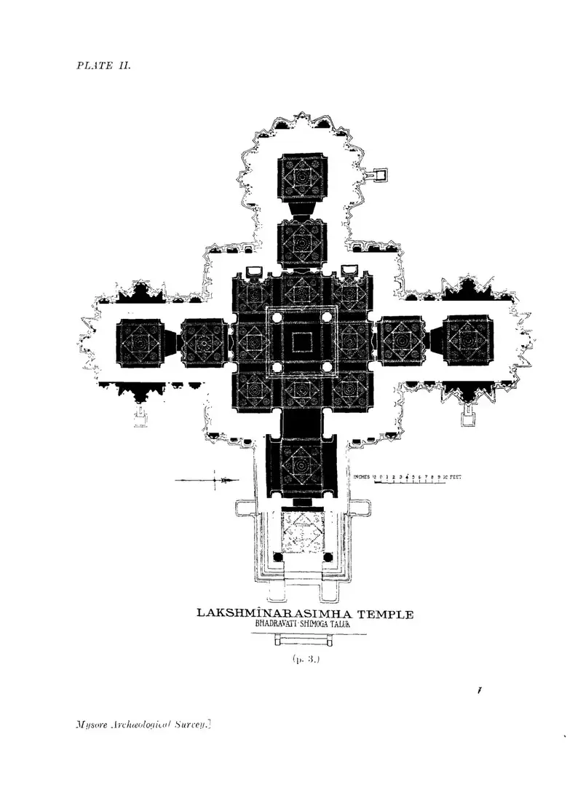
- LAKSHMÎNARASIMHA TEMPLE BHADRAVATI-SHÎMOGA TALUK (p. 3)
Cited in the text: p. 3 ↩
Part II: Study of Monuments and Ancient Sites
Bhadrâvati
Lakshmînarasimha Temple
Situation; History; General Description; Platform; Basement; Wall Sculptures; Towers; The Porch; Navaraṅga; South Cell; North Cell
The town of Bhadrâvati which was formerly known as Benkipur, is situated on the north or right bank of the river Bhadrâ, the Bhadrâvati Iron Works being on the south bank. The river makes a loop here and the town is situated where the river flows westward as a pašchimavâhint for about three furlongs. In the centre of the old town on the top of a rising ground is the temple of Lakshmînarasimha. (Plate III, 1.) The priest's house, other buildings and trees now hide its view.
There are two inscriptions in the temple. The one outside its north-east wall is of the Vijayanagar period. On the beam of the eastern extension of the navaraṅga is a Hoysala inscription of six lines which records a gift to the temple in the late Hoysala days. The temple was, in all probability, constructed somewhere about the middle of the 13th century A.D., perhaps in the reign of Sômésvara or Narasimha III.
This monument is a trikûtâchala or three-celled temple in the Hoysala style with three towered garbhagrihas and three sukhanâsis opening into a common navaraṅga. (Plate II.) On the east of the navaraṅga, a vestibule has been added in the shape of an extra ankaṇa but its unsculptured walls and doorways lead us to doubt whether these were originally there at all. Just outside the east doorway is a small porch of one ankaṇa.
As usual, the temple has been raised up on a platform supported by elephants at the important corners and corresponding to the contour of the temple itself whose three cells are star-shaped. Since the courtyard is covered with earth almost to the height of the platform, only one or two elephants which have been excavated are visible.
The basement of the temple has six deeply cut cornices whose roughly shaped mouldings have been left unsculptured. Here and in many other places the temple clearly shows that it was left unfinished.
The outer face of the wall is divided into the upper and lower halves by an eaves-shaped cornice. Above it, supported on pilasters, is a row of turrets, none of which shows very elaborate workmanship. Below the cornice, on the various faces of the star-shaped wall, are rows of sculptured figures, about 15 inches high. Most of these have been left uncarved on the south cell, while on the west and north cells they have been carved but not finished. They are not remarkable either for beauty or for finish and do not deserve detailed notice. However, the more important of them are just noticed here.
South-east wall of navaraiga :
Standing Vishnu; man and woman embracing; Sûrya with lady; Môhinî dancing.
South cell :
No sculptures.
West cell :
South face:—Dancing Gapêsa; Mahishâsuramardinî; dancing Sarasvatî, standing Sarasvatî, Bhairava; Mâdhava; Vênugôpâla; Môhinî dancing; Kâliîngamardana; Kêsava; Vênugôpâla in several poses; Môhinî as huntress and in other poses; Mâdhava; Manmatha and Rati; Sûrya (sculptor Mâba); Harihara; Môhint and Dakshinâmûrti; Gôvinda; Lakshmînârâyaṇa.
(West end)
North side:—Môhinî dancing; Môhinî with monkey; Kôdaṇdarâma with Lakshmaṇa and Hanumân; Kâliîngamardana; Ugranarasimha; Kêsava; Hâlâyudha; Mâdhava; Gôvardhanadhâri; Šiva as Jalandhara-sainhâri; dancing groups; Krîshṇa plundering suspended butter vessels; Môhint in various poses.
South cell :
Durgâ dancing; Yôganârâyaṇa; Môhint dancing; Kêsava; Varadarâja; Vâmana; Vênugôpâla; Janârdana; Gôvinda; Pâṇduraṅga; (Krîshṇa standing with both hands akimbo, holding flowers or bags); Dakshinâmûrti; Kâliîngamardana; Šiva dancing with skull-headed mace; Kêsava; Paraśurâma; Sûrya; standing Vishnu; Rati and Manmatha; Madhusûdana; Bhairava; Gôvinda; Môhinî dancing; a long-coated man holding sword and shield, very probably the officer under whom the temple was built (may not be Dakshinâmûrti?); Vênugôpâla; Gôvardhanadhâri; Krîshṇa plundering suspended butter vessels; Kâliîngamardana.
The eaves are remarkably short, projecting between six and nine inches only. Except for the pendent knobs, they are insignificant.
The parapet which is made up of a series of stone towers has been covered over, in most places, by a thick coating of chunâm. Where the original stone is visible it is only rough and unsculptured.
Each of the three cells has a star-shaped tower of soap-stone, each with a projection over the corresponding sukhanâsi, but instead of the usual five rows of turrets, with only three, the topmost of these being without śikharas. The two upper series of towers and the śikharas appear to have been pulled down and removed completely and substituted with the present cone-shaped concrete śikharas. It is not known when these repairs took place but the presence of a large ventilator in the centre of the navaraṅga suggests that the repairs might have been effected in the days of Mr. Arcot Srinivasachar, Muzrai Superintendent.
The porch which is only one aṅkaṇa square appears to have been introduced after the rest of the temple was built, though it is also definitely Hoysalā. It has two round Hoysalā pillars on its side benches or 'jagalis' and its rounded parapet railing is unsculptured. Its ceiling has a moderately deep padma, made out of a single slab.
The navaraṅga is entered by a vestibule of one aṅkaṇa, the only remarkable thing about which is its existence. The navaraṅga proper is the usual hall of about 20' \times 20' having nine squares. Its four pillars are of the usual round Hoysalā type. Against its west wall are two towered niches containing fine images of Gaṇêśa and Sarasvati. These, of course, are among the five deities which form the 'Vishṇupañchâyatana' of the temple.
The ceilings which are formed by four sets of slabs rising above the beam have finely designed small domes scooped out of single slabs. The central ceiling, however, has been disturbed so as to allow the construction of a ventilator.
The south sukhanâsi is entered by a doorway whose beauty is concealed by a thick coating of chunâm. But on either side of the jamb is a perforated screen as in the other sukhanâsi doorways.
In the south cell, standing on a large Garuđa pedestal, is a fine image of Vênugôpâla, about five feet high (Plate III, 2). His ornaments, the flute, the fingers playing upon them, his attendant ladies, joyful cows, and the Gôpas and the tamâla tôraṇa over his head are all finely carved, though the left leg on which the weight is borne appears too short and the centre of gravity of the upper body shifted far to the right. (The right forefinger is broken and can be repaired).
The north cell is similar to the one on the south, its perforated screen being of a different design. In this cell, on a Garuđa pedestal, is a standing image of Vishṇu as Purushôttama, 5\frac{1}{2} feet high, holding chakra, padma, śaṅkha and gadâ. The image is fine but is much coated with wax. On its tôraṇa are the usual ten avatâras.
North Cell.
The sukhanâsi doorway of the west cell is flanked by small dvârapâlakas and fine perforated screens of scroll design. Above the lintel is a Lakshmînarasimîha group concealed in chunâm. The sukhanâsi ceiling has a finely designed dome having two series of horse-shoe arches.
West Cell
The image in the main cell is a fine one of Narasimîha in sukhâsana with Lakshmî on his left lap. The image is well made, though its mane is somewhat conventional. On the tôraṇa are the usual ten avatâras.
Part II: Study of Monuments and Ancient SitesTarikere
Fort; the Pâllegâr's Palace; Késáva Shrine
There is a large area known as the 'Fort', surrounded by a mound which contains remnants of the old fort wall. In a part of the ditch runs the Mysore Railway line.
Fort.
The palace of the Pâllegârs, which is described as a large-tiled structure, was sold by auction by the Pâllegâr family sixteen years ago to pay debts to the Pâllegâr of Kangundi Kuppa. Now nothing of the palace remains; shops cover the whole place.
The Pallegar's Palace.
The Kêsava shrine is a modern one of the Pâllegârs' time containing a soap-stone image, five feet high, of Kêsava which is surely a Hoysala inage for which a shrine was built later.
Kesava Shrine.
By the north gate of Pûrnaiya's choultry are four round soap-stone Ballâla pillars and two groups of Sala killing the Lion, each 3' high, one of which is in good condition and should be removed to the Museum at Mysore. They were all brought from near the Palace and are said to have originally belonged to the Kêsava temple in the fort.
Amrîtâpura (Tarikere Taluk)
Amrîtêsvara Temple
History; Mukhamaṇṭapa; Railing Panels
This temple has been studied in detail under the following heads:—
I. History. X. Ceilings.
II. General description. XI. The old porches, East and South.
III. Mukhamaṇtapa. XII. The main temple.
IV. Turrets on basement. XIII. Basement.
V. Railing panels. XIV. Wall ornamentations.
VI. Eaves. XV. Eaves.
VII. Parapet. XVI. Parapet.
VIII. The manṭapa inside. XVII. Tower.
IX Pillars. XVIII. Doorways.
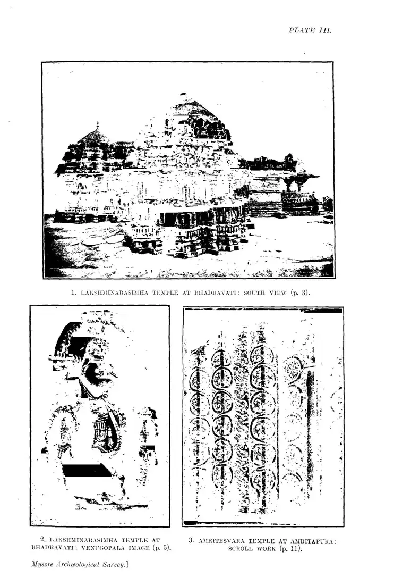
- LAKSHMINARASIMHA TEMPLE AT BHADRAVATI: SOUTH VIEW (p. 3)
- LAKSHMINARASIMHA TEMPLE AT BHADRAVATI: VENUGOPALA IMAGE (p. 5)
- AMRITESVARA TEMPLE AT AMRITAPURA: SCROLL WORK (p. 11)
XIX. Navaranga. XXIV. Garbhagriha.
XX. Images in the navaranga. XXV. The Dêvi temple.
XXI. Ceilings of the navaranga. XXVI. Sûle-manṭapa.
XXII. Sukhanâsi doorway. XXVII. Compound wall.
XXIII. Sukhanâsi. XXVIII. Other old structures in the village.
The notes on a few of these only are given below :—
There are about ten inscriptions in the temple of Amṛitêśvara and its compound.
Of these, the one on a large slab set up in the south-east of the temple is the oldest. It claims to be the composition of Janna, the famous Kannaṇa poet, and was set up in the year 1196 A. D. when the temple was consecrated. Amṛitêśvara Daṇâyaka, a Hoysaṇa officer, appears to have got the temple erected and the linga of Amṛitêśvara consecrated in the same year in the reign of Ballâla II. Several grants were made to the temple in 1206 and 1210 and also in 1547 A. D. under the Vijayanagar rulers. A close study of the temple suggests the view that the main temple with its garbhagriha, sukhanâsi, navaranga and original porches was built in 1196 A. D. Later on, perhaps in 1206, the mukhamanṭapa was constructed. However, the whole structure and most of the neighbouring structures are all characteristically Hoysaṇa in origin and workmanship.
The mukhamanṭapa has a unique feature in that the outer facing of its basement is covered by a series of beautiful turrets which are alternately large and small. There are about 100 of these towers and the designs show some variety. Each one of them is borne on an ornamental pilaster, often star-shaped. The smaller towers are in proportion to the width of their bases, are tall and uniformly tapering, while a few have curvilinear outlines. Of the larger ones, the majority are star-shaped and curvilinear in design, while on top they have similarly star-shaped and inverted lotus śikharas with stone kalaśas. This combination of a curvilinear outline with a star-shaped plan, the elevation of each ray of the star being made up of seven smaller turrets tapering up one above the other, is peculiar even among Hoysaṇa towers. It has rarely been used even for the larger towers of the temples—one example being the Sadâśiva temple at Nuggehalli. Between each pair of towers, generally, are figures of lions trampling on elephants or pairs of elephants rearing up.
Above the row of turrets is a long railing running around the whole manṭapa.
The upper and lower portions of it are ornamented with creeper designs: the lower (a) with scroll work and the upper (b) with wavy designs. In the numerous convolutions of the scroll work, various kinds of figures have been carved, like flowers, fruits, peacocks, swans and monkeys in various sporting attitudes and men,
Railing Panels.
women and animals mixed up in all manner of obscene postures, some of them relating to sexual perversities.
The railing faces themselves are divided by roundish pilasters alternately into large and smaller panels. The smaller spaces are sculptured with the figures of ṛishis, âkshasas, monkeys or with obscene figures generally unconnected with the other sculptures. But in the larger panels the great Purâñic stories are depicted with great vigour and power, though the carvings are not so accurate and fine as those on the railings of the Belur temple. They are beautiful and of nearly the same size and character. They are definitely finer and more expressive than the storied sculptures on the wall friezes of the Hoysalêśvara, Kêdârêśvara and Somanâthpûr temples, (Plate IV). On the south railing is given the story of the Râmâyaṇa running from west to east, while on the north railing, from west to east, are the ten skandhas of the Bhâgavata and the earlier part of the Mahâbhârata. The important panels are here noticed:—
South railing—commencing from the wall of the navaraṅga and running eastward.
Râmâyaṇa
1. The Dêvas and the ṛishis beseech the help of Vishṇu as Anantaṣayana.
2. Daṣaratha performs the Putrakâmêshṭhi yâga.
3. Daṣaratha in durbar with his three wives and four sons.
4. Viśvâmitra borrows Râma and Lakshmaṇa from Daṣaratha.
5. The princes follow Viśvâmitra.
6. Râma slays Tâṭakâ.
7. Râma punishes Mâricha and Subâhu.
8. Viśvâmitra and the princes visit Janaka.
9. Râma breaks Śiva's bow.
10. Râma defeats Paraśurâma.
11. The newly married return home.
12. Daṣaratha blesses (his heroic sons) Râma, Lakshmaṇa and Sitâ when they depart to the forest.
13. Râma refuses Bharata's request to return to Ayôdhya.
14. Lakshmaṇa cuts off Šûrpanakhî's nose.
15. Sitâ sees the golden deer.
16. Position reverse: Râma slays the golden deer.
17. Râvaṇa abducts Sitâ.
18. Râvaṇa is attacked by Jaṭâyu.
19. Jaṭâyu informs Râma.
20. Hanumân and Sugrîva meet Râma.
21. Râma makes a treaty with the monkeys.
22. Râma shoots through the seven palms.
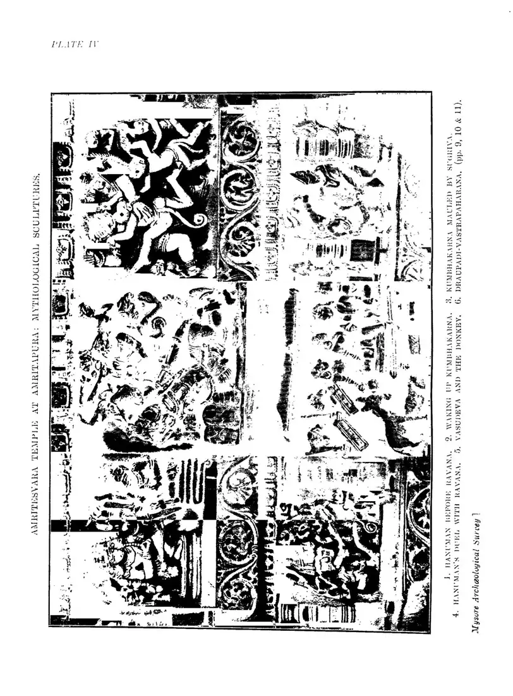
- HANUMAN BEFORE RAVANA. 2. WAKING UP KUMBHAKARNA. 3. KUMBHAKARNA MACTEED BY SCGIRYA
- HANUMAN'S DUEL WITH RAVANA. 5. VASUDEVA AND THE DONKEY. 6. DRAUPADI-VASTRAPAHARANA (p. 9, 10 & 11)
Cited in the text: p. 8 ↩, p. 9 ↩, p. 9 ↩, p. 9 ↩, p. 9 ↩, p. 10 ↩, p. 11 ↩
23. Râma slays Vâli.
24. Coronation of Sugríva.
25. Râma blesses Hanumân (?) perhaps for bringing the message from Sitâ.
26. The monekys bridge the strait.
27. Vibhishaṇa seeks Râma's protection.
28. Sitâ in Ašôkavana.
29—30. Hanumân faces Râvaṇa in his court. (Plate IV, 1.)
31. Battle between Lakshmaṇa and Indrajit.
32. Indrajit with his elephant standard.
33, 34, 35. Indrajit is slain.
South Doorway :—
36. Râvaṇa threatens Sitâ.
37. Sitâ does not yield to temptations.
38—39. False heads of Râma and Lakshmaṇa are shown to Sitâ.
40. Hanumân lectures to Râvaṇa.
41—42. Râvaṇa's followers, Šunaka and others (the names of some of these are inscribed by the sculptors).
43—44. Hanumân and Nala kill Jambumâli and other râkshasas.
45—46. Râma slays the demon generals (one of whom has the face of a tiger).
47. Elephants and trumpets rouse Kumbhakarṇa from his sleep (Plate IV, 2).
48—49. Kumbhakarṇa marches out at Râvaṇa's orders.
50—51. Kumbhakarṇa slays many monkeys.
52. Kumbhakarṇa is mauled by Sugríva. (Plate IV, 3).
53—54. Râma slays Kumbhakarṇa.
55. Râvaṇa's yajña is spoiled by monkeys.
56. The monkeys assault Râvaṇa's women.
57. Hanumân's duel with Râvaṇa. (Plate IV, 4).
58 to 62. Battle between Râma and Râvaṇa.
63—66. Râvaṇa is slain.
67. Râma and Sitâ are reunited.
68 to 71. Râma's durbar amidst his monkeys.
East Doorway :—
North railing — commencing from the navaraṅga hall and running eastward.
Bhâgavata
1. Kainsa in durbâr.
2. The labour of Dêvaki.
2
3. Vasudêva bows to a donkey, begging it not to reveal Kṛishṇa's birth.
(Plate IV, 5.)
4. Durgâ escapes Kaṇsa's slaughter.
5. Vasudeva removes Kṛishṇa across the Yamunâ .
6. The Gôpas receive Kṛishṇa.
7. Yaśôdâ takes charge of Kṛishṇa.
8. Kṛishṇa is put into a cradle.
9. Kṛishṇa slays Śakaṭāsura.
10. Kṛishṇa slays Pûtanî.
11. Kṛishṇa is scolded by his mother.
12. Kṛishṇa slays the stark.
13. Kṛishṇa slays the calf by throwing it at a tree.
14. Kṛishṇa fights the cocks.
15. Kṛishṇa uproots the twin trees.
16. Kṛishṇa is scolded.
17. Kṛishṇa loots butter.
18. Kṛishṇa plunders vessels suspended from the roof.
19. Kālingamardana.
20. Vēnugēpâla.
21. Gôvardhanadharaṇa.
22. Kṛishṇa slays the bull.
23. Kṛishṇa slays the horse.
24. Akrûra takes out Kṛishṇa and Balarâma.
About half a dozen panels are unworked.
25—26. Kṛishṇa slays Kaṇsa—damaged.
North Doorway :—
Mahâbhârata
Tower; Ceilings
1—3. Kuntî and the Pâṇdavas seek the protection of Bhîshma .
4. Bhîshma scolds the Kauravas.
5. The five Pâṇdavas.
6. Bhîma fells the Kauravas from the tree perch.
7. Arjuna helps Drôṇa teach Drupada a lesson.
8. Virôchana deceives the Pâṇdavas.
9. The house of lac is burnt.
10. Bhîma rescues the Pâṇdavas.
11. Bhîma slays Hiḍimba.
12. Bhîma slays Bakāsura.
13. Drupada obtains Dhṛishṭadyumna and Draupadî from the fire.
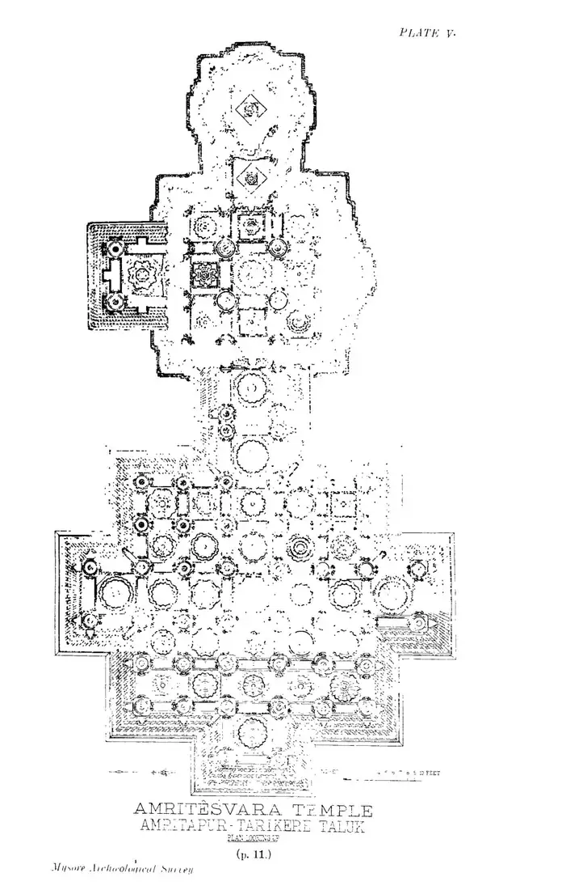
- AMRITÈSVARA TEMPLE AMRITAPUR-TARIKERE TALUK PLAN LOOKING UP (p. 11)
Cited in the text: p. 11 ↩
14—15. Arjuna shoots the fish and wins Draupadi.
16—17. The Pâṇdavas defeat and drive off hostile princes.
18. Arjuna, supported by Krìshṇa, grants Agni's request.
19—20. Arjuna burns the Khâṇdava forest.
21. Arjuna and Krìshṇa defeat Indra.
22—24. Yudhishṭhira performs Râjastùya under Vyâsa's guidance.
25—26. Krìshṇa slays Šišupâla.
27. The Pâṇdavas and Krìshṇa at dice.
28. Duśsâsana undresses Draupadi. (Plate IV, 6.)
29. The Pâṇdavas, while leaving for the forest, are attacked by a demon (?)
30. Arjuna performs penance on the Indrakîla hill.
31—33. Arjuna fights for the boar and defeats Šiva.
34. Šiva bestows Pâsupata arrow on Arjuna.
The tower of the main temple is a soap-stone structure with seven rows of indented square-shaped kîrtimukhas rising one above the other in the west, south and north. In each one of these is usually seated one of the 18 Rudras. The stone kalaśa on the west has disappeared and has been replaced by a metal kalaśa. The tower has its usual projection over the sukhanâsi and this projection is supported by beautiful figures of Brahma and Vishṇu on its sides and bears on its top the characteristic group of Salà fighting the lion; and on its front face is a large kîrtimukha with Šiva as Gajâsuramardana in its centre—a beautiful image of Šiva dancing on the elephant-demon, ten of its 16 arms being broken. Near him are Nañdi, dancing Gaṇêsa, Kinnara and goblin, while to his right stands Brahma playing on his vîṇa and on his left Vishṇu accompanies on the flute. On the tôraṇa are the eight Dikpâlakas and the whole group is a fine piece of Hoysalà sculpture. In front of this group, the roof of the navaraṅga bulges up and is stated to have contained in this bulge a large room supported by 9 pillars.
The navaraṅga has in all 30 ceilings, each with a dome. (Plate V.) Each dome has its own peculiar design and some of the designs are rare forms, like those near the northwest angle. Since it is difficult to describe these by words, an attempt has been made to depict them in outline in the ceiling plan. Some of these remind us of some ceiling plans of the Châlukyan temples only rarely found in the Mysore State. The central ceiling, however, has rows of carved figures, the lower one containing dancing Gaṇêsa, Šiva, Kumâra, Vênugđpâla, Brahma, etc., and the upper one, the 8 Dikpâlas and attendants.
The walls of the temple are decorated with vertical scroll bands of beautiful and varied designs. (Plate III, 3.)
The southern and eastern porches of the original temple are also similarly designed and have nothing remarkable about them. But the north wall has no porch on that side. It shows that the southern porch was intended for communication with the Dêvi's shrine in the right courtyard.
Part II: Study of Monuments and Ancient SitesNarasimharâjapura
About one mile to the south-west of Narasimharâjapura is a group of Jain buildings constructed almost entirely of wood and earth.
Basti Buildings
Image of Chandraprabha; Jvâlâmâlini Temple; Śântinâtha Basti
Image of Chandraprabha. It is a fine image and gives the idea that the seated figure is a boy of about eight years. There is the Moon on the pedestal, symbolic of Chandraprabha. (For other details see M. A. R. 1916).
The temple of Jvâlâmâlint is also a structure of about the 18th century. The goddess (Plate VI, 3) is seated in the sukhâsana posture and holds in her eight hands dâna, double arrow, chakra, trisúla, pâśa, flag, bowlet, and kalaśa. The image appears to be of the Vijayanagar period, with its thick breast band and rough drapery. It is moderately good and a rare icon. On the brass facing of the pedestal, there is a three-line Kannaḍa inscription. The goddess has a buffalo pedestal and thus peculiarly combines the characteristics of a number of goddesses.
Śântinâtha is a fine figure, about three feet high, of dark stone and is of the 14th century with an inscription on one side. Most of the tile-roofing of 150 years ago has been done with tiles similar to those found at Chandravalli (Chitaldrug). The old compound walls are of laterite bricks.
Santinatha Basti.
Jambiṭige Agrahâra
Îsvara Temple
No heading in the body: this section starts at its printed page (12).
This is an agrahâra by the side of the Tungâ river, about one mile from Hariharapura on the Koppa road. It has about fifteen Brahman houses, ten of which form an enclosed wood and tile 'vathâra.' In the centre of the courtyard thus formed stands a small Dravidian temple of granite (20' × 10' × ht. 27') dedicated to Nilakanṭhêsvara (Plate VI, 2). A long Kannaḍa inscription on the stone basement records that the temple was built in 1733 A. D.
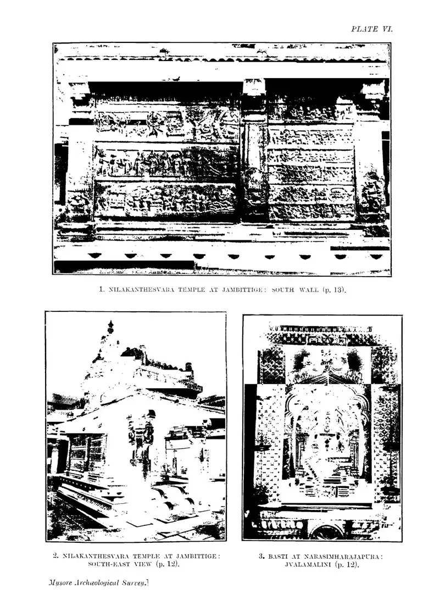
- NILAKANTHESVARA TEMPLE AT JAMBITTIGE: SOUTH WALL (p. 13)
- NILAKANTHESVARA TEMPLE AT JAMBITTIGE: SOUTH-EAST VIEW (p. 12)
- BASTI AT NARASIMHARAJAPURA: JVALAMALINI (p. 12)
Part II: Study of Monuments and Ancient Sites › NarasimharâjapuraSculptures
No heading in the body: this section starts at its printed page (13).
The temple has a garbhagrīha, a sukhanāsi and a mantapa of two Dravidian pillars. In the garbhagrīha (6' × 6') which is quite plain, there is a granite pedestal, 2½' high. On the latter stands a small linga of black stone, 7'' high, which is old, though the temple itself is new. The sukhanāsi (6' × 4') has a bull. The inner walls and the outside of the temple are fully carved with reliefs. (See M. A. R. 1916.)
INNER WALLS.
West.—
Gaṇēśa on a rat in a vimāna which is placed on the back of an elephant; Durgâ on a maneless lion with abhaya, chakra, śaṅkha and dâna. Above, the story of Vâlmiki in a frieze.
North.—
Brahma; Chandra in a manđala, with ten hands holding akshamâlâ and pustaka in two hands and kumbhas in the other eight, being driven in a chariot drawn by ten horses: Súrya-Nârâyaṇa with gadâ, chakra, śaṅkha and padma, being similarly driven in a chariot of seven horses; Bhûmanđala with Âdisêsha—the eight gajas and Mêru-parvata are one above the other.
South.—
Mahêśvara in chariot, with his ten hands thus disposed: abhaya, đamaruga, trisûla, chakra, śaṅkha, padma, gadâ, pâśa, sarpa and dâna; Vênugôpâla below.
OUTER WALLS.
East.—
The eight Dikpâlas: Agni is absent and the north-east is blank; the ten avatâras including a Jina-like standing Buddha and Kali, confused for Kalki and showing Kali allowing his wife to ride while his mother carries burden behind. On the jambs in front of the Dvârapâlas, the attendent female figures are Ahalyâ and Târâ.
South.—
West square: From 'Šeshaśâyi' to 'Sundarakânda Râmâyaṇa'; East square: 'Mahâbhârata' from 'Virâṭa-parva' to the end (Plate VI, 1).
West.—
'Râmâyaṇa' from 'Sitâ-kalyâṇa' to the death of Râvaṇa.
North.—
West square: 'Bhâgavata' from 'Śêsha-śayana' to the death of Kaṅsa; 'Bhârata': birth of the Pâṇđavas.
The Brahmans of the place belong to the Kandâvâra community and are the disciples of 'Bâle-Kuduru maṭha' of South Canara and not of Śrīṇgêri.
Part II: Study of Monuments and Ancient SitesHariharapura
Narasimha and Śâradâ Temples; Mâdhavêsvara Temple
The Svâmi of the Šrí-Maṭha has been away touring for the last seven years. His name is Šrí Svayainprakáśa Šrí Râmânañda Sarasvatí Svâmi.
The Narasimha temple is very modern and of stone and has a metallic image of Narasimha. But the Šâradâ temple has a Šrí-chakra yantra said to have been drawn by Šankara. On this a metal Šâradâ is now kept and worshipped. The site is only a few yards from the river Tungâ which flows north-west.
The Mâdhavêsvara temple has two inscriptions (read in 1916). Between the modern images of Gaṇapati and Veñkaṭaramaṇa of the 18th century, is a linga, 2" in diam. and 4" high, on a pedestal, 10" high.
Śrîngêri
Halê Śrîngêri Vidyâśaṅkara Liṅga; Vidyâraṇyapura Sadâśiva and Pârvatî Temples; Lakshmînarasimha Temple; Hariharêsvara Temple; Pârévanâtha Basti; Mallikârjuna Hill and Temple; Janârdana Temple; Vidyâśaṅkara Temple
Hale-Šringêri is a village two furlongs to the west of Šringêri with about one Brahman and twenty other houses. It has a small mud shrine, housing the old Vidyâśankara linga which is about six feet high. (Plate VII, 2.) On a 'pâñibaṭlu' or pedestal, 1½ feet high, is a square pillar-like linga with images carved: on the east is the monk Vidyâśankara (1½ feet high, in yôga-mudrâ with a sanyâsi discipline on either side, while on the prabhâvalî above him is Lakshmi-Narasimha with Šrí and Bhú on right and left and Súrya and Chandra, respectively beyond them: on the south face is Brahma, three-headed, seated with the eight Dikpâlas on the prabhâvalî; on the west face is Vishṇu with chinmudrâ, chakra, śankha and padma; and on the north face is Šiva with the attributes--abhaya, paraśu, đamaru and dâna. Above the pillar linga, for about a foot and a half from the top, is another complete linga with pâñibaṭlu (?)
Vidyâraṇyapura lies about a furlong southwards and has at present only 35 Brahman houses out of the 120 families originally living there. All the original donees are said to have been either 'Kammes' or 'Hoysaṭa Karnâṭakas' who sold away their houses to others subsequently. Vidyâraṇya also must have been a Karnâṭaka. But Vidyâśankara is said to have been a 'Choṛi' since some 'Choṛis' have set up his image in the agrahâra. These people, too, have now left the place. The temples dedicated to Sadâśiva linga and Pârvati are later and unimportant structures. The Âdiśankara temple has a fine granite
Sadasiva and Parvati Temples. mûrti made by workmen from Madras fifteen years ago.
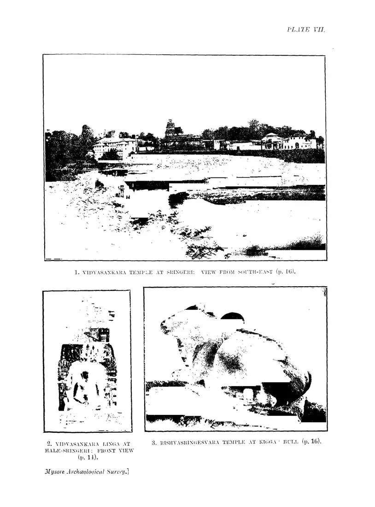
- VIDYASANKARA TEMPLE AT SRINGERI: VIEW FROM SOUTH-EAST (p. 16)
- VIDYASANKARA LINGA AT HALE-SRINGERI: FRONT VIEW (p. 14)
- RISHYASRINGESVARA TEMPLE AT KIGGA · BCLL (p. 16)
In the Lakshmî-Narasiinha temple, the image of the deity, about 2\frac{1}{2} feet high, is rudely executed; but it is said to have been installed, along with Sadâśiva linga, by Vidyâraṇyasvâmi.
Lakshminarasimha Temple.
Thè small temple of Hariharêsvara situated on a high ground about a furlong to the west of the Vidyâšañkara temple, has only a garbhânkaṇa ( 5\frac{1}{2}' \times 5\frac{1}{2}' ) and a mukhamanṭapa ( 6' \times 6' ) both of which are built in the common-place modern Dravidian style. The granite image, however, of Harihara, which is about 4\frac{1}{2} feet high, may be even dating from the 14th century, as it is said to have come down from the days of Vidyâšañkara and, in fact, as its longer lower limbs indicate. (The Nâgari inscription by its side has already been read.)
The Pâršvanâtha basti which lies in the centre of the town has a garbhagriha, a sukhanâsi, a circumambulatory passage (pradakshiṇa) and a navaraṇga with pillars having octagonal shafts and square and wheel-shaped mouldings. The mukhamanṭapa in front does not seem to have originally belonged to the basti, but to have been brought over from elsewhere and set up here. The main temple ( 50' \times 30' ) which is probably earlier than 1400 A. D. has a peculiar sloping roof made of granite slabs. The innage inside the garbhagriha is of black stone and about one foot high. In the navaraṇga are kept three images of Pâršvanâtha along with two inscription-stones which have illustrative panels. Of the latter, the larger one is of the 11th century A. D. and has been read by Mr. R. Narasimhachar. Its upper panel has a Jina seated in yôgâsana, while in the lower one is the figure of a mahârâja, also seated in yôgâsana. But the smaller inscription has not been read. Its two first lines are visible but the remaining three are worn out. Here are also two panels: on top Jina is seated between two female attendants; below, a yati teaches a râṇi who has her hands folded and is being fanned by her female attendant with a fly whisk.
On the north is the Mallikârjuna hill, about 100 feet high, which is climbed up by a fine flight of about 170 steps. A middle sized temple with two prâkârâs exists on the top of this hill. It has four inscriptions and appears to have been constructed about the same time as the Kigga temple, that is, probably, during the early Vijayanagar period (14th century). It has a garbhagriha ( 15' \times 15' ), a sukhanâsi ( 15' \times 7' ) and a navaraṇga ( 30' \times 30' ), all squarish or oblong. The garbhagriha has a linga (4' high) called Mallikârjuna which is said to have been worshipped by Rīshyaśrīnga in the 'Trêtâ-yuga.' Vibhâṇdaka is also said to have been absorbed into it; hence the linga has the second name 'Vibhâṇdaka-linga.' A third name for it is 'Malahani Karêsvara'. The sukhanâsi doorway is guarded by dvårapâlas and chauri bearers, while at the end of the west wall of the navaranga are Gaṇapati on the south and Durgâ (Mahishâsuramardinî) on the north. The central ceiling of the navaranga has a well carved Bhuvanêsvari which is fine and neat for granite work. Both in the navaranga and the mukhamanṭapa the pillars, which are 16 sided and have 4 sided bases, are well ornamented with relievos of Ugranarasimha, Vîrabhadra, Āñjanêya, Kâlingamardana, Durgâ, Chandra, Chandikêsa (?), Śrî Râna, Lakshmî-Narasimha, Shaṇmukha, Vênugôpâla, dancing musician and a servant. The stone 'dipastambha' containing the figure of Gaṇapati drawn by Narasimha Bhârati lies to the north of the temple front.
The Janârdana temple is a very old structure with its roof formed of slabs slopingly placed lengthwise but not breadthwise as in the Janardana Temple. Jain temple. The large granite manṭapa on the right bank of the river has a finely polished black stone (made recently by Chidambaram workmen), a linga, a brindâvana of the late svâmi and his statue.
VIDYĀŠAŃKARA TEMPLE.
(Reserved for a detailed study later on)
(Plate VII, 1).
Kigga
Rishyaśriṅgéśvara Temple
No heading in the body: this section starts at its printed page (16).
This is about 6 miles to the west of Šringêri by road. The Rīshyaśringêsvara Temple at this place has two prâkârâs, the inner one of which has near its door two stones containing five inscriptions (E. C. VI Koppa 37). In the south-west corner of the same prâkâra and in front of a modern substitute for the old Mallikârjuna linga is a Basava or bull brought from an old temple situated about 20 yards east of the big temple (plate VII, 3). This bull which has no ornaments is most natural looking and probably dates from the Pallava times. It is of very great sculptural value, since it is highly realistic and has little of the conventionalised work.
The temple has a garbhagrīha (about 12' × 12') a sukhanâsi (10' × 8') and a pradakshiṇa. On either side of the garbhagrīha doorway is a small shrine, the one on the right containing a two-handed Gaṇapati and that on the left, Mahishâsuramardinî. The linga which is 5' high, tall and pillar-like (4' in height) has three small projections—one on top like a horn, another to its left like a lady (consort Śântâ) and a third in front representing Nandi.
Both the garbhagrīha and the sukhanâsi are plain. The pillars in the navaranga (30' × 30') have octagonal shafts with square mouldings below and round ones above; while on the panels of these mouldings are, in low relief, the following figures which are of early Vijayanagar workmanship:—
Part II: Study of Monuments and Ancient Sites › HariharapuraNandimaṇṭapa
No heading in the body: this section starts at its printed page (17).
Kâlîngamardana; haînsa couple; Ugra-Narasimha; a dêvî (Gañgâ?) standing on makara; a dancing hermit with musical instruments; Gôpî and Krîshṇa; Râma, Lakshmaṇa and Sîtâ; Garuđa; two snakes forming an ornamental square; Kinnari with one head and two bodies; ornamental padma; makara with floral ornamentation; three haînsas forming a chakra; ornamental vrîksha; padma; lady with mirror; makara; Gaṇapati; ornamental designs; Hanumân; haînsa; lady dressing her hair; horseman; elephant; three acrobats revolving in a wheel, holding alternate hands and legs; and lady looking into mirror.
The mukhamaṇtapa has six pillars, four of which have ornamented octagonal shafts and wheel top.
The whole temple is of granite. Round the manṭapa is a stone bench. The two front pillars of the manṭapa are Dravidian with man-ridden lions rearing upon elephants.
Opposite to the temple is a Nandi manṭapa with a bull. The two pillars forming the inner porch of the temple are very old and one of them has an ancient Châlukyan inscription. These pillars might have been brought from some ruined temple and used here.
Narasimha Parvata
Kála Bhairava Stone Image; The Rivers; Ugra Narasimha; Foot Prints of Rishyaśriṅga; Tradition; Manipura
This is climbed up by a hill pathway, three miles long, from Kigga. Half way up, to the west of the path, there is said to have been a naked Kâla Bhairava image of dark granite, which was entombed by a landslide. Near the top, just to the east, is a plain having in its eastern part a water tank (25' × 10') in which the rivers Nandinî, Nalînî and Sîtâ are said to take their origin. Right on the top of the hill, about 15' south-east of the boundary line and between two boundary marks, is a natural boulder, 6' high, in the upper part of which are several natural and very faint depressions which, putting together, may be imagined to represent the god Ugra Narasimha, about 3' in height, tearing Hiraṇya-kašipu to pieces. A few small modern stone Gaṇeśas are
The Rivers. are several natural and very faint depressions which, putting together, may be imagined to represent the god Ugra Narasimha, about 3' in height, tearing Hiraṇya-kašipu to pieces. A few small modern stone Gaṇeśas are
Ugra Narasimha. kept near it by the worshippers. The late Svâmi Narasimha Bhârati of the Śriñgèri maṭha used to spend the Chitra month of every year here. On a boulder to the right are two sets of foot prints said to be the genuine and forged ones of Rîshyaśrînga muni who was ordered by
3 the god to go to Kigga for 'tapas'. (By the side of these foot prints is a modern Kannađa inscription). About 3' to the front of Narasimha is a rude stone, 2½' long and 1' high, said to be worshipped with butter as a tiger. About 20 yards to the south of the god are two small boulders pointed out as 'Sarpa' and 'Garuđa'; and 20 yards to the south-west is a triangular stone, 3' by 3', called Vana-Durgi. A furlong to the north-west is a rock on which Nandi's feet and chain are seen. There is said to be a Durgâ temple half a mile lower down on the west.
Narasimha is said to have been pleased with this spot and its peaceful atmosphere and ascetics. He shed tears of joy from which sprang the two rivers Nandini and Nalini. The river Sitâ which goes to South Canara is said to have originated from the overturned 'Kamandalu' of Bhârgava. The devotees are in the habit of building small temples for merit.
About three miles to the south is a large hilly table-land which is pointed out as Manipura, the capital of Babhruvâhana. This fact is interesting, since another place of the same name close to Châmarâjanagar in the Mysore District has the same tradition. The site has to be studied detail.
Manipura.
Kalasa
Kalaséśvara Temple
No heading in the body: this section starts at its printed page (18).
The Bindumâdhava and the very small Durgâ temples at Kałasa are both unimportant modern structures.
The Kałasésvara temple stands on a hillock to the east of the town and faces east. The outer prâkâra is modern and is, except in front where it is of stone, of wood and tiles. The main building is definitely of the Nâyak period. It has a garbhagriha with a linga (9") slanting towards the north. The navaranga, which has doors both to the north and south, has 16 sided wheel-topped granite pillars of the Nâyak days. The mukhamanṭapa is supported by four plain pillars inside and two lion pillars of Dravidian type in front.
The Dêvi temple is also of the Nâyak days. The only things of interest here are the two female lion riders who guard the front door.
The main temple has a pyramidical stone 'šikhara' with a metal kalaśa and may belong, more probably, to the 16th than to the 13th century. It is like most malnâđ stone temples (Kigga temple for instance) but of inferior workmanship.
The oldest sculptured piece in the neighbourhood is the Kshétrapati slab which is of soap-stone and has a row of animals running around it. It is about 2' in diameter and has the seven horses in front and makaras on the 'sômasûtra'.
Near the steps and main gate is a regardant lion, about 2' long, of soap-stone, which appears to be a Hoysala work. The only inference to be drawn thus is that formerly stood here a Hoysala temple.
Mr. Venkatadasappa of the place showed about 120 coins of which the following are noteworthy. (Impressions and wax moulds were taken as he would not sell them):—
Part II: Study of Monuments and Ancient Sites › HariharapuraCoins
1. A Gajapati varâha of gold with Kan. ins. 33 in Châlukya characters, clearly visible.
2. A gold coin of Ghiyâsuddin Tughlak.
3. A gold varâha of Veñkaṭapatirâya.
Obv: Veñkaṭêsa
Rev: Leg. 'Śrí Veñkaṭêsvarâya namaḥ'.
Ballálaráyana Durga
Fortress; Citadel
Ballâlarayana Durga is a stronghold which commands the Kotigehar pass leading from the Kadur District to South Canara. A pathway leads up this hill from Hulikân estate. Half way up we come across a gateway which is protected by a breast-work rampart and supported by two low bastions, round in shape, and having holes for musket and cannon. The walls are made of blocks of softish dark slate built in the cyclopean way without mortar. No doorframe is to be found here. Further up the hill towards the trigonometrical point is a stronger gate similar in construction, but with the gate frame of dark trap stone, about 1 foot thick, having ornamental designs of creepers and parrots. Next to the walls, in the corner between them and the frame, are found the sculptured heads of an elephant on the north and of a horse on the south. Round bastions of about the 17th century A. D. protect the gate at a distance. The wall is about 15' high and 12' thick. Above are the battlements. There are holes to indicate the position of the doors behind which a wooden beam must have been used as a belt. The wall has corresponding holes. Inside are the roofless stone walls of two guard-houses.
On the top of the hill, at the west end, is the citadel, the middle portion of which serves as the modern trigonometrical station. A precipice supported by batteries and walls guards it on the way up the hill on the west. A round battery towards the north has cannon mouths overlooking the only way up the hill and the modern Hulikân estate. The view to the north, overlooking the valley full of trees, is beautiful. From the citadel towards the west and south we get a view of South Canara. Both inside the citadel and outside it are the stone walls, sometimes 5½'
Citadel.
high, of buildings, now ruined and roofless. The citadel which is about 80 yards long north to south and 50 broad east to west, is oblong in shape with its gate to the north and its corners being protected by round bastions provided with a parapet wall and cannon mouths and musket holes. The walls of the citadel are about 10' high and have also parapets with musket holes only.
Palace Site
No heading in the body: this section starts at its printed page (20).
To the east of the citadel on a lower level is a large plateau enclosed by low hills in the middle of which are two tanks. Nearby are the ruined walls of stone buildings one of which, at least, to judge by the large-sized rooms and halls, must have been the Palace.
Towards the second gate mentioned above are the old tombs and a part of the second fort wall. Its ramparts have ornamental tops after the fashion of the forts at Bijapur.
Three lines of fortifications including the citadel are definite and by the side of the pathway leading to the first gate is a musket-holed wall overlooking the valley to the east.
Part II: Study of Monuments and Ancient Sites › HariharapuraBábâ-Buḍan Giri
Ruined Fortress; Gálikere Keñcha; Dattátréya Piṭha
About two miles by a pathway to the north of the 'Dattâtrêya Piṭha' is an extensive fortress, now ruined. In a large hollow between the hills is a very deep natural pool (80 yards by 50 yards) which is ever full of water on account of a spring which flows in from the east. A conical natural stone, now covered over with red earth, is called 'Gâlikere Keñcha' and worshipped by people from far and wide. Its priest is now a Śrívaishnava dâsayya (a Kuruba) of 'hâlumata'. Bloody offerings are made to this god Keñcha.
Galikere Kencha. Two lines of fortifications are to be seen enclosing the ridge to the south of the Gâlikere hill. The eastern ramparts are natural precipices. The hill near Gâlikere is 5707 feet high and has precipices on the east overlooking a wide stretch of country including Sakkarepaṭṇa and Madak-kere.
The survey point is now marked by a trap stone pillar which, originally, was perhaps a jamb of the fort gate.
The 'Dattâtrêya Piṭha' is a large cave, about 50' × 15' × 4½', divided into two compartments by a stone wall having a door-frame (3½' × 2½') of evidently Hindu workmanship. At the back of the inner chamber is another frame of the same size leading to a narrow cave into which Dattâtrêya is said to have disappeared. None is allowed to enter it. There is a flat seat in front, facing west, below the low vault of the rock. It is 3½' high only and pointed out as the 'Piṭha' of Dattâtrêya. On the right side of this seat there is in the ground a stream through which water flows during the rainy season. Near the north wall are the seats of the four 'šishyas' of Dattâtrêya, on each side of which is a kałaśa of earth crowned by one of metal. In the outer hall by the side of the north wall, are the tombs of these four disciples of Dattâtrêya: Malik Tujai, Malik Wazir, Malik Kabu and Malik Safir, who are all alleged to have been the sons of the Padshah of Turan. The door ( 4\frac{1}{2}' \times 2\frac{1}{2}' ) of the hall has a padma on the lintel. Opposite to these tombs to the south is a cave ( 2\frac{1}{2}' \times 2\frac{1}{2}' ) through which a tiger is said to visit the seat every Monday and Thursday. A similar cave opposite to it extends to the west. It is a little higher and, in some places, 6' deep. At the western end a deep pit has been formed by flowing water. Evidently there could be plentiful water supply here during many months in a year. Between these two caves is a corridor ( 15' \times 10' \times 8' ) of stone with distinct traces of Hindu workmanship. In front of one of the caves is a porch of stone. To the west of the caves lie a large number of soap-stone beams which must have belonged to a temple.
The open yard in front has a raised 'gaddige' near which is a Persian inscription. In the outer yard within the compound are Moslem tombs some of which have inscriptions in Persian.
The Svâmi Qualandar stated that the Dattâtrêya Piṭha was well known in the times of Ballâla and that Bâbâ Buçan was already there at that time. Subsequently when Malik Kafur invaded the south the gurus of the present svâmi are said to have come from Bijapur about 600 years ago. Tippu in his grant has referred to the 20 villages given by the kings of Ânegondi, which he restored. Malik Kafur's sannad (and Humayun's also) is in the custody of Khaji Syed Mohammed Shah Khadri of Dod Medur, two miles from Belur. The buildings near the 'Piṭha' are said to have been built by Chennammâji of Nagar.
Three miles to the east of the Piṭha, near the eastern precipice, is a small waterfall, about 50' in height. A short distance from it are two caves pointed out as being associated with Atri's penance.
Atri's Retreat for Penance
Hiremagalúr
Kódaṇḍa-Ráma Temple
No heading in the body: this section starts at its printed page (21).
At Hirêmagalûr the inscription in the Kôdaṇda Rama temple, has a doubtful date, the first two digits being now effaced. But the inscription on the floor bears the date 801 which is equivalent to A.D. 879. The temple has a garbhagrîha, a sukhanâsi and a navaranga; the first two completely and the last, only in respect of the rounded lathe-turned cylinder-like pillars, being Hoysala. The walls of the navaranga and the open mukhamanṭapa are all later structures of the Dravidian type and have nothing either ornamental or, in other respects, remarkable about them. The garbhagrîha has a shallow padma ceiling under which are three icons of Sîtâ, Râma and Lakshmaṇa, the latter two holding bows in their left, and arrows in their right, hands. The images together with the Hanumân pedestal are 6' high, while, of the icons, that of Râma measures only 4½' in height. All the images stand on a single pedestal and have no prabhâvali. But they are good examples of Hoysala sculpture. The garbhagriha doorway is a partly worked Hoysala specimen. The ornamental work on it as also on the pilasters, belonging to the star-shaped kind, may be noticed. The pillars of the navaraṅga which are 8' high and 1' 10" in diameter are all lathe-turned; but their unfinished surfaces are left rough. The sukhanâsi has the old portion (7' 9" × 7' 9") opening into a later extension ((7' 9" × 5½'). The mukhamaṇtapa (about 40' × 30') is of about the 17th century A.D. and has no sculptural work. The outer walls of the garbhagriha and sukhanâsi are of soap-stone and characteristically Hoysala in execution.
Wall Sculptures
Íévara Temple; Paraśuráma Temple
No heading in the body: this section starts at its printed page (22).
The plan of the old portion of the temple is not stellar. No platform is now visible. The basement panels have no sculptural friezes. The main portion of the wall has two rows of images, each about 1½' high. But the figures are not very good and do not deserve very much attention except for iconography. The lower row has :—
South Wall :—Garuđa; Vênugôpâla: Janârdana; kissing couple; Kâliṅgamardana; Yôganarasimha; Gaṇêsa.
West Wall :—Lakshmînarâyaṇa with female attendants.
North Wall :—Seated Lakshmî; Kêšava and Garuđa.
Upper row :—Kêšava; Gôvardhanadhâri; Hanumân; Lady with mirror; Kêšava; standing Narasimha with šankha, padma, gadâ and chakra; Janârdana; Kêšava; Hanumân, etc. Most of the images are half worked.
A modern compound wall has taken the place of the old prâkâra. At the south of the enclosure is a portion of the old prâkâra, with shrines containing the following :
1. Dêsika :—Rude image of the Nâyak period.
2. Yôganarasimha :—A fine soap-stone figure, 5' high, with his two front hands resting on his knees and his back hands holding chakra and šankha. The prabhâvali, which is also fine, has the usual ten avatâras without Krîshṇa. The god has on his right chest the kaustubha mark. There is the figure of Garuđa on the pedestal.
3. Sugriva :—A figure of the late Vijayanagar period, about 5' high (image only 4'), standing to front with hands folded, wearing crown and ornaments and with the tail lifted up behind. There is a Kannađa inscription of about the 16th or 17th century A.D. mentioning a certain Tâtiyappa, son of Îsvara Pant, as the donor of the image.
4. Mádhava :—An image, nearly 5' high, on a pedestal, about 1 \frac{1}{4} ' high. It is, very probably, of the Gaṅga period having neither the crudeness of later work nor the fine ornamentation of the Hoysała period. The attributes in its several hands are thus disposed: unworked padma looking like apûpa or môdaka; chakra with edge to front; śańkha without handle; kaṭihasta (hand freely placed on thigh).
5. In the north cells of the prákâra there are four modern images of the Ālvârs: Periyâlvâr, Râmânuja, Nammalvâr and Kúrattâlvâr, and also one smaller image of Yôganarasimha of the Hoysała period which comes from Madhurâkshêtra. In the front wall of the cell containing the last figure there is a Hoysała round pillar.
The Îsvara temple is situated about 100 yards to the north of the Râmânuja temple. It is also an admixture of the old Hoysała and modern Drâviđa work. The linga called Sîtala Mallikârjuna, which is about 1' high, the rounded pillars, about 10" in diameter, and the finely designed front doorway are all possibly of the Hoysała period. The doorway has a novel design of creepers winding round and climbing up the rounded pilasters. In the navaraṅga are kept an old Vîrabhadra, a Mahishâsuramardinî of the Vijayanagar period, a nâga stone and one bull. The central ceiling of the navaraṅga has a modulated, well designed and panelled lotus.
In the small compound in front of the temple are kept an ancient bull and a Jađe-muni (see Rep. 1916). The pillar in front of it on the other side of the road is about 7' high and pointed out as the 'Yúpastambha' of Janamêjaya'. On a square shaft, 4' high, is set upright a large dagger, about 3' high—all of stone.
Passing by a large pond we come to the Paraśu-Râma temple. Its navaraṅga appears to be of the late Vijayanagar period. The whole Parasurama Temple. temple is of granite. The garbhagriha (8' × 8') has on a large pâñi-baṭlu a sixteen-sided linga, about 2 \frac{1}{4} ' high, on the upper part of which is a projection, to front, of about 9 inches ending in a square (8" × 8") and looking like a hammer or 'suttige'. This is called Paraśu-Râma and is expected to represent his axe. The ceiling has sculptured panels of the Gaṅga times with an inscription. The first panel shows two men cutting perhaps the body of a headless female at her waist. In the second panel are a cow milching a calf and a linga under a vimâna. Near by lies a slab. A tiger and an anthropoid Gaṇdabhêruṇda are also there side by side, the latter with sword in hand.
Part II: Study of Monuments and Ancient Sites › HariharapuraSakkarepaṭṇa
The Palace; its Fortifications; Śrī Raṅganátha Temple; Inscriptions; Párśvanátha Basti; Virabhadra Temple; Minor Monuments
This is situated in a fertile plain about 14 miles to the north-east of Chikmagalur on the Kadur road and surrounded by the Bâba-buđan and The Palace: its Fortifi-cations. and other hills. Its population consists of Hoysała Karnâțaka Brahmans, Gangađikâr Vokkaligas, Kurubas, etc. The wells have a good supply of water and a channel also runs here from Ayyanakere. Tradition has it that the fort in the town was built by the Pâllegâr Rukmângada whose younger brother was Dharmângada. There are two ruined lines of fortifications with gates to the east and west. An inner citadel which stands on a high ground has a tower on the top of which, even now, there is a large cannon of the old type, about 20' in length and 2' in diameter with 9" bore. East of the battery are the ruined walls of the old Palace. These walls have no mortar. The fort wall is made up of large blocks of stone into the interspaces of which smaller chips have been driven as in cyclopean masonry. Round the second fort wall, even now, there is a deep moat, though part of it is filled in.
The prâkâra, the sukhanâsi, navaranga, mukhamanțapa, etc., of the Śrī Ranganâtha temple are all granite structures of the Nâyak Srī Ranganatha Temple. days. The place is known as Ambarîsha Kshêtra. The north cell has a deity, called Chaturbhuja Râma, which is said to have been brought from the Śakuni-giri, a part of the neighbouring Bâba-Buđans. The chief deity, Kêșava faces east and is in the west cell. It is an image of the Hoysała type, about 5' high, holding padına, șankha, chakra and gadâ. It has a fine prabhâvali on which are the usual ten avatâras in the inner row and the 12 Râșis in the outer. The garbhagrîha is of the Hoysała period. On a pillar in the sukhanâsi there is an inscription of about the 14th century. The north cell contains an image of Chaturbhuja Râma which belongs to the Vijayanagar period. It holds chakra, bâna, dhanus and șankha, while on the sides are Șrî-dêvî and Bhû-dêvî standing. But the bronze images are finer and are of Chaturbhuja Râma, Navanîta-Krîshna and the Bhâshyakâr.
The garudagambha at the Śrī Ranganâtha temple has on its plate cover several inscriptions. of the 19th century A. D. mentioning its erection, certain repairs carried out, etc. There is also a Hoysała inscription nearby on a vîragal in the square to the south east of the temple. It has a Jina figure on top with rows of seated Jinas below. In the basti 'hittalu' by the south wall is another vîragal of soap-stone with the Jina seated above and two worshippers seated on either side of a cross-legged table on which is some carved object bearing about 10 lines of Hoysała. characters. Some more stones containing inscriptions are also to be found in the neighbourhood.
In the next compound is a mound containing the ruins of a Jain temple, from out of which is now sticking out a fine soap-stone image of Parsvanatha Basti . standing Pârśvanátha, about 5' high, with the seven-hooded cobra and a fine makara tôraṇa prabhâvali behind. The hands are broken, but the image deserves to be preserved.
The Vîrabhadra temple is close to the east fort-wall and used now as a private dwelling. In the garbhagriha is the image, about 5' high, which belongs to the Vijayanagar period. Two metal images of Κvara and Vîrabhadra are also kept here. In a corner of the navaraṅga, which is constructed of wood and tiles are now stored two Basavas, two lingas and a beautiful Hoysalâ image, about 5' high, of Gaṇapati, in soap-stone, holding tusk piece, axe, śaṅkha and nectar vessel. Just outside the building is a fine Hoysalâ image of Śāradâ with the two lower hands broken and the upper ones holding ankuśa and pâśa.
The other monuments in the village are the temples of Ballâlêsvara, Lakshmî, Râmêsvara, Saṇṇakki Vîrabhadra and Sômêsvara. The Minor Monuments . Ballâlêsvara temple near the tank, four miles away, is said to be a Hoysalâ structure with fine sculptures and coins. The pillars, etc., of the Lakshmî temple in the same compound are of the times of Ballâlâ. But the image is ruder than those belonging to this period; perhaps it is a 14th century work. The unimportant Râmêsvara temple has two lingas, Râmêsvara and Lakshmaṇêsvara, a recent Pârvatî image, a commonplace bull and a Gaṇapati. The last image is of the Hoysalâ period. The Saṇṇakki Vîrabhadra shrine is, very probably, of the Hoysalâ days. The pillars here are all of the rounded type common during the period. Fine sculptured friezes are also strewn about on the ground. To the west of the citadel, 'batêri', is a large pond which supplies fresh water. To its west is a manṭapa with round and star-shaped pillars of the Hoysalâ period. Evidently these were brought from elsewhere and used here in later times. The Sômêsvara temple also has the pillars of the days of Hoysalâ Ballâlâ. But the rest of the structure is modern. Near the west fort gate is a Hoysalâ image of Gaṇapati. To the west of the town is a large soap-stone slab, measuring about 15'×15'×6". It is yet unbroken and said to be Ballâlâ's throne pedestal.
Belur
A detailed re-study of the Kêsava temple has been made. The history of the temple and some portions from the detailed study of its sculptures are published below :—
4
History of the Kéśava Temple
Vishṇuvardhana
Narasimha I; Ballála II
No heading in the body: this section starts at its printed page (26).
The ruler in whose days the temple of Vijayanârâyaṇa (Chennakêśava) was constructed was Vishnuvardhana Ballâla who broke off from the Vishnuvardhana . Châlukyan Empire. The great teacher Râmânujâchârya sought refuge in the Ballâla country between the years 1096 and 1122 A. D. (?) and in the course of his sojourn converted Vishnuvardhana to the Vaishṇava faith and inspired him with devotion to Vishnu. The king who was victorious in a campaign against the Chôla Viceroy of Talakâd, returned to his capital and built in commemoration of his victory a temple for Vijayanârâyaṇa, the victorious Vishnu, in the year 1117 A. D. (Ep. Car. Vol. IV, Belur 58 and 71).
The temple built by him was entirely of soap-stone and consisted of a star-shaped garbhagriha with the sculptures of the gods on the outside and a row of small niches below. The niches on the south, west and north were slightly larger and perhaps similar to those of the Kappechennigarâya temple. These have now been covered over by later niches. In the sanctum was installed the beautiful image of Kêśava and on its pedestal was recorded the fact that Vishnuvardhana got it set up and named it Vijayanârâyaṇa.
In front of the garbhagriha doorway was a large sukhanâsi opening without any partition into the navaranga hall. Its sides and the western side of the navaranga both to the south and to the north of the sukhanâsi were covered by a large wall of soap-stone bearing sculptures on the outside and inscriptions on the inside. Of these latter the most important is Belur 58, mentioned already, which records the construction of the temple and the consecration of the image.
The navaranga pavilion was a comparatively large one with beautifully designed pillars and ceilings and was open on all sides except the west. It had three entrances, the spaces between which had raised stone benches supported on the outside by railings. Through the open spaces between the round pillars of this pavilion poured in a flood of daylight from the east, allowing the faithful to admire the beauty not only of the pillars and ceilings of the pavilion and of the beautifully carved garbhagriha doorway but also of the wonderful image of Vijayanârâyaṇa which is now enshrouded in darkness.
The garbhagriha was surmounted by a suitable high tower of brick, mortar and wood, very probably star-shaped like the lower building itself. The whole temple was borne on a high platform having three stairways on the east, south and north, each supported by a ratha or tower on either side. In all, there were nine rathas around the platform. Thus situated, the structure must have had a beautiful and commanding appearance, built as it was on the top of the raised ground (Vêdaparvata?) and the whole tower being plated with copper sheets, gold-gilded.
While the king got this temple constructed, his chief queen Śântalâdêvî made her contribution in the Kappechennigarâya temple which was similar in form to the king's temple, though very much less elaborate. The only important difference in the plan was that to the south of the pavilion door was constructed a smaller shrine for the god Narasiinha or Vênugôpâla, more probably the latter, which form of Vishnu, probably, appealed most to queen Śântalâdêvî. This image is now missing. Kappechennigarâya's image which is exactly like that of Kêśava in the main temple, though smaller in size, bears the name of Śântalâdêvî on the pedestal (Belur 60). The chief difference between the main god and Kappechennigarâya is that the tôraṇa of the former has the vyûha of the twelve forms of Vishnu.
Vishnuvardhana's inscriptions mention grants to a third deity, namely Lakshmî-Nârâyaṇa (E. C. V. Bl. 58 and 71). This deity is now missing from the temple. It is very probable that it was installed in the south cell of the Kappe-Chennigarâya temple. When this image was lost, the present image of Vênugôpâla was probably set up in the place.
Vishnuvardhana's son, Narasiinha I (1143—1173) is not stated, in the inscriptions, to have made any important changes in the temple. Possibly his attention was concentrated on completing the Hoysalêsvara temple at Hałebîd. However, he made two important grants for the maintenance of the temple and for the conduct of worship. But, if the Durbar scene on the north of the navaraṅga doorway is accepted as depicting Narasiinha's Durbar, there would be some reason to think that he got some improvements made in the temple. Another series of constructions began in the days of his son, Ballâla II. That the Kêśava temple and its sculptured gods had become exceedingly popular is evident from an inscription of A. D. 1173 in which a private devotee made a grant of land for the worship of the Narasiinha image sculptured on the outside wall, to the south-west of the main temple, known as Yêñi-narasimha. A stone pillar bearing Garuđas on the four sides was also set up for the god, and on it was engraved an inscription (Belur 25).
The work of Vîraballâla II is first seen in the construction in 1175 A. D. of a fine pond, about two hundred feet to the north-east of the temple, known as Vâsudêva-tîrtha. It was supported by an ornamental entrance and two corner towers (Belur 2).
Ballala II. In 1180 A.D. Ballâla got a large low-roofed store house put up in the north-west corner of the temple (Belur 20). The work done by him by about 1200 A. D. is summed up in an inscription (Belur 72). He states that in addition to the pond and the kitchen (which is on the eastern side near the well) he got the rampart wall put up around. This had two entrances or mahâdvâras, one opposite to the main temple and the other opposite to the Kappechennigarâya temple. The construction of a pavilion is mentioned, and a notable one existing in the compound is the large pavilion right in front of the main temple known as Nâganâyakana manṭapa. The structure itself is generally too poor in execution to be a royal erection, and there are indications to show that it was built not earlier than the fourteenth century.
Vijayanagar Rulers
No heading in the body: this section starts at its printed page (28).
The changes made by Ballâla II in the main temple are also very important. There must have been a sense of insecurity which induced Ballâla to put up the rampart wall. For the same reason he covered the navaranga pavilion on all its open sides with stone slabs perforated so as to serve as pierced windows and supplied the three entrances on the east, south and north with stone doorways, provided with, very probably, massive wooden doors. On either side of each of these doorways was erected on the platform a supporting tower and on the south, west and north sides outside the garbhagriha large two-storied niches were erected covering the smaller original niches. A doorway was constructed separating the sukhanâsi from the navaranga and all this work connected with the main building was elaborately carved in soap-stone. Some of these additions contain the most elaborate sculptures of the temple. The Kappechennigarâya temple was also supplied with pierced windows.
An important building in the compound, namely, the temple of Viranârâyana has beautiful sculptures whose workmanship is similar to that of the Kêdârêsvara temple at Haĵebîđ, which was built by Vira Ballâla II. For this reason and also since the adjective 'Vira' may possibly contain a hint about the person who built the temple, it may be guessed that the Vira Nârâyana temple was consecrated by either Narasiniha I or Ballâla II, who both had the prefix 'Vira'. There is no epigraphical evidence on the point.
The work of the later Ballâlas does not appear to have been connected with building up any part of the temple except that in the days of Viraballâla III an officer, Sômayya Danâyaka by name, got the central tower re-built with brick and wood (Belur 24). The Nâganâyakana manṭapa appears to have been constructed in the fifteenth century, the materials of ruined Šiva and Jain temples being utilised. A Nâganâyaka who was an officer under Sâluva Narasinga of Vijayanagar is possibly the person whose name the pavilion bears.
When the Vijayanagar Emperors came to power their policy was conservation not merely of the old learning and culture but also of the Vijayanagara Rulers. ancient monuments of Southern India. Naturally the beautiful Belur temple received their attention, and in 1381 A.D. Kampanna, an officer of Harihara II, set up four granite pillars (with capitals) to support the cracked roof stones in the sukhanâsi of the main temple. In 1387 A.D. another officer of the same emperor, Malagarasa, had the broken kalaśa restored with gold (probably gilded). But the most important work of the period was done in 1397 A.D. by Guṇđa, a general of Harihara II, who re-built the seven-storied gôpura in front of the main temple since it had been pulled down and burnt by Gaṅgasálár of Kalluburge. It must have been somewhere about this time during the great days of the Vijayanagara Empire that three important buildings were put up behind the main temple, the materials collected from ruined Hoysała buildings being freely used. The first is the Saumyanâyakí shrine which is definitely Dravidian in form and in the roof of whose navaraṅga is used a slab containing the second half of an old Hoysala Jain inscription dated 1136 A. D. (Belur 9 & 17). The second is the vâhana manṭapa, a large structure with numerous lathe-turned Hoysała pillars. One of these pillars contains an inscription dated 1192 A. D., showing that the pillars were brought from the Brahmêsvara temple at Bâṇavûr; but at its bottom is the signature “Śrī Virùpâksha,” significant of the Vijayanagara Empire. The third and the most interesting of these buildings is the Âṇdâl shrine to the north-west of the main temple. Its fine image and its construction are definitely of the Vijayanagar times, but its walls and even its basement are decorated with beautiful sculptures of high class Hoysała workmanship. Some of these, like the Tâṇdavêsvara lintel, evidently belonged to a Śaiva temple. Very probably they came from the ruined temple of Vishṇavîsvara (Belur 15) which appears to have been constructed by Vishṇuvardhana (or by Narasiniha I) probably, about two furlongs to the north-east of the Kêsava temple. It has almost completely disappeared now, being, in part, covered by the later fort wall. But the large number of carved stones and sculptures lying about and a stone which has been discovered intact unmistakably declare its disappeared glory.
Another piece of work done for this temple at about this period was the rebuilding of a good part of the navaraṅga of the Kappechennigarâya temple. Though the old materials were used mostly, yet the work of the Vijayanagar period is seen in the insertion of granite capitals between soap-stone beams and pillars and the use of broken soap-stone pillars as beams.
As already stated Nâganâyakana manṭapa was erected about this time with the materials of ruined Hoysała buildings.
Then followed a number of minor erections. Baichadanâyaka erected the large granite dîpastambha (lamp post) and the tall swing pavilion (vuyyâle manṭapa) borne on four pillars, in 1414 A. D. (Belur 14). Lakkaṇṇa (possibly a descendant of the famous Lakkaṇṇa minister of Dêvarâya II) erected the yâgasâlâ near the south-east corner in 1484 A. D. Very probably he got the pavilion in the same row (now Âlyâr sannidhi) repaired, rebuilding the central span with long granite beams and inserting sculptured Hoysała pillars in the verandah. He was also probably the person who got the building immediately on the west of the pavilion erected, since on one of its pillars is recorded a large endowment made by him bearing the date corresponding to 1484 A. D. It is not known when exactly the Narasiniha and Râma shrines in the same row were erected. But they are definitely of the
Mysore kings
No heading in the body: this section starts at its printed page (30).
Vijaya-nagar period and possibly date from the 17th century. Two Hoysała dvârapâlas who probably guarded the door of the Narasimha shrine in the Kappe-chennigarâya temple, now guard the door of this smaller Narasimha and on their pedestal is the name of a Vijayanagara lady with the signature 'Srî Virûpâkshakka'.
The great Tułuva Emperors who, like Harihara II, claimed the deity as their family god helped the temple mainly with endowments. But Krìshṇadêvarâya got a teppa tank and a pavilion put up just to the east of the large tank, Vishnusamudra, to the south of the town. In 1566 Veñkatâdrinâyaka, chief of Belur and a vassal of this dynasty, set up the small Garuđa shrine in front of the Nâganâyakana manṭapa (Belur 7). The same person put up the small vuyyâle manṭapa for vasantôtsava and possibly the small vasanta tank near it in 1580 A. D. Eight years later (1588) a rude shrine was built for the Raṅganâtha image on the north-east stone window of the main temple (Belur 30). A similar shrine was constructed for the Narasimha image on the north-west wall somewhere about this time. Both these ugly structures were removed recently (1930) and Bijâpuri coins were recovered under the sill of this (Yêñi) Narasimha shrine. The pavement of the sukhanâsi of the main shrine was also repaired at about this time since similar coins were picked up under the pavement slab just inside the sukhanâsi doorway. In 1626 two servants of Veñkatâdrinâyaka, chief of Belur, erected a stone verandah (kaisâle) of twenty-six squares (ankaṇas) by the side of the north rampart wall and a stone cot, which is now in Nâganâyaka's pavilion, was presented by Honnajîyammâ, probably a Belur Princess, about the year 1672 (?) The cot was possibly connected with Srî Raṅga Râya, the last Âraviđu emperor.
A small kalyâqa manṭapa on the north side of the temple was built by a private man Šrînivâsadâsa in 1709 and in 1717 under the Mysore rulers Mysore Kings. a manṭapa (probably the car pavilion) and a pond (now buried) were constructed (Belur 29). The tower of the main temple was remade and surmounted with a fine kalaśa in 1736 by Veñkaṭa, chief of Belur and a vassal of Krìshṇarâja II of Mysore; but the tower was damaged again very soon after, so that in 1774 when Hyder was ruling Mysore in the name of Châmarâja III his officer Nañjayya rebuilt it and put up the kalaśa. It was, probably, in the time of Krìshṇarâja II, i.e. , before the days of Hyder, that the present kalyâna manṭapa was erected just to the north of the dîpastambha. No inscriptional evidence is available to show when, and by whom, it was constructed, but traditionally it is attributed to the Mysore dynasty. Very probably it was erected about the year 1736 by Veñkaṭa, chief of Belur, when Krìshṇarâja II was ruling Mysore. It was also during this later period, i.e. , in the 18th century, probably when the main tower was rebuilt, that the Kêsava temple was provided with a rudely worked heavy parapet wall of brick and mortar, part of which still mars the beauty of the south side of the temple. The tradition is that the Pâllegâr of Coorg built it.
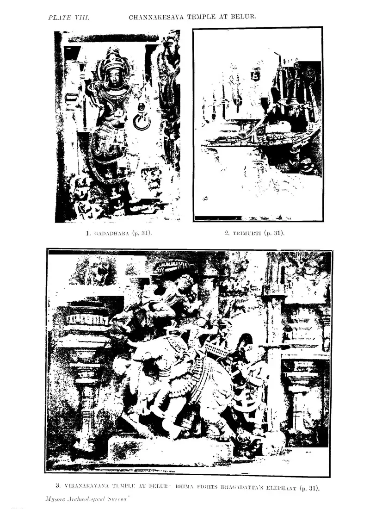
- GADADHARA (p. 31)
- TRIMURTI (p. 31)
- VIRANARAYANA TEMPLE AT BELUR. BHIMA FIGHTS BHAGADATTA'S ELEPHANT (p. 31)
Part II: Study of Monuments and Ancient Sites › Hariharapura › BelurKéśava Temple : Detailed Study of Sculptures
Introduction
The original temple constructed by Vishnuvardhana shows an elegance of taste in the combination of sculpture with architecture. While sculptural work gets its due attention, the architectural purpose of the whole building is not lost sight of. Ornamentation cannot be pointed out as overloaded except perhaps in the front basement and railing. But the same remark cannot apply to the additions made by Ballála. The sculptural work of his period is exceedingly fine and at the same time extremely elaborate and overloaded with details. The ornamental designer and sculptor were allowed to overlook the needs of architecture. The sculptures of the main temple can best be studied in groups under the following heads :—
I. Lower towers and platform. XIV. Row of larger bracket images.
II. Towers and groups supporting the doorways. XV. Row of smaller bracket images.
III. The three large niches of the garbhagriha. XVI. Top eaves with remains of the older parapet.
IV. Elephant frieze. XVII. The old vimâna tower.
V. Kirtimukha frieze and small niches behind the temple. XVIII. Lower turrets at the back of the temple.
VI. Scroll frieze with inset images. XIX. Row of kirtimukhas behind the temple.
VII. Beaded pendant frieze. XX. Large wall images.
VIII. Row of Yakshas with intervening tôraṇa images. XXI. Row of tôraṇas and turrets.
IX. Môhini frieze. XXII. The five doorways.
X. Basement eaves with surmounting small images. XXIII. Navaraṅga pillars.
XI. Row of turrets with intervening sculptural groups backed by double lions. XXIV. Râmâyaṇa frieze.
XII. Railings with sculptured panels. XXV. The central dome.
XIII. Pierced stone windows. XXVI. Other ceilings and beams.
XXVII. Sukhanâsi doorway.
XXVIII. Sukhanâsi and garbhagriha doorway.
XXIX. Garbhagriha.
XXX. Chennakêśava image.
Of these the notes on Nos. XIV, XXV and XXX are now published. From among the figures studied under XX, two rare and interesting images, namely, those of Gadâdhara and Trimûrti are illustrated (Plate VIII, 1 and 2). An interesting group from the wall of the Viranârâyaṇa temple showing Bhîma fighting Bhagadatta's elephant is also published (Plate VIII, 3). It shows how the Hoysala sculptors depicted movement by carving the same figure in two or three positions. In the group, Bhîma is siezed in the elephant's trunk and then thrown up into the air. Of the pillars studied under XXIII, the Narasimha pillar is well known. But another pillar which is no less beautiful is the Môhinî pillar on which a short note is published below with an illustration (Plate IX). Two groups from the scroll frieze studied under VI are reproduced and they are: hunters carrying an antelope (Plate XII, 1 a) and a yôgi, probably Jain (Plate XII, 1 b).
Row of Larger Bracket Images
General remarks. —Next to the three original images of Kêšava the finest human figures sculptured in the temple are the bracket images. Four of these adorn the great round pillars which support the navaraṅga dome and 38 others are placed just below the top eaves around the navaraṅga on the outside (Plates X and XI). They are all of soap-stone, each about 2½ feet high, and made on a uniform plan. They are popularly called “Madanakai” images, the word being probably the Tamil form of ‘Madanikâ’ or a lovely maid, and consist mostly of the images of beautiful young ladies either at toilet or at dance. They are full of rasa and bháva and fill the looker on with the beauty of a young woman’s life. They are finely proportioned and fully ornamented and show the loveliness of a well developed young woman’s body without making any exhibition of sensuality or nakedness. The poses, faces and hands are highly expressive, while the figures are given the most graceful positions for standing or dancing. No doubt they are not perfect nature studies but are slightly idealised forms as must be the case with all true imaginative art. Perhaps the figures are sometimes slightly too large round the breasts and hips but the ideals of the Hoysała days appear to have differed from the conception of a beautiful feminine form according to modern western standards. It is not the slim boyish maid, feeling shy about her sex and wishing that it would have been better if she had been a boy, that the Indian artist loved to contemplate. He represented a mature woman with her feminine body fully developed, happy with her sex, its beauty and its functions
It is remarkable that these sculptures and a large number of others in the friezes below illustrate damsels and poses of various kinds. A good number of suggestions could be collected from their study for the revival of South Indian dancing. The dances appear also to have some mythological significance. The male figures are those of drummers who keep time to the dancing ladies. A few of these are representations of Kâlî or Durgâ, while most of the figures appear to represent the dances of Môhinî. Since Kêšava who was previously inhabiting a part of the Bâbâbuđan Hills is stated in the local mythology to have incarnated as Môhinî to slay Bhasmâsura who was inhabiting the neighbourhood of Belur, it is highly probable that the majority of dancing female figures are those of the various phases of Môhinî’s dance rather than of secular dancers. Every one of them deserves detailed study. They are here described commencing from the south of the east doorway.
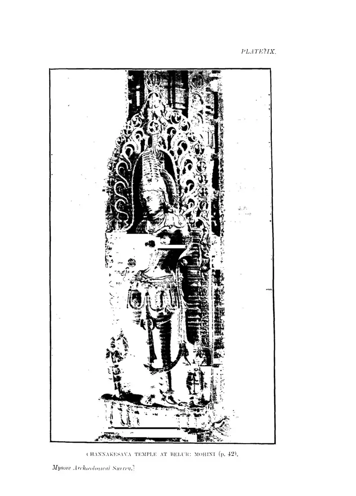
- PLATE?IX CHANNAKESAVA TEMPLE AT BELUR: MOHINI (p. 42)
Beauty and the Mirror ; The Pet Parrot
No heading in the body: this section starts at its printed page (33).
SECTION 1.
1. Beauty and the Mirror.
A young lady after completing her toilet and being fully adorned admires her own beauty as reflected in a mirror which she holds up in her left hand (Plate X, 2). Her right hand is slightly bent up with the palms upward and the fingers slightly parted expressing the lady's amazement at the perfection of her own beauty. The right hand forefinger is slightly bent up as if it had just painted vermilion on the forehead. She stands to front most gracefully in the tribhanga pose with her beautiful face turned slightly to the left to look into the mirror. Her face is round with well formed nose, lips and chin, large and long eyes, long, thin pencilled eye-brows and a broadish smooth forehead. Her hair falls in spirals above her forehead while on top is a diadem with beautiful pearl pendants. Her long hair is well twisted and done up into a large wheel-like knot behind her head which makes it look like a halo. In the lobes of her ears she wears large round earrings set perhaps with pearls. Round her neck is a golden necklace studded with precious stones, while on her breast fall gracefully two long pearl garlands. She wears also a rather heavy band passing below her right arm like the yajñôpavita and a thin jewelled band under her left arm. On her thighs she wears close fitting shorts secured by a muslin waist cloth the ends of which hang tastefully between her lower limbs. On her hips she wears a beautiful jewelled mêkhala or waist band, the tassels and hangings of which adorn her beautiful shape. On her upper limbs are armlets, bracelets and rings on each hand, while her feet are adorned with gingled hollow anklets and chains with pendants (rûlî and golasu). Her second toes have two rings each and the whole is a pleasing figure of a tastefully ornamented beautiful young woman. On each side of her stands a small figure of a woman attendant, each with one hand lifted up in admiration. To her right stands a little boy with a bunch of fruits in his right hand and a pet monkey on his left hip. Behind the group is a tôraṇa of exquisitely carved filigree work showing the curls and circles formed by a creeper. The whole group and, particularly, the feeling of the central figure is one of the finest expressions of šrîngâra rasa and this bracket image is perhaps one of the very best sculptures in the temple. The builders judged rightly when they gave it a place right above the main doorway where every devotee entering the temple could see it and admire.
2. The Pet Parrot.
A beautiful lady stands leisurely with her pet parrot perched on the back of her raised left hand and is teaching it to speak. Her broken right hand probably held a bunch of fruits, with which she feeds it and induces it to speak. She is looking at the bird affectionately and teaching, while the bird's slightly raised tail and wings show that it is making an effort to speak. The lady stands quite easy
5 with her weight poised on her right leg and her left leg crossed behind. To her right and left stand lady attendants with fruits and flowers and in the foreground is a boy with a mâtanga fruit in his left hand; and his right hand is raised up to call our attention to the bird. His head is also slightly raised in the attitude of looking at the bird. The sculptor has well succeeded in directing our attention to the speaking bird and the affectionate and admiring friends by whom he is surrounded. In other respects, such as ornamentation and setting in a latâ tóraṇa, this figure resembles No. 1.
Vasanta : Beauty and the Parrot ; Modesty and the Monkey
No heading in the body: this section starts at its printed page (34).
SECTION 2.
3. Vasanta.
A beautiful lady has finished her dinner and is standing waiting for her lover with betel leaves in her left hand and probably a syringe in her right. To her left, a man-servant is filling another syringe with vasanta or deep rose-coloured water. To her right, is another offering her a vessel for throwing larger quantities of the coloured water. She is in an active pose about to move to the left and is evidently just waiting for the appearance of her lover so that she might spirt with the syringe or the vessel the coloured water upon him. Sprinkling or spirting of the vasanta is significant with the Hindus of the expression of love and is generally resorted to on the occasions of marriage or the festival of Cupid known as the Hóli. The feeling of the piece is the active expression of the love of a lady who is about to meet her lover.
4. Beauty and the Parrot.
A beautiful lady stands easily at rest holding in her left hand betel leaves, while on her right forearm is climbing up her pet parrot. To her left is a woman attendant with a betel bag on her shoulder, while to her right, is another holding a fruit. The atmosphere is one of peace and affection and it is possible to imagine that the lady finds solace in the company of the parrot in the absence of her lover. Possibly the bird has repeated the affectionate words of the absent lover and the lady whose head is turned away from it is just looking on the situation. Her hair is done in a peculiar way which will be described in the case of the next figure.
The next pillar does not appear to have had any large bracket figure.
SECTION 3.
5. Modesty and the Monkey.
A beautiful lady is molested by an admiring monkey who has pulled her dress off her body and is looking up at her grinning in solicitation. The lady whose shorts are also displaced has crossed her legs in modesty. With her left hand, she grips firmly her breasts while in her right, she has lifted up a flowery tree branch with which she would strike the monkey. To her left, stands a lady
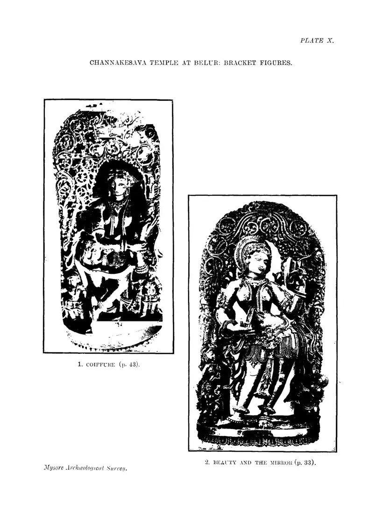
- COIFFURE (p. 43)
- BEAUTY AND THE MIRROR (p. 33)
attendant with flower and fruit. Her expressionless pose is out of place. The piece combines the spirit of modesty and beauty while the monkey's behaviour gives it a lively humour. On the pedestal is the signature of the sculptor. The hair of the lady is dressed in a long cylinder with a loop formed in the middle and ornamented with ketaki flowers.
6. Huntress.
Huntress ; Coiffure ; Drum Dance
No heading in the body: this section starts at its printed page (35).
An athletic young lady of high rank is out for some sport with her bow lifted up in her left hand and her right drawn back behind her ear. She shoots an arrow at two birds perched on a tree far above her on the top of the tòraña. To her left, stands a woman attendant holding by the leash in her left hand the lady's pet deer and handing her up arrows in her right. The pose is very original and exposes in its fullness the beauty of a well developed athletic woman's body: the head poised well back, the arms free, the fully developed round breasts, the lionian waist and the finely proportioned thighs and calves are all exposed. The sculptor with commendable imagination has worked the pose. It is quite possible that the figure after all represents a mere dancing pose and not a real hunt. The sculptor's name appears on the pedestal.
SECTION 4.
7. Coiffure.
A lady is dressing her long hair which she holds in her left hand, while with the right she is leading out for the oil which a lady attendant holds on the right. The latter has a cup of oil in her right hand and strings of flowers in her left. Another woman attendant on the left is holding up a mirror for the lady's use. The piece brings out the spirit of the toilet and shows how ladies are at great pains at dressing their hair. The bunch of curls at the end of the hair is also shown. After being done thus the hair was looped up behind the head into the form seen on image No. 5. This image was made by Dâsója of Baßligråme who has signed his name on the pedestal.
8. Drum Dance.
A lady is in a vigorous dancing pose with her arms lifted high near her head beating time with a curved stick on a ðavañe. The latter is exactly like ðamaruga but much larger and is very popular in temple music. Her arms, face and breast are facing us, while her supple waist is twisted so that she stands with her lower limbs facing to the right. Her weight is poised on her right leg while the left one is raised in active dance. The pose is one that is possible only for a practised athletic dancer and exhibits the strength and suppleness of a woman's delicate looking waist.
9. Durga.
Durgá ; Đavaṇe Dance ; The Flute Player ; Song ; Môhinî Dance
No heading in the body: this section starts at its printed page (36).
There is no attempt in this image at šryngdra rasa , for the subject is goddess Durgâ who is shown with only two hands. She wears a kirīṭa with a nimbus or halo behind the head, dangling loops ( tōlāku ) in the lobes of her ears and is, in other respects, dressed like any other lady. Her right hand holds forward a kapāla or a skull cap bowl and in her left is a skull-headed trident mace. That she is about to dance can be gathered from the fact that two men are actively drumming, one on each side of her. This piece is also the work of Dâsója.
SECTION 5.
10. Davane Dance.
A lady dancing while playing on a đavaṇe. She is facing and appears to be just commencing the dance. Her face wears a simile and on each side of her is a man drumming. This piece is the work of Mallanna whose name appears on the pedestal. The lower limbs in this and of number 17 are too short for the height.
11. The Flute Player.
A boy is dancing and playing on a flute. He is ornamented almost like a woman dancer and his hair also is similarly done up. Another man stands to his left playing on a flute, while to his right is a lady with cymbals in her hands, evidently singing. The boy's form is athletic and well proportioned and he is beating time with his raised left toe. Very probably, he is demonstrating the flute dance of Śri Krīshṇa.
SECTION 6.
12. Song.
A lady musician has begun her song. In each of her hands is held a cymbal and her left toes are just raised in the act of beating the time. She stands easy in graceful tribhaṅga with her weight resting on her right leg while her left is free to keep time. Her beautiful mouth is just open indicating dignified and restrained singing. Even her fine teeth are just seen and her face is full of the absorbed interest of a musician. To her left stands a man accompanying her on a flute, while to her right are three men drumming, two with mrīdaṅgas and one with đavaṇe. The spirit of the piece is one of absorbed interest in the divine art of music which appears to have held a place next only to dancing in Hoysaṭa art. The image is signed by its author.
13. Mohini Dance.
A lady finely dressed and ornamented is in the middle of a dance. Her right arm is raised above her head while the left is slightly bent with the palm turned upward near her waist. The left hand appears to indicate amazement and joy, while the right is perhaps the pose of Môhinî while dancing with Bhasmâsura.
The Viṇâ ; The Curls ; Lady Plucking Fruit
No heading in the body: this section starts at its printed page (37).
The body is gracefully bent at the waist and the weight is borne by the slightly bent right leg, while the left is bent at the knee and lifted up with the toes raised. The result is a graceful composition showing the spirit of the dance. To her right stands a lady with cymbals in her hands singing in accompaniment and to her left is a drummer drumming with the right hand; his left hand is raised and he is dancing too. On the finely chiselled latâ tôraṇa, the sculptor has indulged in a bit of nature study. To the left of the dancer's head is a fruit on which sits a fly; an inch away is a common house lizard with its tail bent and its body drawn up, sneaking and crouching to spring on the innocent fly. The creatures are all of life size and correctly carved and give us a realistic by-study in an atmosphere of idealism.
SECTION 7.
14. The Vina.
A lady holds a musical instrument in her left hand on which she has played a mode. She is now giving a dance. Her right hand is raised expressively, while her knees are slightly bent in a graceful exposition by dance of the mode she has played. To her right are two men drumming, one on the mridaṅga and the other on the ɗavaṇe, while to the left are two ladies singing in accompaniment, one of them keeping time with cymbals. The Rudra-viṇâ was the original viṇâ of all India before the heavier “ Sarasvatî ” viṇâ, which is to-day in use, was invented. The former was light, having only two gourds attached to a bamboo stick and could be weilded by the hand even of a dancer. The sculpture illustrates the combination of instrumental as well as vocal music in a dance of the Hoysala days.
15. The Curls.
The subject of the piece is very similar to No. 1. A lady is looking into a mirror; but, instead of being fully satisfied with her coiffure, she is just smoothening the hair on her forehead and adjusting the ringlets. She stands cross-legged and her balance does not appear to be correctly placed by the sculptor. The body is too inclined to the right to be stable but the figure is quite graceful and full of expression. To her right and left are two lady attendants offering her garlands, flowers and toilet articles.
SECTION 8.
16. Lady Plucking Fruit.
A handsome lady stands facing, plucking a mango fruit from a tree with her right hand. Her left hand, which had been raised, is now broken at the elbow; even her attendants are now lost, only a pair of feet on each side remaining. They were probably women attendants standing, looking up and offering her fruits. It is probable that a parrot perched on the lady's left hand, to feed which she is plucking a fruit. The figure is very beautiful and finely proportioned; it is a pity that it is broken. The piece is the work of Rûvâri Vibhaṇṇa (?).
17. The Huntress.
Part II: Study of Monuments and Ancient Sites › HariharapuraThe Huntress ; The Drummer ; The Dance ; Lady Singing ; Lady Dancing ;
Durgâ Dancing ; A Huntress in Triumph
No heading in the body: this section starts at its printed page (38).
This piece is very similar to No. 6 with slight differences. The face, the breast and the figure generally are more to the front and the lady wears a short petticoat of leaves instead of shorts.
The next pillar does not appear to have had a large bracket figure.
SECTION 9.
18. The Drummer.
A man is dancing and drumming on a ɗavane, while two men accompany him on the mridaṅga. The man's beard is trim and short and his moustaches twirled up. He wears a cap on his head and ornaments like those of a lady on his body. Even his hair is dressed like that of the huntress. This is one of the three male figures among the bracket images.
North side—commencing from the North-west.
SECTION 25.
19. The Dance.
The subject is very similar to that of No. 13. A lady is in the middle of a vigorous graceful dance. On each side of her is a drummer keeping time, one with the mridaṅga and another with the ɗavane. The lady's body is finely formed and proportioned.
SECTION 26.
20. Lady Singing.
The subject is similar to No. 12. A lady stands to front with a cymbal in each hand, evidently singing. This is one of the very few images inserted in the inward corners.
21. Lady Dancing.
Keeping time with the left toes, she has started abhinaya with her left hand in the svargahasta pose; her right hand is broken. She is accompanied by two drummers as usual.
22. Durga Dancing.
The goddess who wears a diadem of skulls is dancing with a skull-headed trident-mace in her left hand; the right hand is broken. The subject is similar to No. 9. As usual, she is marking time with her left toes.
SECTION 27.
23. A Huntress in Triumph.
A lady wearing a skirt of leaves and holding an ornamented bow in her left hand is dancing in joy to celebrate her success in hunting. Her right hand holds
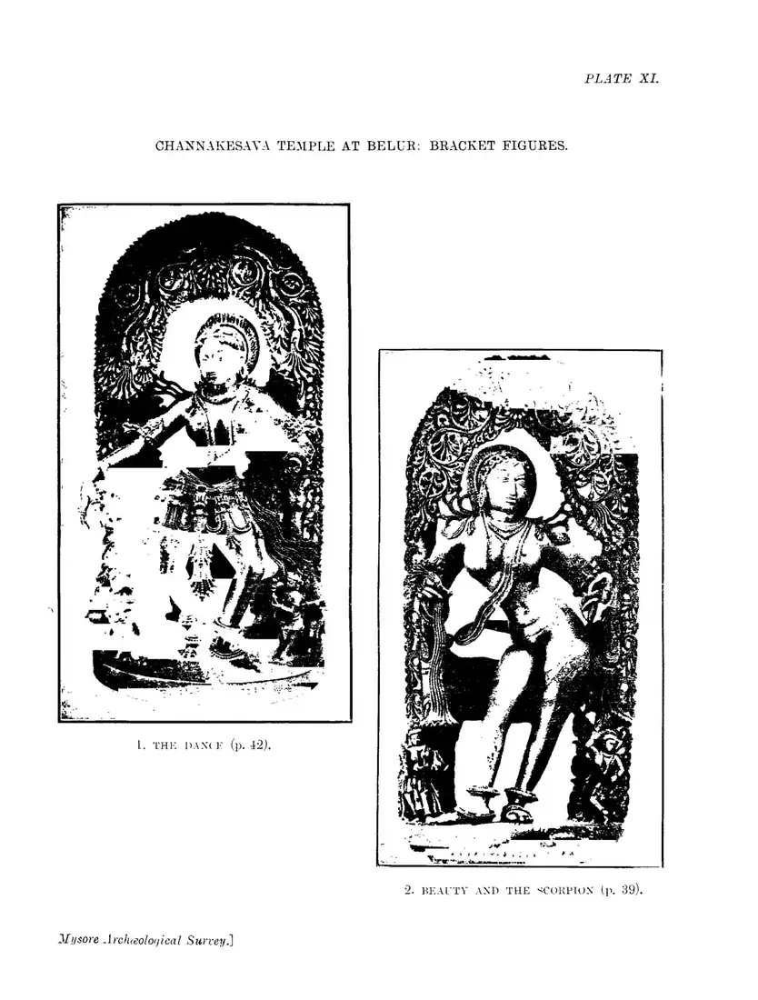
- THE DANCE (p. 42)
- BEAUTY AND THE SCORPION (p. 39)
an arrow partly broken, while her knees are slightly bent and her left toes raised. To her left, stands a lady companion on whose right shoulder is slung a bow; from the latter the game, an antelope, is hanging. On her right is another lady companion resting on a bow and allowing a man-servant to remove a thorn from her left foot. Figure No. 6 shows the lady shooting birds. Here she is returning with her bag dancing with joy. This may be interpreted as Pārvati hunting.
24. Davane Dance.
Part II: Study of Monuments and Ancient Sites › HariharapuraĐavaṇe Dance ; Môhinî Dance ; Beauty and the Scorpion ; Abhinaya
(Gesture)
No heading in the body: this section starts at its printed page (39).
A lady is dancing while playing on a đavane drum (which is lost with her left hand). She is accompanied by two drummers with mrīdangas. A fine figure.
SECTION 28.
25. Mohini Dance.
The subject is similar to No. 13 but the figure is finely shaped and proportioned. The details are delicately carved and the whole is an extraordinary beautiful piece. The pose is graceful and attractive and the hands fully expressive. She is accompanied by a drummer with mrīdanga, a man with cymbals and another with a flute. The đavane man is missing.
For elegance and delicacy of carving this is one of the best bracket figures.
26. Beauty and the Scorpion.
A lady, while dressing, feels that a scorpion is inside her garment and in her attempt to throw it out has untied her sari , a part of which she holds in her right hand (Plate XI, 2). The rest of it passes round her left thigh and is flying in a tassel behind her. In her left hand, she holds a string of flowers now broken and the scorpion is lying still on the pedestal. A lady attendant, on the right, holds padma and phala; while the right hand of the one on the left, which was perhaps offering flowers, is broken. The sculptor has imagined the episode of the scorpion to get a chance of showing the full beauty of the feminine form, the broad bust with the fully developed breasts, the small waist, the low belly, the large and well rounded hips curving out from the waist, the smooth thighs and tapering lower limbs, which are all successfully shown. The Hindu ideal of a woman's form is clearly illustrated here. The idea of the scorpion is novel.
SECTION 29.
27. Abhinaya (Gesture).
A lady is giving an exhibition of the art of gesture. She stands facing, with her forearms lifted up expressing some emotion with the hands, the right palm turned upward and the left inward. It is not possible to interpret the sentiment since the fingers are all lost. To her left is a junior lady artiste following the sentiment with her own hand and at the same time dancing. She is definitely singing, which possibly the major artiste also does. This is the work of the sculptor Chakanna.
28. Sarada.
A handsome lady stands with a book in her left hand—the right being in the chinnudrâ (?—thumb and fore-finger broken) or the attitude of exposition. She is reading from the book and explaining something. A lady with châmara and phala stands on either side. Since the figure has only two arms, she is possibly Môhini playing the part of Śâradâ.
29. The Fan Dance.
A lady has just started on a dance with a lâvançha fan in the right hand and betel leaves in the left. Her left toes are raised to mark time, while a boy plays on a flute to the right and a lady with cymbals is singing on the left in accompaniment. The fan dance appears also on a number of smaller sculptures in the lower rows.
SECTION 30.
30. The Nagavina Dance.
A lady is dancing while playing on a rod-like musical instrument. She is marking time, as usual, with the left toes, while a man is drumming to her right on the mrïdanga and another is fanning her and holding ready for her use, a cup full of drink. The instrument whose life size would be a length of about 2½ or 3 feet has a number of teeth on its lower end which emit different sounds when struck with a special stick. The former is probably of metal. Its head which is curved up is shaped like that of a parrot with the hood of a cobra. Both the rod and stick are ornamented with tassels. Perhaps a hollow tapering bronze rod would emit different sounds and serve the purpose of a musical instrument. It is surprising that this instrument which is seen on several sculptures in Belur has entirely disappeared from the Mysore State.
31. The Toilet.
A lady standing to front is holding a small club-shaped ring over her left shoulder perhaps considering for what use she should put it. On her right is a lady attendant offering a mirror and on her left, another offering a string of flowers. It is possible also that the ring has some significance since the face appears to be thoughtful. The hand with its separated fingers is shown in all its beauty. The sculptor is Mayanna.
SECTION 31.
32. The Flute Dance.
A beautiful lady is in the favourite pose of Krïshna's flute dance. She is pretending to play on a flute without having it actually in her hand. Her face and body are three-quarters to the front, while her fingers are active as if playing on the flute. A monkey is admiring her from the right while an attendant on the left is offering her a flute. A very attractive pose. The sculptor is Mallianna.
33. The Damaruga Dance.
Part II: Study of Monuments and Ancient Sites › HariharapuraŚáradâ : The Fan Dance ; The Nágaviṇâ Dance ; The Toilet ; The Flute Dance ;
The Đamaruga Dance ; Beauty and the Monkey ; Beauty and the Toe Ring ;
The Drummer ; The Song ; The Dance
No heading in the body: this section starts at its printed page (41).
A lady is dancing with a small damaruga drum in her left hand and a chitțe tâla in her right, two drummers accompanying her on the mridanga. The pose is active and lifelike. The author is Mallanna.
34. Beauty and the Monkey.
The subject is similar to No. 5, but the lady is not seriously undressed nor is her pose specially indicative of modesty. She is attempting to drive away with a tree-branch the monkey which has caught hold of the end of her garments. The attendant on the left holds a phala and padma and is expressionless. Though the sculptor is an expert with his form and chisel, the figure cannot count with No. 5 in artistic taste.
SECTION 32.
35. Beauty and the Toe Ring.
A handsome lady is standing on the right leg and getting a ring put on her left toe by a woman attendant. To balance herself, she is holding by the left hand a creeper branch hanging down from the tôrana. On her left, is a lady with châmara showing that the chief figure is a princely personage. The group is finely conceived and successfully executed; it shows the graceful pose of a lady trying to balance herself on one leg.
36. The Drummer.
A bearded man is dancing while playing on the ɗavaṇe. He is in an active drumming pose but his right forearm is broken.
SECTION 33.
37. The Song.
The subject is similar to No. 12. A beautiful musician is giving a song keeping time with cymbals in her hands. Her mouth is slightly open showing a little of her teeth. She wears a lovely smile and we feel as if we hear her song. She is accompanied by two drummers, one with mridanga and the other with ɗavaṇe, a man with flute and a junior songstress with cymbals. This is one of the best pieces among the bracket figures.
38. The Dance.
A fine piece showing a lady dancing, keeping time with her slightly raised left foot. To her right are the usual two men with mridanga and ɗavaṇe; to her left,
6 two others, one with flute and the other with cymbals. The dancing figure is finely and gracefully posed. (Plate XI, 1.)
Navaranga Pillars : Môhinî Pillar
No heading in the body: this section starts at its printed page (42).
The excellence of the filigree work on the tôraṇa of this piece can be seen in the finely carved bunches of flower buds springing from the tôraṇa. Another bit of nature study is indulged in by the sculptor who has shown a bee sucking honey from the flower: the wings, legs, and proboscis can be well distinguished. The piece is the work of Nâgôja of Gadag.
The Central Dome : General
No heading in the body: this section starts at its printed page (42).
XXIII. NAVARAŃGA PILLARS.
Mohini Pillar (Plate IX).
The sixth pillar in the middle square near the sukhanâsi doorway is one of the finest in the hall. Its square, wheel-shaped, bell-shaped, pot-shaped and double umbrella-shaped mouldings are all cut vertically on a 16 pointed star plan, each of these points having three sub-points. Its umbrella top which takes the place of the capital has a grand design. Over the length of the pillar at each cardinal point runs a narrow band of filigree work, 7 feet long and 4" broad, each with a creeper scroll and figures inset in the convolutions. Against the eastern face is a large fine standing image of Vishnu as Môhini with a châmara-dhâriṇi to the right and an adoring Garuḍa to the left. Though the hands are broken, the left one very probably held the amṛita kalaṣa and the right one the ladle. The figure is fully developed, tall, slim, well proportioned and beautiful and stands in a graceful easy tribhaṅga pose which has no exaggeration in it. The figure wears a kiriṭa, nimbus, makara-kuṇḍalas, lion-headed armlets, necklaces, yajñôpavîta, kânchî, mêkhalâ with pendants and tassels, mâlâ, anklets (rûli and golasu) and toe rings but no nose rings. Above it, are a makara tôraṇa and a latâ tôraṇa. In the band above are Bramha, Vishnu and Śiva seated one above the other. On the south-east bands, above numerous Yakshas, are the ten avatâras of Vishnu. The south and north bands are not the least interesting since they contain carvings of griffons, lion-bodied and with heads of various shapes like bearded man, lion, snake, eagle, peacock, deer, goat, ram, parrot, monkey, dog, bull, elephant, boar, horse and śarabha. The occurrence of the sphynx form is highly interesting. The other bands have only floral designs. Around the base of the pillar are eight niches with vimânas, each having a different form of Vishnu.
XXV. THE CENTRAL DOME.
General. —One of the grandest pieces of work in the whole temple is the central square of the navaraṅga. It is 19'3" square and has at the bottom a raised low platform in the middle of which is a round stone elevation known as the chandraśila or moonstone, about 5" high. The slabs here are all so perfectly smooth that they appear to have been meant for reflecting day-light into the dome so that its beauties might be better admired. Above each of its pillars is a bracket figure of stone facing the centre of the square. In size and general plan these figures are very similar to the bracket images adoring the outside walls of the temple, but in conception, execution and feeling they are vastly superior. It looks as if the best four of the whole set of bracket images were placed in the navaraṅga, while the rest of them were put up outside it. A brief note on each of these figures is attempted here, commencing from the south-east figure, in pradakshiṇa order (clockwise).
1. Beauty and the Parrot. —A beautiful lady of high rank stands in front with a pet parrot perched on her left elbow. It is perhaps hungry and has caught in its beak a jewelled necklace worn by the lady. She appears to be cajoling it to give up the necklace by offering it a bunch of fruits hanging from a tree branch which she holds in her right hand. On her head, she wears a peculiar ornament, from the three hooks of which, probably, hung three rings which are now lost. The bracelet on her right arm is completely separated from the body so that it can be moved up and down to the length of an inch or made to revolve round the fine arm. On each side of her stands a chauri-bearing lady, while on the latâ tôraṇa over her head the sculptor has shown a peacock seated and a monkey eating a fruit. The sculptor has engraved his name on the pedestal.
2. The Dance. —As the bracket image in front of the temple, No. 38, this figure shows a lady in a fine dancing pose with the palms of her hands turned upward on her head. Attached to the small bar of a diadem is a tiny ring which also can be freely moved. It is a pity that the corner end of the toe ring is broken, as also the fingers of the image. To her right is a man with drum while to her left are two musicians keeping time with cymbals and with the bare hands. The tôraṇa is very delicately carved with a number of birds and monkeys in their natural poses among leaves.
3. Goddess Dancing. —A goddess with two hands only, fully ornamented with a tall crown and nimbus, is dancing with her left toes raised. The lion-faced armlets and the armour-like ribbed bracelets are interesting. She is supported by two men drumming to the right, and to her left, a flute player and a musician with cymbals. The latâ tôraṇa above has an interesting design with the main stem running round the centre, forming a serpentine arch. The image is not signed.
4. Coiffure. —A handsome lady standing easily to front with her legs crossed is twisting her long hair into a cylindrical (Plate X, 1) shape. An attempt is made to mark the individual hairs passing transversely and the curls at the ends hanging in a bunch are also well shown. The lady's upper cloth which is ornamented with a lotus pattern hangs loosely about her, while a lady attendant to her left offers her strings of flowers. The right hand of a similar attendant to the right is broken.
On the tóraṇa in the convolutions of the creepers are shown monkeys and parrots in their natural poses and along with these appear two Garuđas or Ghandharvas. Two monkeys in affectionate conversation are perched near the top. The work is from the hands of the sculptor “Dàsója of Balligrâma.”
Part II: Study of Monuments and Ancient Sites › Hariharapura › The Đamaruga Dance ; Beauty and the Monkey ; Beauty and the Toe Ring ;Bracket Images : Beauty and the Parrot ; The Dance ; Goddess Dancing ; Coiffure
Navaranga—Central Dome
(PLATE I, FRONTISPIECE.)
Angle Stones. —Before commencing the description of the dome, we may just note that the angle stones in each of the four corners immediately above the brackets have each a sculptural group. Beginning from south-east they are in order :
1. Vishnu seated in sukhásana as Mádhava.
2. Floral work with two makaras.
3. Anantapadmanábha with Lakshmi massaging his feet. A fine group.
4. Vishnu with eight arms as Góvardhanadhâri, with heads of cows to his right and left.
The ceiling above can be studied in 17 friezes of varying sculptural and mythological significance.
FRIEZE 1 : —Panel 1. (East). A large group of dancers and musicians.
Panel 2. (South-east). A king and queen are seated in state watching a dancing performance of two men with accompaniments.
Panel 3. (South). A group of musicians and dancers among whom are men and women and also Yakshas.
Panel 4. (South-west). A king and queen are seated in court watching a wrestling match ; very interesting.
Panel 5. (West). A number of men dancing with accompaniments ; two of them hold sticks in their hands and are in some kind of kóláta dance.
Panel 6. (North-west). Dancers with accompaniments.
Panel 7. (North). Dancers with accompaniments.
Panel 8. (North-east). Bhágavata episodes :—
(a) Krìshṇa is threatened with a stick by his mother for stealing butter.
(b) Balarâma with gada, halá, pása and phala.
(c) Šakaṭásura vadha : Krìshṇa breaking a cart.
(d) Pútani suckling Krìshṇa.
(e) Krìshṇa and milkpot.
(f) Krìshṇa meeting Dhênukásura (? Donkey form).
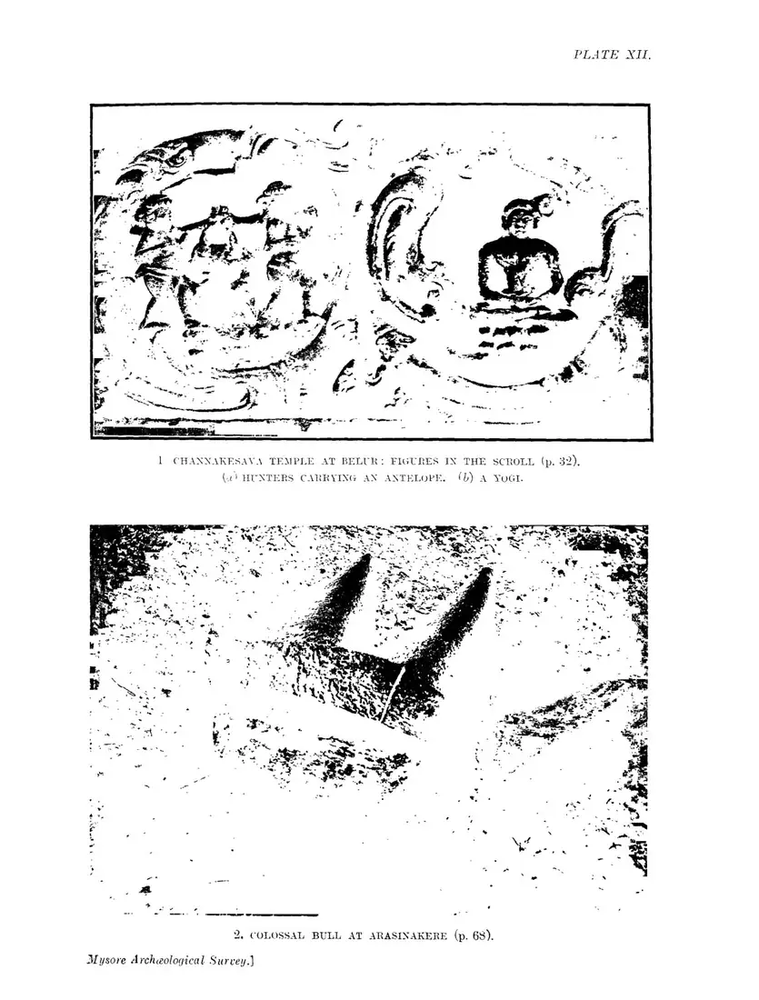
- 1 CHANNAKESAVA TEMPLE AT BELUR: FIGURES IN THE SCROLL (p. 32)
- COLOSSAL BULL AT ARASINAKERE (p. 68)
FRIEZE 2 :— Beaded pendants and hangings.
FRIEZE 3 :— Group (1) (East)—Tàndavésvara with accompaniments.
(2) Lady dancing with chiṭte tâla and accompaniments.
(3) Ganèsa dancing. An interesting pose.
(4, 5 and 6) Musicians.
(7) Man dancing with companions, perhaps Krishṇa since he holds a flute in his left hand.
(8) Drummers.
(9) Karṇa and Arjuna mounted on chariots fighting—Fine.
(10) Dhṛitaráshṭra seated. He is bearded and wears a crown.
(11) Duśśāsana—an ugly, curly haired figure holding up a mace stands near him with Duryôdhana and Karṇa.
(12) Karṇa drags Bhíma whose head is caught between the bow and its string. Arjuna hurries forth to defend his brother.
(13) Bhíma fights with Bhagadatta and his Elephant.
(14) Bhíshma on his śarāsana, with Arjuna shooting up with his left hand to provide him with water.
(15) Duryôdhana and his friends try to tie up Krishṇa with a rope (Udyôga Parva).
(16) A seated king is approached by three men who bring three elephants (to be identified).
FRIEZE 4 :— Dancers and drummers : each set stands between two rearing lions.
FRIEZE 5 .— Creeper scroll work with large nail heads of stone imitating revetments.
FRIEZE 6 :— Row of Gandharvas flying forward with garlands and flowers in their hands : groups of three, each consisting of a dancer with accompaniments.
FRIEZE 7 :— Floral scroll with revetted nail heads.
FRIEZE 8 :— Vishṇu seated in padmāsana in different forms of which 36 are worked wholly or partly and a few are unworked. Directly on the west is a kneeling Garuḍa.
FRIEZE 9 :— Dancers and drummers and ladies between rearing lions.
FRIEZE 10 :— Creeper scroll with revetments.
FRIEZE 11 :— Gandharvas flying, partly worked.
Above this is a recess running all round, about 6" in depth. The portion above it is comparatively flat and composed of two slabs only running nearly east to west.
FRIEZE 12 :— Gandharvas flying.
FRIEZE 13 :— Floral friezes with revetments. Next, inside it is a blank space partly worked from the centre and which hangs a lotus nearly 3 feet long. It has two tiers one above the other. the upper tier has eight figures consisting of dancers and musicians accompanied; the lower one also is very similar to the upper one.
FRIEZE 14 :— Scroll frieze with inset Yakshas.
FRIEZE 15 :— On the lower face of the lotus facing the ground with head to the east is Ugranarasimha with 10 hands.
Central Image of Késáva
The main image of Kêšava named by Vishnuvardhana as Vijayanârâyaṇa is one of the grandest images of Hoysala workmanship. On a pedestal, about 3 feet high, stands the colossal image which is about 1½ feet high to the top of the tôraṇa from the ground. The main image without the kirîṭa is about 7 feet tall. It holds in its four hands the usual symbols—padma, šañkha, chakra and gadâ, each one of which is finely worked. The image is perfectly proportionate and ideally made in accordance with the Hindu canon. Its limbs are large and well rounded and there is no attempt to show muscles or veins. The face is one of impressive grandeur and beauty and perhaps slightly more feminine in its look than the image of Kappechennigarâya. This is due to the less prominent jaws which make it a comlier figure. The image wears all the traditional ornaments including a finely decorated mani-makuṭa or jewelled crown, makarakuṇdalas in the ears, jewel-faced armlets, bracelets, finger rings, necklaces and garlands of varying lengths, a jewelled girdle, anklets and toe rings. It has no Lakshmî carved on its chest. The god is supported on the right by Bhûdêvî with pâśa and phala and on the left by Śrîdêvî with phala and padma. These have a châmara bearer each on the outside. Above them is the pilaster supporting the tôraṇas. These latter have four different friezes—makara tôraṇa, a latâ tôraṇa and two rows of images. In the convolutions of the latâ tôraṇa are the ten avatâras of Vishnu. The next circle is formed by his 1½ mûrtis seated, each holding the symbols in the traditional order. Near the edge are the eight Dikpâlakas. This tôraṇa is one of the most elaborate even in Hoysala sculpture. On the pedestal is a kneeling Garuṣa with his hands folded in front. Just below the main image is the inscription of Vishnuvardhana commemorating its consecration.
Part II: Study of Monuments and Ancient SitesHalebtd
Pushpagiri and Hulikere
Pushpagiri is a hill two miles south of Haĵebid and about 300' high. At the foot is a round pillared pavilion with two inscriptions on the lower mouldings of the pillars, of perhaps the Hoysala times. An easy flight of steps leads up to the top of the
Pushpagiri
Mallikárjuna Temple; Děví Temple
hill where, facing the east, is a temple of Mallikârjuna. It appears to have been a very fine Hoysala temple for Vishnu which was rebuilt during the Vijayanagar period, with the old materials in the Dravidian fashion.
In front of the temple is a 'uyyâle-tôraṇa' of plain granite jambs about 20' high. About 30' to its west is a mahâdvâra (12' × 6') with a granite doorframe. An inscription by its side gives the date šaka 1492. There is no gópura for the temple. The verandahs on both sides have fine Hoysala soap-stone pillars, round and star-shaped, with turrets on the outer side. The main temple has now a garbhagriha, a pradakshiṇa with a sacred chamber behind it, a sukhanâsi, a navaraṅga with an additional—now vacant—cell towards the south and another larger navaraṅga (45' × 30') of six pillars.
The garbhagriha has a roughly shaped natural stone, about 2 c.ft. in size, which is worshipped as Mallikârjuna linga. The doorway of the garbhagriha is small and of soap-stone without ornamentation. It was probably the original door before the temple was later extended. Round the garbhagriha runs a pradakshiṇa.
The sukhanâsi doorway also is plainish. But the inner navaraṅga has four round pillars supporting nine ceilings of fine workmanship. Most of the ceilings definitely belonged to another temple which was larger. They are fine pieces, some being dome-shaped and others flat. The flat ones generally have rosettes or large padmas among which is a fine large padma of 1,000 petals. The east central ceiling which is also flat has Gópâla in the centre with the Dikpâlakas around. Two other flat ceilings have Tândavêsvara.
The doorway leading to the inner navaraṅga is a fine piece of Hoysala work with Gaja-Lakshmí on the lintel and Rati and Manmatha on the jambs as in the Belur temple. It is definitely of a Vishnu temple.
The outer navaraṅga is supported, as already stated, by six pillars, about 10' high, four of which are round and two star-shaped. There are two doorways which evidently belonged to a Vaishṇava temple. The main one is guarded by two-handed dvârapâlas holding chakra and šankha; but the dvârapâlas on the north doorway, who have also two hands, hold gadâ and padma.
There is a small porch in front near which is an inscription of Sadâsiva Râya, dated Šaka 1470. The right pillar of the front mahâdvâra has an inscription of Lakumâdêvi, wife of Narasiniha. It is dated Sarvajitu samvatsara (1167 or 1287 A. D. ?). Narasiniha had built the original temple which fell into ruins by the time of Sadâsiva Râya.
To the north of the main temple is the Dêvi temple which is also similarly rebuilt of heterogeneous material. It has an image of Pârvati, of the Hoysala times, holding a padma in her right hand, while her left hand hangs down.
Devi Temple.
Vtrabhadra Temple ; Hulikere Pond ; Bhairava Temple
No heading in the body: this section starts at its printed page (48).
The most interesting feature in the plan of the temple is that behind the garbhagriha, to the west of the pradakshiṇa, is a secret chamber (30' × 8') below which is a cellar, 5' high, supported by stone pillars.
The temple, though mutilated and rebuilt, has many interesting features. It is the holy place for a large community of worshippers among whom 'Puppayya' or Pushpagiri Mallikārjuna is the famous and popular god.
The north kaisāla or verandah has two inscriptions on the lower mouldings of the pillars. Some of the outer walls of the main temple and the round dipa-stambha have also inscriptions.
To the south-east of the temple and on a hillock is a recent temple of Virabhadra built during the Nāyak days. Its front doorway Virabhadra Temple. has on each side a fine Hoysala pillar ornamented with floral designs. Evidently these pillars belong to some old temple. They are similar to the 'chauri-bearer' pillar at Belur, having vertical bands of scroll work.
Behind this temple is a pond (about 80' × 80') with its steps built of rough stones. Probably it belongs to the Pāllegār period.
Hulikere is a village to the south-east of Halebtid. It has a beautiful Hoysala pond, about 100' × 80', with twelve small towers, each about 12' high, built inside it (Plate XIII, 1). The steps, though now damaged, are finely built of stone. Each tower is like one of the car-like niches of Belur and raised on a platform, about 3' high, having friezes of elephants, horsemen, scroll work, hamsas and makaras. Each tower has a stone vimâna and a stone śikhara in the Hoysala style. Some of the towers have now lost their śikharas and the step stones are falling into ruin. It is a beautiful pond which is going into decay. Behind the row of towers is a row of niches, without śikharas, built into the wall of the pond. There appear to have been originally 27 such shrines in all (Plate XIII, 2). Probably they were meant for the 27 nakshatras or constellations. The images are all missing now. The monument is beautiful and unique.
An inscription which was here is at present near the north entrance to the village. The lower part of a broken inscription mentions the name of Hoysala Narasimha. Near the south gate of the village there are three more inscriptions, one of them bearing the date Śaka 1191.
The pond deserves immediate attention. A sum of Rs. 500 was collected about 22 years ago from the villagers for its renovation and deposited with the Government; now this sum has accumulated to Rs. 1,000. The villagers are willing to contribute further, if Government will also help.
To the north-west of the village is a hill, about 200' high, with a Bhairava Bhairava Temple. temple on top. It has a tower which is exactly like a
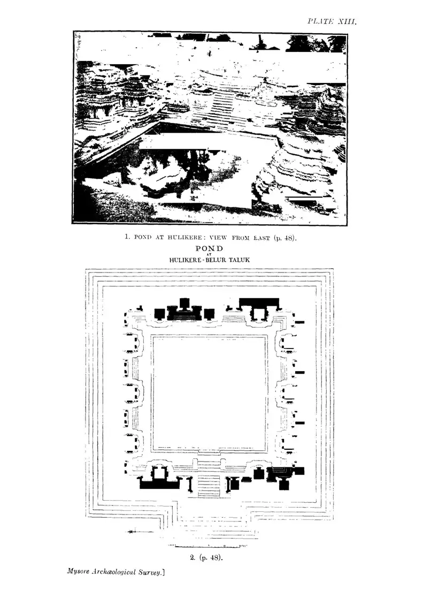
- POND AT HULIKERE: VIEW FROM EAST (p. 48)
- (p. 48)
stepped pyramid. The temple is very probably of about the time of Vishnuvardhana Ballála.
Part II: Study of Monuments and Ancient Sites › HalebtdKubaťtr
Kaitabhésvara Temple
Situation ; General Description ; History ; Western Part—Basement ; Western Part—Wall ; Eaves
No heading in the body: this section starts at its printed page (49).
About six miles north of Shiralkoppa is Ānavaṭṭi said to have been the elephant stables of Chandrahāsa whose capital was Kubatūr or Kuñtalanagara which is half a mile to the north. On a rising ground to the east of the present village of Kubatūr is the temple of Kaiṭabhēsvara which is very probably a double of the original Madhukēsvara temple built by the Hoysalas. (Plate XVIII, 1.)
The temple is one of the very early Hoysala type and has a garbhagriha without pradakshiṇâ, a sukhanāsi and an open indented square-shaped mukhamaṇtapa. (Plate XIX.) The back part of the building has a large stone tower. The building is typically Châlukyan and perhaps belongs to about 1100 A. D.
The temple is referred to as that of Kōttīsvara in an inscription of Vinayâditya Hoysala who was governing the Banavāsi 12000 under the Châlukyas. Thus it belongs to the Châlukya period. The entire absence of the Hoysala crest from the temple and its sculptures and its date and its close resemblance to Châlukya temples in plan, pillars, shape of the tower, etc., and all other main features suggest that it is a Châlukyan temple without any definitely Hoysala features. A comparison of it with the Belur temple shows how closely Vishnuvardhana followed the Châlukyan style and what improvements he made upon it. The temple is claimed to have been repaired and provided with a golden kalaša in about 1180 A. D. This perhaps does not mean any serious interference with the main features of the temple.
Whether there is a platform below the temple is uncertain, since the whole ground is covered with earth and only excavation can reveal it. The western basement has the usual 5 cornices, the 4th from the bottom having a number of cross-shaped mouldings. These were meant to be sculptured in detail; but the work was not completed.
The western wall does not contain any figure sculptures, but is over-ornamented with full length pilasters and half-length pilasters surmounted by fine towers. The outer wall of the garbhagriha which is square in plan with indented corners has towered niches on the south, west and north.
The eaves of the western part are about 15 inches broad and have a very low Eaves. “S” shaped curve.
7
Tower ; Maňtapa—Basement and Railings ; Inside Description of Maňtapa ; Pillars ; Ceilings
Eaves; Parapet; Sukhanási; Garbhagríha; Other Buildings
No heading in the body: this section starts at its printed page (50).
The tower or vimâna is a structure of stone with four tiers of turrets converging towards the şikhara and a projection on the east face towards the sukhanâsi. The old stone kalaşa has been replaced by one of mortar and metal, while stucco images of the Nandi bull have been placed here and there over the stone structure.
The images in the tower are: Mahishâsuramardinî, Bhirava, Mahêsvara in yôgâsana with 3 heads (out of five) and 10 hands. This last figure resembles closely that Tândavêsvara on the west face of the south niche at Belur.
The basement of the manţapa has a row of flowers at the bottom and above it the usual one of pilasters surmounted by curvilinear, stepped, pyramid-shaped towers with tapering frontal bands and stone kalaşa. Between these are flowers and lion faces with dangling scrolls. Above these towers is the slanting railing decorated with double pilasters of the round type with flowers in between. On the edge is a running scroll with varied little sculptures in the convolutions. The basement, though comparatively simple, has a pleasing effect. There are five passages through the railings into the manţapa, three regular ones on the south, east and north and two others at the western end of the manţapa now closed with an earthen wall. The 1st and 3rd have each a projecting base on either side evidently meant for elephants, now absent.
The manţapa which is large and high with broad central aisles is open on all sides except on the west. Here an earthen wall has been put up forming the western part of the manţapa into a small navaranga. At the western end of this part there are the usual four towered niches with a smaller additional niche of the Hoysala type against the north wall. The original images of these niches have disappeared. Those now standing in them are: 1. Saptamâtrikâs, 2. Ganêsa, 3. Mahishâsuramardinî (missing, fragments are kept outside the north-east corner of the manţapa), 4. Vishnu as Nârâyana, and 5. Sûrya (also missing).
All the pillars of the manţapa which are about 11 feet high are of the round lathe-turned polished kind. Though they have now beaded ornamentation, their height and finish give them a beautiful appearance. Among the shorter pillars on the benches are a number of pillars with deep 16 sided flutings. On these sides are stone benches edged by railings with rounded tops.
All the ceilings of the manţapa, except the central one, are flat and ornamented with lotuses. The central ceiling, however, has a dome beautifully designed and executed, though the whitewash has to some extent concealed its beauty. Above the
Ceilings.
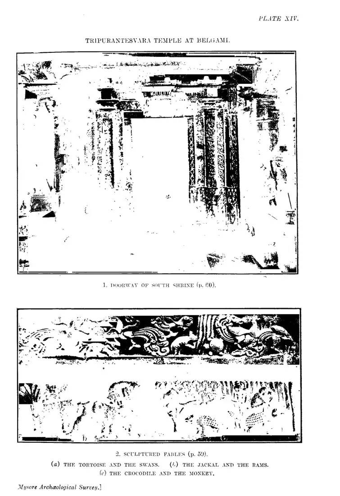
- DOORWAY OF SOUTH SHRINE (p. 60)
- SCULPTURED FABLES (p. 59)
beams the corner stones form a ring adorned on the undersurface with dancers surrounded by creeper scrolls, while on the inner surfaces are the eight Dikpálakas. Above this circle rise four others two of which contain rows of yógis or siddhas. The central pendant has three rows of petals with a band which has been recently broken. This ceiling is the finest piece in the whole temple.
The eaves of the manṭapa which project about four feet from the beams are typically Hoysalā. Their underface is decorated with beams and rafters in imitation of wood, and ornamentation of varied flowers.
Eaves.
The stone parapet which runs above the manṭapa all round is decorated with a row of kirtimukhas bearing the figures of various gods, among whom the following may be mentioned, commencing from the east and running clockwise :
Parapet.
Tāṇdavēsvara, Yakshas, Tāṇdava-Gaṇapati, the Dikpálakas, Bhairava, Harihara, Brahma, Pārvatī.
North parapet : Ugranarasimha, Varāha, Garuḍa, Kēšava, Kumāra with spear and shield, dancing Durgâ, Umāmahēsvara, Sūrya, Mahishâsuramardinti.
The sukhanâsi doorway which has Gajalakshmî on the lintel with 5 towers and other whitewashed sculptures above the cornice, is flanked on either side of the jambs by perforated screens with simple floral designs. The sukhanâsi which is large and high, as at Belur, has a multi-petalled lotus with about 400 petals, on its ceiling.
Sukhanasi.
The garbhagriha doorway is also a typical Hoysalā piece adorned with scrolls and pilasters on the jambs and Gajalakshmî and seven turrets on the lintel. The garbhagriha which has three small niches on the south, west and north contains a large tapering headed linga on a high pedestal. Both of these appear to be much older than the temple.
Garbhagriha.
In the same compound are five other small buildings whose Hoysalā origin is clear from the beautifully worked doorways and the use of soap-stone. None of them has any image of the Hoysalā period, even the image of Pārvatī being a recent work.
Other Buildings.
Banavási
Banavâsi 1 which belongs to the Sirsi taluk of the North Kanara district is situated about 15 miles to the north of Sorab and included formerly the peninsula formed by the loop of the Varadâ
Ancient Ruins
1 Bavavasi, which is only about 2 miles outside the Mysore border, was visited in order to make a comparative study of the monuments with those in the north part of the Shimoga District.
• 2 77 1 on its left bank. The peninsula is even now pointed out as Hałe-Banavâsi and has a temple of Âdi-Madhukêśvara. This has a garbhagriha, a sukhanâsi, an open square manṭapa and a stepped pyramid tower of stone with bulls and pot-stone kalaśa. The four central pillars are old Hoysała ones used here. The rest of the temple is of the Keładi style built in imitation of the Hoysała. The whole is on a platform, about six feet high. To the right of the temple is a small shrine of Mahishâsuramardini of perhaps the Vijayanagar period. But the old town appears to have extended to over a mile north of the river where the ruins of an old line of fortifications surrounded by a trench are even now visible. Within this fort line, about half a mile to the north-west of the Madhukêśvara temple, are about half a dozen low brick mounds which appear to be the remains of ancient stúpas. The mound of the largest of them is about 30 yards in diameter and about six feet high. These stúpas belong to the Buddhist days of Banavâsi. To the next period, i.e. , to about the 2nd century A. D. may be ascribed the nâga stone with a Brahmî inscription which is set up against the north wall of the temple.
Part II: Study of Monuments and Ancient Sites › Halebtd › Kaitabhésvara TempleMadhukésvara Temple
Early Structures; Garbhagríha; Mádhava; Maňtapa; Stone Throne; Pradakshiňá; Minor Structures; Stone Cot
It is possible that the linga of Madhukêśvara inside the temple is very old, but this must remain uncertain for want of definite evidence.
Early Structures. The inner fort wall of the town consists of several layers of bricks of 16" x 8" x 3" or of 18" x 9" x 3" which is the size of the Chandravalîi bricks of about 100 A.D. On the brick layer is built a heavy wall of laterite blocks, which was very probably put up in the Vijayanagar days when the town appears to have had a revival. The temple of Madhukêśvara, however, is one of historical complexities. The garbhagriha of the main temple which bears three recent shallow turretted niches on its three sides and has above the wall a cornice containing horse-shoe-shaped ornamentation and the granite pillars of the garbhagriha and the navaranga which are square in plan and modelled after similar pillars of the Châlukyan period at Aihole and elsewhere may, by some people, be attributed to the late Kadamba period, i.e. , to about 900
Garbhagriha. A.D. But the presence of long boat-shaped towers in the wall ornamentation along with square relievo domes, the poor ornamentation of the doorway and the niched jambs and the plan of the garbhagriha, which is a small pillared hall, create a doubt whether, after all, these may not belong to the early Vijayanagar period, circa 1400 A.D.
This second view is strengthened by the existence at the north-east corner of the navaranga of an image of Vishṇu made up of some hard stone or granite. (Plate XX, 2.) It has the ten avatâras roughly carved on the tôraṇa, Śrīdêvî and Bhūdēvī, flying Garuđa and another lady sitting near his seat, while his four arms hold gadâ with padma, prayôga chakra, šankha and kaṭihasta. Except for the front right hand the image is most like Veñkaṭeša. On its head it wears a conical kiriṭa and on its two arms and ankles are several sets of bracelets. It is popularly called Mâdhava. Its close resemblance to similar Mâdhava figures at Talkad suggests that it was set up either in the 10th century or by Mâdhavamañtri, Governor of Chandragutti from 1350 to 1381 A.D. It is probable that the garbhagriha and the square pillars were built into a larger structure in the early Vijayanagar period. The navaraṅga east doorway, however, is a big Vijayanagar structure. Its dvârapâlas also belong to this period.
Among the pillars of the mukhamaṇtapa the central four at least are definitely Hoysalâ, since they have the round lathe-turned bell shape. It is likely that a Hoysalâ or Châlukya manṭapa was in a ruined condition and that its pillars were used by the Vijayanagar people. There is in the compound an inscription of Trailôkyamalla of 1068 A.D. which is the time of Nripakâma Hoysalâ who built the Belgâmi temples not more than about 30 miles away. There can be little doubt, however, that the present manṭapa was constructed in the reign of Harihara II since two inscriptions on the two pillars near the north-west corner of the manṭapa mention Harihara and a vassal who was ruling Banavâsi 12000 from his throne at Goa and also the guru Lakuliša-dêvaiya, evidently a kâlâmukha of about the time of Kriyâšakti. It is very likely that the builder of the manṭapa was Mâdhavamañtri or one of his immediate successors. The bull at the east end of the manṭapa is large and not remarkable, but the finest thing in the place is a stone mandâsana, about eight feet high, placed to the right of the navaraṅga doorway. Though the relievo images are not of very great beauty and resemble closely those of the Vaidyêśvara temple at Talkad, yet the design of the structure is beautiful and ornamental, and other sculptures are successful in view of the fact that the stone used is very hard. The most interesting of the relievos are: an Umâmahêśvara group on the inner back wall, purushamṛiga on each of the side railings and the eight Dikpâlakas above the canopy. The throne belongs to the Vijayanagar period and is possibly a present made by the Sode Rajas perhaps in about 1550 or 1600 A. D.
All round the mukhamaṇtapa run stone benches edged by slanting railings whose outer face carries a row of sculptured panels separated by round pilasters in imitation of Hoysalâ temples.
The ceilings are all plain except the central one which has a shallow padma. The outer ankaṇas of the roof slope down and are continued in the eaves.
The dipastambha and balipîtha appear to be of the Pâllegâr period.
About the garbhagriha two more facts may be noted. It is surrounded by a pradakshina which bears on the outside several Vijayanagar and modern relievos and inscriptions. Its stone tower is of the stepped pyramid design but is now covered over by thick coats of white wash. It has stucco Nandis at the corners, projections in front and a metal kalaša on top. Very probably it is also a structure of the late Kadamba period.
Pradakshina. The Párvati temple on the left of the main building and the Sadášiva temple on the right, appear to be both of the late Vijayanagar times, though some Hoysala pillars have been used in their construction. On the pillars in the manṭapas of the Sadášiva and Párvati temples is mentioned Sadášiva Râjendra, ruler of Sode, as the builder of the manṭapa. The Párvati image is a poor sculptural piece whose nose has been mutilated. Narasiniha who has no tôraṇa is also of the late Vijayanagar days. The Basavalingésvara temple at the north-west corner is also of the late Vijayanagar or Sode days. The three small temples outside the south-east corner of the great temple are those of Tirumala, Râmésvara and Kadambésvara. Of these only Râmésvara has a tower which is of stone and of the Doddagaddavalli type. It is an old temple of the Chálukya days. The Tirumala temple of Veñkatéša has on the pilaster a Kannađa inscription of 14 lines belonging to the days of Mádhavamañtri, governor under Bukka I of Vijayanagar.
Of the other shrines in the compound, those of Parašurâma, Šrí Ráma, etc., are of the 19th century. The eight Dikpâlakas who are placed against the compound wall and their respective pillars are also of Vijayanagar workmanship. Several pillars of the east mahâdvâra and almost the whole of the north mahâdvâra, however, have been contributed by the Hoysalas. (Plate XV, 4.) The existence, in fact, of the fine north mahâdvâra leads to the conclusion that the Hoysalas must have built a fine large manṭapa in front of the navaraṅga which has now disappeared.
Stone cot. An important piece of art work belonging to the temple is a cot of beautiful design made of hard stone with a canopy borne on four Dravidian pillars. This is kept in a separate room on the south and can be seen only with some difficulty since the room is very small for it. It bears an inscription showing that it was a gift of a ruler of Sode.
The compound abounds in inscriptions of which the following may be mentioned:—
2 on the pillars in the main mukhamañtapa.
2 on a pillar of the Párvati temple manṭapa.
1 on a pillar of the Ísvara temple to the south-west.
1 on the stone cot.
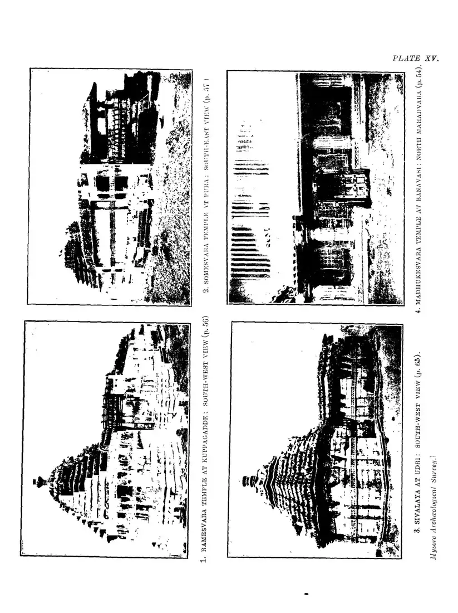
- RAMESVARA TEMPLE AT KUPPAGADDE : SOUTH-WEST VIEW (p. 56)
- SOMESVARA TEMPLE AT PURA : SOUTH-EAST VIEW (p. 57)
- SIVALAYA AT UDRI : SOUTH-WEST VIEW (p. 65)
- MADHUKESVARA TEMPLE AT BANAVASI : NORTH MAHADYARA (p. 54)
2 against the back compound wall.
2 in the alley to the right of the main temple.
2 or 3 against the south wall.
Several modern inscriptions along with the low relief carvings on the walls of the main temple and on the floors of the manṭapas.
Outside the compound on the south-east are two small temples, with stepped pyramid towers.
Chandragutti
Minor Shrines; Rěnuká Temple; Durgá Cave; Chandramaulísvara
Chandragutti or Chandragupta-pura is said to have been the home of Jamadagni. There is an unimportant Hanumân temple in the place. Near it is a modern stone called the 'Jânakî-Bâi-gôkallu' for cattle to rub themselves against. In the Bâvâji maṭha, 10 ft. in height, a Bâvâji is living. On the 'pâdakallu' there are a dozen modern Kannaḍa and Nâgari inscriptions of votaries ending with the word 'binnaha' like 'Bidanûra Raṅgaṇa binnaha'. Near it on a rock are a triśûla and a Hanumân figure between two pairs of feet. The 'Amma' is said to have come from the direction of Hârnahalî. A little higher up is a linga on a rock with the inscription 'kôṭi-tîrtha.' Near it on another rock is an inscription 'Kôṭi-tîrtha-vanu minda' etc. (E. C. VIII, Sb. 462). Then there is a tiled modern temple of Śûlada-Bîrappa full of about a thousand triśûlas or iron tridents offered by devotees. Further on is a small temple of Bhairava of the Vijayanagar times.
Further up in a large natural cave is a small linga, 6" high, now covered up with a metal face. Below it is a rock shaped like two colossal hips of a woman identified as those of Rênukâ who is said to have hidden here when Paraśurâma persued her. The outer part of the cave serves as a large sukhanâsi. The navaraṅga appears to be a painful attempt to imitate in granite the great work of the Châlukya style. It is probably of the late Vijayanagar or Pâllegâr days.
No animal sacrifices are held except at the time of the car festival at the foot of the hill.
In the navaraṅga are kept a figure called Sarasvati with a severed stone head on each side, a Ganêśa, a Nâga stone and a linga. There lies also a damaged wooden image of Kolhâpuradamma. On the pavement are the names and figures of numerous votaries including some chieftains.
Near the temple are a cave shrine of Mâtaṅgi, a 'siḍi', some 'Nâga' and 'Mâsti' stones and an image of Paraśurâma, 2½' high, with chakra, śaṅka and a 'Kamaṇdalu' in his left arm pit, and wearing 'jaṭâ.'
Further up is a large 'Tâvare kere.' To its east on a rock is a foot called 'siḍigallu.' To the west is an old fortress of early Vijayanagar type made of uncemented long stone beams.
About a hundred feet higher up is a cave in which is an image called 'Daṇdina Durgî,' a fine specimen, about 2' high, of Mahishâsura-mardinî standing with eight arms, on a 'Pâni-batlu.'
Durga Cave.
Every year a buffalo is sacrificed during 'Dasara,' though now a Brahman worships the deity. Just in front of the temple is a small slab of dark stone on which is depicted the self-beheading of two men at the feet of Durgâ. It is said that Rênukâ visits the place once a year and worships Durgâ.
Lower down and further on by the path is a small temple containing a linga, perhaps of the early Vijayanagar period. Just in front of it is a small pond in which Bhâgirathî or the Ganges is said to appear once in twelve years.
We then proceed past a ruined well, a broken cannon and a round bastion of a
Chandramaulisvara.
cannon holes to a fort gate and a ruined stone Masjid beyond, to the south of which are numerous stone foundations. Past the site of the stables, the 'gârina (properly 'gâreya') bhâvi,' a Kannaṇa inscription reading 'Suâde Bhavâni tîrtha,' a ruined Durbar manṭapa with Moslem arches, yet another fine fort wall with a gate and another well with the inscription 'Śaṅkara-linga tîrtha' and the ruins of old fort walls we go to the top where there are the basements of two ruined shrines one of which was that of Chandramauliśvara who gave his name to the hill. On a projecting spur to its west are a part of the fort with a bastion, some ruined temples, several rock-cut wells and a large stone building (a magazine, resembling the 'garađi' on the Chitradurga hill).
Kuppagadde
Kuppagađde is about 3 miles to the east of Tava Nandi on the Sorab-Banavâsi road and seems to be a place of great antiquity. There are
Rámésvara Temple
several temples in the village all of which are in ruins except the Râmésvara temple which is in a fair state of preservation (Plate XV, 1). An inscription stone, which stands near the latter and is dated 1189 A.D. records that the village was called Pushpâvati, Pushpanaṇara and Pushpaśakaṭa in the three previous ages, while its name in the Kali age is Kuppagađde and that this temple was built by a Brahman named Râma of the Mane-mane family, who got it consecrated at the hands of the illustrious Vâmaśakti Muni of the Kôdiya maṭha of Belgâvi (?).
The temple faces east and consists of a garbhagriha, a sukhanâsi and an open portal to which is added a long hall of five anikanas supported on 24 pillars and consisting of a slightly raised central nave and narrow aisles running on the three sides (Plate XVI). The garbhagriha and sukhanâsi doorways are nicely carved, the latter having perforated screens on either side (Plate XX, 3). There are four
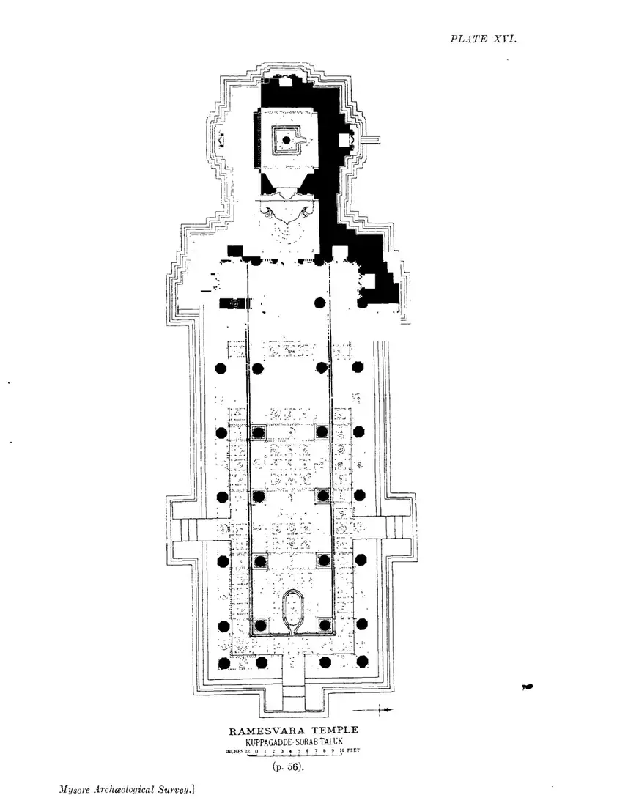
- RAMESVARA TEMPLE KUPPAGADDE-SORAB TALUK INCHES 12 0 1 2 3 4 5 6 7 8 9 10 FEET (p. 56)
Cited in the text: p. 56 ↩
niches in the portico, one on each of the end walls and one on either side of the sukhanâsi doorway, having the following figures in order commencing from the left: Saptamâtrikâs, Ganeśa, Châmundésvarî and Shaṇmukha—all of which are beautifully carved. A stone bench with a stone railing to lean back runs along the three sides of the hall pierced with narrow openings in the centre on all the three sides. Unfortunately a portion of the railing has broken down and is lying on the spot. With little or no cost it is possible to restore it to its original position. The pillars are of the usual round shape over a square base and the ceilings are flat and decorated with flowers. The bottoms of the beams also have carved rosettes. At the eastern end of the hall, right opposite the Deity, sits a beautifully carved Nandi, about 2\frac{1}{2} feet high. The outer wall of the temple is plain except for the 3 niches on the central axial lines of the sanctum sanctorum and the tower which is completely in stone is also simple in construction with thin bands of stone in several tiers, every alternative band having a carved plaque in the centre of each face.
Věnugôpála Image
No heading in the body: this section starts at its printed page (57).
There are several other smaller temples in the village and carved figures are lying all over the place among which an image of Vênugôpâla is worth mentioning. Its original temple having gone into ruins, it is housed in a small tiled cell recently built for the purpose. The image is about 6 feet high and exquisitely carved and similar to the one at Bellûr, Nagamangala Taluk, in richness of carving and delicacy of workmanship. It is a pity that such a beautiful piece of sculpture is hidden up in an out of the way place like this.
Pura
Somésvara Temple
No heading in the body: this section starts at its printed page (57).
Pura is a small hamlet at a distance of about 8 miles to the south of Sorab Town. From an inscription on a vîragal standing to the south of the Someśvara temple (E. C. VIII, Sb. 521) in the village it is seen that the place was originally called Bhavyapura. The temple is a small Hoysala structure facing east and consisting of a garbhagriha, a sukhanâsi and a navaraṅga with a porch attached to it. All the doorways are nicely carved, the front entrance door being the best (Plate XVIII, 1). There are perforated screens on either side of the sukhanâsi doorway as usual (Plate XV, 2). In the two end bays of the navaraṅga nearest the sukhanâsi are 4 niches, two facing each other and one on either side of the doorway. Commencing from the left these contain in order the images of Saptamâtrikâs, Umâmahésvara, Châmundésvarî and Vishnu with the attributes of padma, chakra, śaṅkha, and gadâ. An image of Vîrabhadra and one vîragal are also kept in the navaraṅga. The lintels over the garbhagriha and sukhanâsi have Gajalakshmî carved on them; while an image of Sarasvatî is carved over the navaraṅga doorway.
8
The porch has a raised bench with a stone railing along its sides, the outer surface of which is decorated with small turrets. The walls of the temple are plain but for a central carved band which runs all round the structure. The tower is very simple and devoid of the finial.
The most interesting fact about this temple is that the sanctum does not contain the Linga usually met with in all Îșvara temples.
Riding Image
Belgámi
Tripurántakésvara Temple
Situation; General Description; History
The temple of Tripurântakêșvara is situated in the north-east of the present village of Belgâvi or Belagâmi about three furlongs north of the Kêdârêșvara temple. The neighbourhood which was formerly overgrown with thick jungle has now been cleared and the temple has been considerably repaired in recent years, which saved it from complete ruin.
Situation. The building, as it now stands, is a double temple with two parallel shrines facing east. The south hall which is a manțapa opens on the south and on the east it is connected by a doorway with the north hall which has walled sides. A porch is standing on the east of the south hall while the corresponding basement to the east of the north hall is bare. To the north of the north hall is another shrine facing directly south; while to the south of the south hall is an entrance to the south pavilion.
General Description. The structure, as it now stands, is complicated. The major part of the building consisting of the northern half, the south shrine and the central part of the south pavilion show high class work; whereas the outer ankanas of the south pavilion and the porch are so inferior that they can never be attributed to the same architectural period. A close study of the detailed features suggests the following course of development:
History. The north portion is the major part of the original temple which faced south. On the south side, a few feet away, was a beautiful pavilion borne on four round
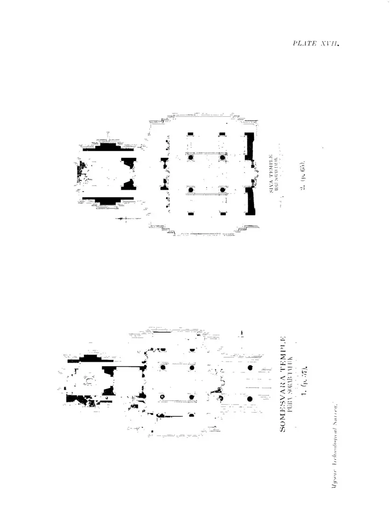
- (p. 57)
- (p. 659)
Cited in the text: p. 65 ↩
pillars with eaves, brackets and sculptures complete. This was separate from the main building as is the case with the pavilions at Belur and Hałebiđ. We can imagine that in the space between the pavilion and the main building steps led up from the east and west. The main shrine of Tripurântakêsvara, however, faced east with Vishnu in the north shrine. There was also a shrine to the south of the main shrine and facing the pavilion. The building whose door frames and pillars and sculptural work generally have a close resemblance to the earliest work at Belur and Hałebiđ was very probably constructed about the reign of Vishnuvardhana. The differences in plan, design and sculpture between the Kêdârêsvara and Tripurântakêsvara temples lead us to think that there must have been an interval of at least 30 or 40 years between the construction of the two temples.
At a later time, probably in the 2nd half of the 13th century, some alterations appear to have been made. The pavilion was given additions and enlarged into a mukhamantapa serving for both the shrines and a porch was put up to the east of this mantapa balancing with the porch of the main shrine. This latter, however, has now disappeared.
The basements and outer walls of the temple have in later times been so reset that many of the stones are not in their original positions.
Basement and Platform
Back View of the Temple; Maňtapa; South Shrine; Navaranga; Main Shrine; North Shrine
1. A man of destiny persecuted by serpents and elephants is venerated by them. His identity is uncertain.
2. Serpents shade him while he sleeps and birds bring him food.
3. Two swans lift up into the air a garrulous tortoise who opens his mouth, falls to the ground and is killed. (Plate XIV, 2 a).
4. A man saves women from being molested by a bear in a forest.
5. Ladies with sticks, dancing.
6. A jackal who attempts to lick the blood of two butting rams is killed by them (Plate XIV, 2 b).
7. A crocodile abducts a monkey who, however, escapes and laughs at the crocodile (Plate XIV, 2 c).
8. He-ass and woman.
9. She-ass and man.
10. Râma piercing the seven palms.
11. Râma killing Vâli.
The outer wall on the south and north of the whole temple has been almost completely destroyed. Its rebuilding in recent years is ugly and of little value for this study. Originally each shrine appears to have had an outer niche on its three walls, each of which contained an image. All these have now disappeared except a much damaged group of a fine Mahishâsuramardinî on the north-west wall of the temple. Each of the shrines must have had a stone tower; but no traces of these now remain.
The north porch has now completely disappeared and of the south one, only the pillars and beams remain.
The mantapa is a square-pillared hall open on the south and east. On the sides a low stone bench with a railing edges it. It has entrances on all the four sides. Its central ankana or square is formed by the original pavilion borne on four pillars with eaves, ceiling, etc., complete in itself. To it two other sets of squares have been added, making the present mantapa.
Even a hasty glance would point out that the artistic rounded pillars of the pavilion, which must have borne bracket figures originally, are of a different kind from the poorly finished indented square-shaped and 16 sided pillars of the outer squares. The latter are mere imitations of the fine pillars of other Châlukya structures.
All the ceilings are quite plain except that of the original pavilion. The latter has a flat padma borne on a square architrave on which are carved the exploits of Hanumân as described in the Sundarakânda and the battle between the heavenly hosts led by Indra on an elephant and some elephant-riding enemy. The leader of the gods, Indra, is also on an elephant and is followed by the Dikpâlakas and the hosts of Śiva. The scenes in which Hanumân discovers Sitâ and the one in which he wields his burning tail are unusual in Hoysala sculptures.
The doorway of the south shrine is a fine piece with detailed carvings containing on each jamb three vertical bands of scrolls and flowers, dancers, and intertwined nâgas. (Plate XIV, 1.) Some of these are very similar in design to the bands of the garbhagriha doorway of the Belur temple. The lintel has a fine Gajalakshmt. Inside the cell is a small linga on a low pedestal and behind it is now kept a seated Sarasvatî image with only one of its four hands remaining and holding a goad. Its slim waist, high breasts, erect back and other features suggest a similarity with the Môhini image on the Belur pillar and point out its date as 1100 A. D. We do not know from what temple it came.
South Shrine.
The doorway leading to the navaranga from the south resembles closely the doorway of the south cell and is probably the work of the same artist. On either side of it is a Śaiva dvârapâla, 4\frac{1}{2} feet high. These images are elegantly shaped and expressive and do not show the exaggeratedly prolific beaded work seen in the dvârapâlas of the Hoysalêsvara temple at Hałebiđ.
On the outer side of each dvârapâla is a perforated screen with four vertical scroll bands containing a dancing figure in each convolution. Above this wall is a portion of the old eaves visible under the newly constructed roof above it.
The navaranga is a square hall of four pillars. These latter are of the rounded jathe-turned form and each face of the base of each pillar is ornamented with a fine canopy under which is a dancer, a lady, Umâmahêsvara, Vishnu's avatâras, etc. Two of these, particularly, are finely posed, namely: lady musician, and Bali and Vâmana.
In the east part of the navaranga is a large soap-stone bull whose mouth wears an unusual grin.
The doorway of the main shrine is a beautiful piece of workmanship. The jambs have Rati and Manmatha on one side and a deer-headed (?) deity with consort on the other. On the outer side of each jamb is a beautiful pierced screen of intertwining nâgas. These screens are perhaps the finest in the Mysore State. On the outer side of each screen is a lady attendant finely poised. The lintel is magnificently carved with the figure of Śiva dancing as Gajâsuramardana in the centre flanked by Brahma and Kumâra and Ganêsa on the right and Vishnu as Kêsava, Garuđa and others on the left and surrounded by his attendants, gods and the Dikpâlakas. The central figure, particularly, is finely shaped and is in an active vigorous pose.
The sukhanâsi has 'a Chandrašilâ' or Moon stone. This feature exists in Belur but disappears from later Hoysala temples. In the cell is a medium sized 'pîtha' with a flat-headed linga.
An open sukhanâsi leads to the north cell whose doorway is also fine, but inferior in workmanship to the other doorways of the temple. Among its sculptures may be noticed a row of mythical animals. In the cell is a mutilated image of Vishnu as Kêsava (total 6\frac{1}{2} feet high). The front hands and legs are broken. But it is well proportioned and appears to come from about 1100 A. D. Consorts and attendants flank it on either side, while the ten avatâras appear on the tôraṇa. The god is nimbate. Since the image appears to come from a time before the conversion of Vishnuvardhana by Râmânuja, its presence is interesting in connection with the early religion of the Hoysala dynasty.
North Shrine.
In the navaranga are five cells which have lost their original images. Behind one of the south screens, however, is an elegantly carved Saptamátrikâ panel with the Seven Mothers only, seated in a row.
The absence of the Hoysała crest is noteworthy and suggests that the temple was built in the last days of Vinayáditya or the early days of Ballàla I. Very probably, the sculptors who constructed this temple were transferred to Belur by Vishnuvardhana for building the Kêšava temple.
Part II: Study of Monuments and Ancient Sites › Halebtd › Kaitabhésvara TempleKédárésvara Temple
History; Outer View; Towers
On the way from Shiralkoppa to Belgávi village at almost the south-east end of that place near the tank bund is the temple of Kêdârêšvara with its connected buildings. It must have been formerly in the midst of a well populated part of the old town since in its neighbourhood especially, on the south and west, there are many ruined brick and stone foundations and basements.
The temple is a medium sized structure almost entirely of soap-stone and is a fine specimen of late Châlukyan or early Hoysała architecture. It has comparatively few sculptures and its architectural members are well shaped and tastefully ornamented. Though it is not so high or large as the temple of Kaiṭabhêšvara at Kubatur, it is of nearly the same type except for the fact that it is a three-celled or trikúṭâchala structure, while the former is unicelled.
The temple appears to have been built by Udayáditya or Vinayáditya Hoysała who was a vassal governing the Banavàsi 12,000 under History. Châlukya suzerainty. The only subsequent alteration in the temple appears to be the formation, in very recent times, of the easternmost ankaṇas into a shrine for Nañdi by putting up an ugly earthen wall and closing up the eastern passage to the manṭapa. It is probable also that the neighbouring Prabhudêva temple was built about the middle of the 13th century and the mahâdvâra, a little later.
As usual with this style the temple which mostly follows the indented square pattern has a platform following its contour. The latter is now imbedded in the earth with only its top visible.
Outer view. The basement which has 4 cornices is simple and plain.
The monotony of the wall line is removed by the addition of plain squarish pilasters and of a row of turretted canopies tastefully placed in the panels between these pilasters. These turrets are also of the indented square type with stone śikharas and kalaśas.
The three large towers or vimânas are similar in form to those on the walls, having three tiers of square turrets with square śikharas and round stone kalaśas. The front face of each has a projection over the sukhanâsi which has a Sała group on top and a kîrtimukha in front. The Sala group of the north tower is found in a half-worked condition near Prabhudêva's temple; while the panels of the kîrtimukha are all empty. They appear to have been grand pieces of sculpture with the eight Dikpâlakas around the horse-shoe, dancers and musicians on the base and luxuriant floral ornamentation springing out of the mouths of the lion heads and the makaras. The western kîrtimukha is perhaps the grandest of the three and the western tower is slightly higher than the other two. Some of the interesting figures on the towers are (from the south east, clockwise): Bhairava, Tâṇdavêsvara, Umâmahêsvara, Ugranarasiniha, Varâha.
Maňtapa
Cells; Prabhudéva's Temple
No heading in the body: this section starts at its printed page (63).
The basement of the manṭapa is very similar to that at Kubatur having from the bottom a row of flowers, a cornice with small kîrtimukhas, a row of pilasters with curvilinear stepped pyramids or towers and a railing of double round columns with intervening figures of dancers and drummers and creeper scroll on the top edge with varied flowers, birds, animals, wrestlers, dancers, etc., in the convolutions.
The eaves which project around the manṭapa only have imitation woodwork on their underside with floral ornamentation. They have the usual elegant 'S' form.
Above the eaves is the parapet formed by turrets with a frieze of lions and elephants. On the śikharas of the turrets are kîrtimukhas with the sculptures of various gods like (from the east clockwise): Tâṇdavêsvara, Bhairava, Kêšava, Nañdikêsvara.
The manṭapa is an indented square-shaped pavilion originally open on all sides except the west where it is continuous with a navaraṅga of four pillars. But since no wall intervenes between the manṭapa and the navaraṅga, a pleasing effect is produced by the feeling of roominess in spite of the small proportions of the buildings. In the navaraṅga are six niches one of which only contains the original sculptured piece, the Saptamâtrikâ group. Some stray sculptures are stored in the other niches. At the east end of the manṭapa in a recently built shrine is a large Nañdi bull.
The outer ring of pillars is composed of 16 sided, fluted and well polished pieces, while the inner pillars are of the polished round lathe-turned type with the bell moulding more or less ornamented with leaf shapes. The pillars between the navaraṅga and the manṭapa are the best-worked. The capitals are all simple, while the beams have all of them friezes of flowers on both their faces.
The ceilings are all flat and divided into squares, each one of which contains a finely carved flat lotus. The central ceiling of the manṭapa, however, has Tâṇdavêsvara in the centre surrounded by the eight Dikpâlakas, while one of the ceilings in the navaraṅga has a large padma, five feet in diameter.
A comparatively plain, but typically Châlukya doorway with Gajalakshmi and high towers on the lintel and architrave leads to the south cell where there is a small narrow-headed linga on a low base.
Cells.
A similar doorway on the north admits us to the north cell in which is housed an image of Vishnu standing as Kêśava with the daśāvatāras on the tôraṇa.
The west cell only has a sukhanâsi whose doorway is flanked by perforated screens of a simple design, while the lintel bears a fine group with Śiva standing attended by Brahma, Vishnu, Gaṇêśa, Shaṇmukha, etc. It looks as if the insertion of this doorway was an after-thought. The western cell doorway is similar to those of the south and north cells. In the garbhagriha on a low pîtha is a medium sized round-headed linga.
Prabhudêva's temple is a smaller trikûṭāchala type situated to the left of the main shrine. It has also an open mukhamaṇṭapa, a small navaraṅga and three garbhagrihas. The back walls are decorated with a horizontal frieze of flowers in the middle of the wall; while the front basement and railing have a similar ornamentation. The pond-shaped manṭapa is plain and has on the benches a series of cylindrical pillars. The inner four pillars of the manṭapa are of the bell-shaped kind. The navaraṅga doorway shows good workmanship though the images on the lintel and the simple flowers of the perforated screen are all covered with lime-wash. On either side of the navaraṅga doorway is a towered niche which must have contained Gaṇêśa on the right and Mahishâsuramardinî on the left. Both these images are now absent. The navaraṅga is narrow and pond-shaped with square-planned pillars imbedded in the walls. The south and west shrines contain round-headed lingas while the north one has a figure of Vîrabhadra of perhaps the 17th century.
Directly opposite to Kêdârêśvara is a soap-stone mahâdvâra which must have given admission to the temple compound in the Hoysaṭa days.
To the south of the main temple is a ruined building built at about the same time as Prabhudêva's temple and perhaps used as a temple or a manṭapa.
In the compound are numerous inscriptions dating from the time of Vikramâditya VI to the days of Châmarâja Wođeyar IV of Mysore. In front of Prabhudêva's temple is an octagonal temple.
Part II: Study of Monuments and Ancient Sites › Halebtd › Kaitabhésvara TemplePañchalingésvara Temple
The Pañchalingêśvara temple, though small, is endowed with a sense of largeness in everything connected with it. The garbhagriha doorway is lofty, the dvârapâlaka figures said to have stood here before, but now found in the museum at Bangalore, are large and the linga inside is also huge. The temple necessarily
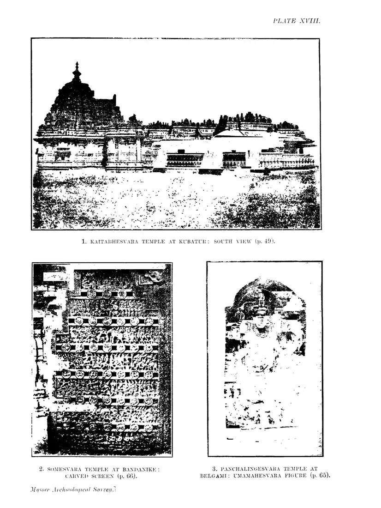
- KAITABHESVARA TEMPLE AT KUBATUR: SOUTH VIEW (p. 49)
- SOMESVARA TEMPLE AT BANDANIKE: CARVED SCREEN (p. 66)
- PANCHALINGESVARA TEMPLE AT BELGAMI: UMAMAHESVARA FIGURE (p. 65)
must have been much larger than what it is now, as it is stated to have been the seat of Kâlâmukhî Brahmachâris containing a Sanskrit academy in which several students received their education. Unfortunately only the garbhagrîha and sukhanâsi are now standing and the front manțapa which differs from the garbhagrîha both in scale and treatment is apparently a later addition. The sukhanâsi doorway is very well carved and the ceiling is unusually high. Among the figures lying in the vicinity of the temple is one which deserves special mention. The figure of Umâmahêsvara with which a legend is associated by the local people ( vide Report of 1911) is an exquisite piece of sculpture (Plate XVIII, 3). The clear-cut features of the body, the gracefulness of the pose, the absence of the excessive ornamentation which is a characteristic feature of Hoysala sculptures and the shape and treatment of the head-dress indicate that it may belong to the pre-Hoysala period and possibly be ascribed to the 10th or 11th century A. D. This interesting specimen deserves to be carefully preserved from damage.
Udri
Šiválaya
No heading in the body: this section starts at its printed page (65).
Udri is situated at a distance of 6 miles to the north-east of Sorab Town. This is called Uddhura, Uddhare and Uddharâpura in inscriptions, and described as the principal defence and treasure house of the rulers of Jiđđulige Nâđ which was one of the Kampanas of the Banavâsi kingdom during the time of king Vîra Ballâla. The place must have been an important one in ancient times as can be seen from the traces of its fortwalls, and numerous inscriptions, vîragals and temples found inside it. Pieces of carved stones are scattered all over the village and in the pond. The village even now presents a neat appearance, several of the houses having gardens of fruits and flower plants attached to them. Several images of a female figure of almost life size with the right hand raised and the left hanging down holding a water pot are lying scattered at the entrance to the village. These may perhaps be another form of Sati stones. There was not a soul in the village at the time of inspection, the whole village having migrated to a neighbouring village to attend a jâtra festival.
There are several temples in the village all of which are in ruins. The most important monument of these (Plate XV, 3) is the Sivalaya. Šivâlaya situated at the north entrance to the village. It consists of a garbhagrîha, a sukhanâsi, and a navaranga. (Plate XVII, 2.) There are 2 niches, one on either side of the sukhanâsi doorway. The right niche has a figure of Shaṇmukha, while the left is empty. By the side of the left niche in the navaranga there is a figure of Yakshiñi holding a lotus in her right hand; her left arm is missing. In front of Shaṇmukha there is a linga with a small Basava facing it. The Gaṇapati figure which was probably in the empty niche is now kept in the garbhagrîha against the wall.
9
In the sukhanāsi the Saptamātrikâ images are kept. The lintel over the garbhagrīha is not carved, and that over the sukhanāsi has a seated Jain image. The panel over this lintel has a standing Jain figure with chauri bearers and attendants. This as well as the presence of the Yakshiñt figure, already referred to, go to show that this must have been a Jinâlaya at first, which was later on converted into a Śiva temple. This is perhaps the Jinâlaya referred to in the inscription stone standing near it (E. C. VIII, Sb 140) which states that the structure was constructed in the year 1197 A. D. The perforated panel with Śankara carved in the centre placed above the navaraṅga doorway seems to be a later addition probably substituted at the time of its conversion. The pillars of the navaraṅga are beautifully carved and the ceilings are all flat and plain except the central one which has a giant flower with innumerable long petals covering the whole space. The outside of the temple and the tower are plain and the finish is quite modern and ugly.
Besides the above there are two more Íśvara temples in the village both of which are completely in ruins.
Another temple in the village is dedicated to Lakshmî-Nârâyaṇa and consists of a garbhagrīha and a sukhanāsi. The lintel over the garbhagrīha door has Gajalakshmî carved, while that over the sukhanāsi has the figure of Vênugôpâla. The image inside is a good piece of Hoysala art in a sitting posture with the attributes : śankha, padma, gadâ and chakra and Lakshmî sitting on the lap.
Part II: Study of Monuments and Ancient SitesBandanike
Bandanike, which is described as the capital city of the Kadamba kings of Nâgarkhaṇḍa, must have been a prosperous town in the 11th and 12th centuries. The ruins of the city cover an extensive area the whole of which is over-grown with thick forest harbouring wild beasts. The most important of the monuments found here have been noticed in the Archæological Report for 1911 (Para 41).
Three Temples
Among these the Jain Basti is the earliest having been mentioned in an inscription, dated 918 A.D., the Trimûrti temple is the largest and the Sôméśvara temple, called Boppéśvara in the inscription standing near it, is the handsomest. The basti was restored and the front manṭapa added by one Boppa Šetṭi about the year 1200 and in 1203 A. D. some more devotees granted endowments to it for its maintenance. No definite date for the construction of the Trimûrti temple can be ascertained but by comparison of the style and treatment, it may be assigned to the same period as the Sôméśvara temple, i.e. , to about 1160 A.D. This last temple contains two carved screens fixed on either side of the front door, which show admirable workmanship (Plate XVIII, 2). Fortunately both of them are still in good condition though one of them has cracked from top to bottom. As these are rare specimens of perforated work, it would be well if at least this temple is
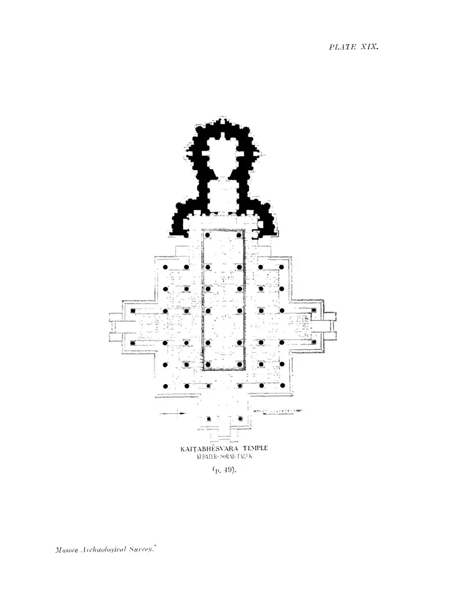
- KAITĀBHÊSVARA TEMPLE KĪBAHU-SŲRAB TAUK (p. 49)
Cited in the text: p. 49 ↩
cleared of all vegetation and preserved from further deterioration by means of all protective measures necessary.
Besides the above there are three more temples : one dedicated to Banašańkarí, one dedicated to Šiva and the other empty. The Šiva temple is called Sahasralinga temple but the inscription standing near it calls it Sômêšvara. All these are in ruins and not interesting architecturally.
Kittūr (Heggađadévankōte Taluk)
Fort; Ancient Site; Rāmēśvara Temple
HEGGADDÈVANKÔTE TALUK.
To the north-west, about a mile away, is a fort about 100 yards by 100 yards, with a mound formed by a collapsed mud wall with a moat. Inside is a large foundation called the Pâlłegâr's Palace. To its east is a small Basava temple with a Basava standing on an octagonal pillar with the engravings of Kâłì, Bhairava, Tândavêšvara, Nandiásvara, Châmunđâ, Vaishnavî, Durgâ and two Bhřingis riding on the shoulders of two women. Near the door is a slab on which a man, his lady and child are marching with a swordsman behind them, his sword being uplifted. These sculptures appear to be of the Pâlłegâr times. To the left of the road to Marałi is a mound formed by the fallen west gate near which is a slab of granite, 4' × 2' bearing a Kannađa inscription of nearly 17 lines. It is in modern 17th century characters and mentions the name of Šriinga Nâyaka in the 3rd line.
To the north of the town is a lane called the 'Kalłôni' leading to the Jíyâra village. Its floor is strewn with pieces of old large size bricks. A water course by its side shows the ground, about 2' below, to be full of pottery, bricks, etc., which are at least 800 years old, if not older. In the field belonging to Deva-Chandrayya is a shrineless Basava called 'Nađu-kêri-Basava' near which is a Nâyak's image (4' high) with dagger in his right hand. Round granite pieces are found nearby showing / Châlukya or Hoysała connections. Nearby is also a linga which is, perhaps, at least 1,000 years old. The Basava is certainly not of the Hoysała times : it is plainer and perhaps, also, 1,000 years old.
The field to its south is pointed out as the old 'Sûle-gêri'. To its south-east is a field called 'Lachchi-hola' in a corner of which a pit was sunk. Here at a depth of 1½' only was found a row of bricks fallen on the broad end, evidently of a collapsed wall. These bricks measured 12" × 6" × 2" and are probably of a smaller kind than the larger ones measuring 16" × 9" × 2¾" or 3' said to be found in the Sûle-gêri and 'Basavanaguđi hola'.
The Râmêšvara temple is a structure of moderate size mostly reconstructed in Ramesvara Temple. the early part of the 19th century, but having some old relics. The building stands in a walled court-yard (130' × 100') and has a garbhagriha, a sukhanâsi, a six-pillared navaranga, a small mukhamantapa and a Dêvî and Nandi shrines. The garbhagriha (8' × 7') which is plain and of granite stone, has a large black linga (2' 3" high). The sukhanâsi (7' × 7') contains a small Basava of the 19th century. Its doorway is plain with modern dvârapâlas. In the navaranga are kept Nâgas, Ganapatis, etc. But the most ancient image among them is that of Mahishâsuramardinî, a relief figure, 4' high, standing on a buffalo's head. The pose is very much like that of a similar figure in the temple at Nandi, while the form of the body is like that of the Bhairavî figure in the Kôlâramma's temple at Kolar. The image wears a kirîṭa and shorts and holds horn (?), chakra, śañkha and kaṭihasta.
Part II: Study of Monuments and Ancient SitesArasinakere
Near Chaṭṭnahalli, about 10 miles south-west of Mysore, is situated this village with a small silted up tank and a temple of Mahadêvêsvara. About quarter of a mile directly to the east of the village runs a water course, silted up and choked in several places, which appears to have cut deeply into the ground in the past, ultimately emptying itself into the Kapinî river near Râmapura. About 10' below the ground level, there appears to be a bed of pot-stone rocks. One of such rocks was probably jutting out prominently in the path of the water course. It is possible that the Bull on the Châmuṇđî hill suggested that its pair should be carved out of this rock.
At present, in the midst of the ploughed fields, we notice a large oval hollow (about 18' to 50') in the centre of which is a smaller hollow filled up with silt. Here about 1C' below the ground were visible the top of the forehead of a roughly-worked large stone bull and its two short horns, each of about 3' 7" in length and 1' 9" in diameter at its base. The ornamental band encircling the root of the horns is about 3' 9" in diameter and 9" in width. (Plate XII, 2.)
As only a foot of the sculpture was visible, enquiries were made to collect more information. About 20 years ago, Šivapâda-svâmi, the popular Jañgama of Mysore, had, it appears, with the permission of the Jahagîrdâr Sardar Gopal Raj Urs, excavated here and disclosed to view the Bull's ears, eyes, snout, hump and part of the body. According to tradition, it is said that the feet of the bull have not been carved out of the living rock and that the sculptor Đakanâchâri left the work thus unfinished, leaving even his tools on the spot. On a little excavation, two unfinished ears, each of the length of 3' 6" and of the width of 1' 6" at the base, were unearthed.
Colossal Bull
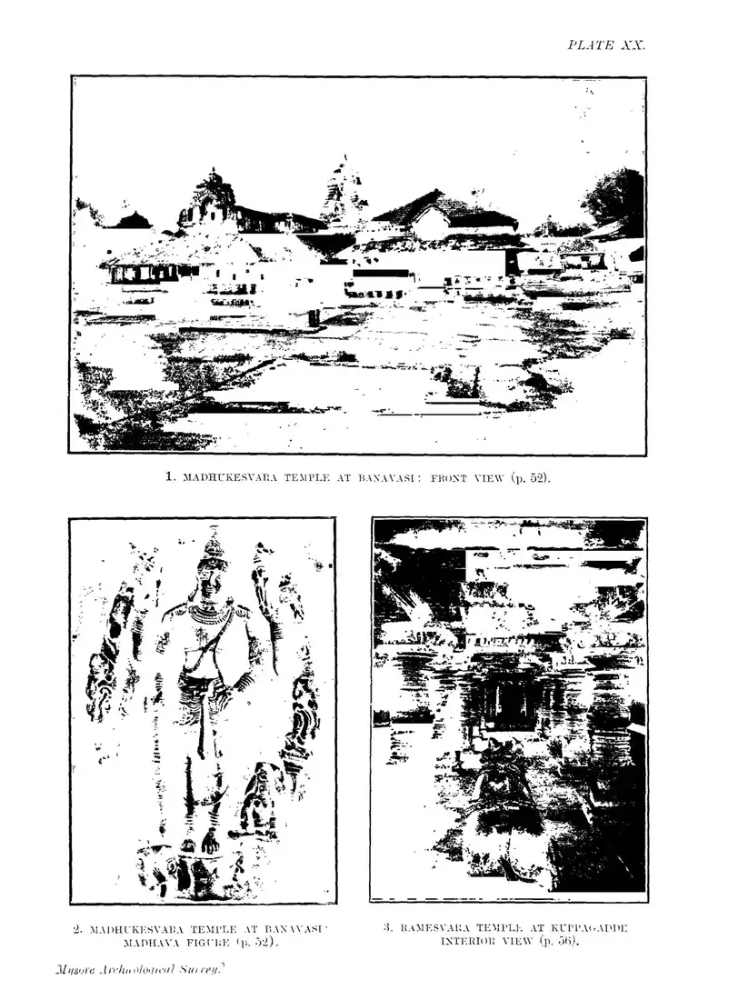
- MADHUKESVARA TEMPLE AT BANAVASI: FRONT VIEW (p. 52)
- MADHUKESVARA TEMPLE AT BANAVASI: MADHAVA FIGURE (p. 52)
- RAMESVARA TEMPLE AT KUPPAGADIE INTERIOR VIEW (p. 56)
Part III: Numismatics
SOME VIJAYANAGAR COINS— contd
Sadáśivaráya
(PLATE XXI—1)
Lakshmínáráyaṇa
No heading in the body: this section starts at its printed page (69).
Type A :— Lakshminarayana.
(a) GOLD VARÁHA.
1. Ai . 45 Wt. 52'6.
Obverse :—Vishnu and Lakshmî seated on raised seat.
Reverse :—Three line Nâgari legend with interlinear rules :—
Śrī pra tâ pa Sa dâ si va râ ya
2. Ai . 45.
Obverse :—Similar to No. 1, but fainter.
Reverse :—Similar to No. 1, but the third line reads :—
(Râ) ya ru
(b) GOLD HALF-VARÁHA. 1
3. Ai . 4 Wt. 25'6.
Half Varâha similar to No. 1.
Sadâśiva Râya's Varâhas are often confused with those of Sadâśiva Nâyak of Ikkeri. The emperor was a Vaishṇava and his coins generally have on the obverse Vishnu and Lakshmî with conch and discus ; while on the reverse there is invariably the title 'Râya' and often the word 'Pratâpa.' The Nâyak, though a very broad-minded ruler, was a Śaiva by birth and his coins have Śiva and Pârvatî with triśûla, đamaruga, etc., and only the legend 'Śrī Sadâśiva' on the reverse. On some Vijayanagar specimens, 'Râya' becomes 'Râyaru,' the addition being due to the nominative plural termination of respect usual in the Kannađa language. The legend also indicates the predominance of this language at the court under the Tuľuva dynasty as contrasted with the 'lu' in Tirumala-Râyalu which shows that Telugu rose into importance under the Āravīđu dynasty, perhaps with the transfer of the capital to Penukonđa.
1 Ind. Ant. XXI, p. 322.
Copper :—Garuđa
No heading in the body: this section starts at its printed page (70).
It is significant that the de facto ruler of the time, Rāma Rāya, did not issue coins in his own name. The military situation led the great general to assume control over the empire; but he was still loyal enough to the dynasty of his father-in-law to let Sadâśiva reign and appear on the coins and inscriptions as the sovereign of the empire.
Type B. Copper:— Garuda.
4. Ae.
Obverse:—Garuđa kneeling to left, as on a coin of Krīshṇarāya.
Reverse:—Three line Nâgari legend:—
Srī Sa dâ si va râ ya ru
5. Ae.
Obverse:—In circle of dots Garuđa similar to No. 4.
Reverse:—Three line Nâgari legend with double rules between the lines and each letter in a square:—
Srī
Sa dâ si va râ ya
6. Ae. Small coin.
Obverse:—Garuđa seated in padmâsana with folded hands.
Reverse:—Nâgari legend as above, with 'Si va' clearly visible.
No. 4 is not found in London or Mysore. It appears to exist in Madras and is figured and described by Hultzsch. 1 No. 5 is important as it leads on to the chequered reverse types which became so common after this period.
Sadâśiva was content to reintroduce the Lakshmînârâyaṇa and Garuđa types, the former of which was for a long time in disuse. His name would show that the Tułuva dynasty became pronouncedly Vaishṇava only after it rose to power and in its more humble days, it was more under Smârta influence.
Rangachari and Desikachari 2 attribute a coin with 'Lion' (Horse?) passant to left on the obverse and an uncertain Nâgari legend on the reverse to Sadâśiva Râya. It is difficult to read the legend as 'Srī Sadâśiva Râya.' The coin figured by them is more probably a provincial issue.
1 Ind. Ant. XXI, p. 322.
2 Ind. Ant. XXIV, p. 25, No. 6.
The Āravíđu Dynasty
Tirumalaráya
Šrí Rāma
Conch and Discus; Garuđa
No heading in the body: this section starts at its printed page (71).
Type A:— Sri Rama.
(a) VARÂHA.
7. Ai. . 45. Varâha Wt. 51'6.
Obverse :—On raised seat meant to be a throne, 1 Śrī Rāma is seated wearing tall crown or kirīṭa, with Sītâ seated by his side to the left and Lakshmaṇa standing behind the throne to the right. Lakshmaṇa has a strung bow on his right shoulder and his hands are joined in devotion. Rāma's right hand is in the abhaya mudrâ or attitude of reassurance.
Reverse :—Three line Nâgari legend with interlinear rules :—
Srī Ti ru ma la râ ya lu
8. Ai. Varâha.
Obverse :—Very low relief, in dotted border similar to No. 7. Lakshmaṇa holds the bow in his left hand and is nearly hidden by the margin.
Reverse :—In dotted border with creeper in front stands Hanumân to left with hands joined and tail raised up.
The unusually low and faint relief shows that this specimen came from a mint different from that of No. 7.
(b) HALF-VARÂHA.
9. Ai. Half Varâha. Similar to No. 7.
Tirumala's Varâhas bear on the obverse a group which evidently stands for the coronation of Śrī Rāma with only Rāma, Sītâ and Lakshmaṇa.
After Sadâśiva's death in 1570, Tirumala Râya found it necessary for military reasons to make Penukonḍa his capital. He thus transferred himself and his empire from the protection of God Virûpâksha of Vijayanagar to the care of Râma-chañdra. Tirumala still invoked on his inscriptions Gaṇapati, Śiva and Vishnu, and had always the old imperial colophon 'Śrī Virûpâksha' in Kannaḍa. 2 Yet owing to the resistance offered by Penukonḍa to the Moslems combined with the influence of the Śrī Vaishṇava teachers and possibly the choice of Rāma as the special deity
1 Ind. Ant. XX, p. 307 ; E. C. S. I., No. 182 figures one of these coins but the legend is read incorrectly. (= Ellict : Coins of Southern India).
2 C. C. Krishnamacharlu in the Ind. Ant. 1915, p. 225. of the emperor, he introduced Râma on the coins. It is likely that the tradition about the Râm-Tañkas said to have been minted at the coronation of Râma, may have led to the issue of a large number of new Râma-Tañkas 1 on and subsequent to the coronation of his devotee Tirumala Râya. As the reign of Tirumala synchronises with the revival of the worship of Râma in South India under the leadership of the Tâtâchâryas, it is reasonable to hold that some of the Râma-Tañkas of good gold which are worshipped in South India were produced in the days of Tirumala and his successors. But a large number of them, especially those of silver and alloys, are imitations produced not only in the south but also in the north as is borne out by the Hindi couplet on some of them :—
Râma, Lachmana, Jânakî! May Victory be to Hanumân.
Tirumala's coins bear witness not only to the highly devotional character of the emperor but also to the fact that after Tâlikôta the Karnâtaka Empire not only drove back the invaders but was able to recover a great deal of its territory, finances and prosperity, though its organisation might have become more decentralised and its prestige greatly diminished.
Type B :— Conch and Discus.
10. Ae. '65
Obverse :—In ring of dots, large conch to left and discus to right, with crescent moon above and sun below.
Reverse :—In linear circle surrounded by a ring of dots, dagger in centre and on both sides of it three line Nâgari legend reversed :
(cha)
la ma râ ya
Type C :— Garuda.
11. Ae.
Obverse :—In ring of dots, anthropoid Garuđa kneeling to left with dagger in front and conch and discus on both sides of head.
Reverse :—In double lined circle with ring of dots between them, three line Nâgari legend reversed with interlinear rules :—
Sri Ti ru ma la râ ya
The two copper coins No. 10 and 11 appear to be cast and are similar in make to the Madura coins of Venkaṭappa Nâyaka.
Boar
Elephant; Bull
No heading in the body: this section starts at its printed page (73).
The conch and discus are distinctive Vaishṇava symbols and stand respectively for Vishṇu's terrible discus or chakra named Sudarśana, with flames darting forth from it; and his conch, the Śañkha Pāñchajanya, which he took as a trophy from the demon Pañchajana and with which he blew his triumphant blast in the hours of battle and of victory. These two emblems passed from the Karnāṭaka Empire to the kingdom of Madura where they appear on the coins of some of the Nâyaks. But they found a final home in Madura's feudatory and later successor for power in the south-west, Travancore. In this latter kingdom, the chakra appeared so commonly on the coins that a class of them became known as 'Chakrams,' which are still the most popular copper pieces circulating in that state.
Type D :— Boar.
12. Ae. '6
Obverse:— In linear ring surrounded by a ring of dots 1 , boar charging to right with lifted tail and bristles on back standing on end. The boar wears girdle ornament. In field above, dagger and sun.
Reverse :— In linear ring surrounded by ring of dots, corrupt three line legend with interlinear rules in Nañdi Nâgari characters, resembling Kannaḍa characters :—
Srī Ti ru ma la râ ya
There can be no uncertainty about the legend, though the omission of some parts of the characters makes it difficult to read.
13. Similar to No. 12 as figured by Elliot 2 . The legend was read as "Chalam (Chalan) Triramala taka (tanka)." The legend is correctly :—
Srī Ti ru ma la râ ya
The Nañdi Nâgari characters have acquired a peculiar form perhaps owing to worn out old legends being copied by illiterate craftsmen or, more probably, owing to a change in the mode of writing due to the influence of Kannaḍa characters.
14. Ae. '6
Obverse:— In ring of dots, Boar to right with raised tail 3 and bristles and dagger and crescent moon above.
Reverse :— In ring of dots, corrupt three line Kannaḍa legend with interlinear rules :
Srī Ti ru ma la râ ya
10
The specimen is ruder than No. 13, and the legend barbarous. Hultzsch holds that it is corrupt Kannaḍa 1 .
The boar is Âdi Varâha, the third incarnation of Vishnu. It was the famous crest of the Châlukyas. It is interesting to find Tirumala Râya reviving the old Châlukyan boar, perhaps in connection with the temple of Śvêta Varâha at Śrî Mushna. Elliot 2 , Hultzsch and Rangachari and Desikachari 3 have published several coins of the 'Chalama Tirumala' variety.
Type E:— Elephant.
15. Ae.
Obverse:—In broken linear circle with a ring of dots outside 4 , tusker elepant to left with sun and moon above and dagger in front. Four dots under a line in field below.
Reverse:—In lined circle with ring of dots three line Nâgari legend:—
(Srî cha)
la ma râ ya
Rangachari and Desikachari read the legend as 'Uttama Râya'. 'Chalama Râya' may be better as the title 'Chalama' appears on other coins of the boar type and of Veñkaṭa Râya I. Its exact significance and its attribution to Tirumala Râya are both doubtful.
Type F:— Bull.
16. Ae.
Obverse:—Bull couchant with dagger.
Reverse:—Nâgari legend 'Tirumala' reversed.
On page 25 of Vol. XXIII of the Indian Antiquary, Rangachari and Desikachari publish the coin. They read the legend as 'Uttama Râya' and explain it in a long note concluding that it refers probably to Achyuta Râya. The legend is perhaps 'Tirumala' reversed and the coin most probably the issue of some Viceroy in the Udayagiri area. The couchant bull was not a symbol of the Karṇâṭaka Empire in its best days. It appears to have come with the Telugu influence from the Konḍavîđu border land more than from Râmêśvaram where also it was an old device. This fact that about this time the Crown Prince Śrî Ranga actually took Udayagiri and Konḍavîđu supports the view that this type was issued by Ranga in the name of his father after Konḍavîđu was taken. That the bull in some form could still appear on the coins of the empire bears out the fact that Tirumala worshipped both Śiva and Vishnu though his personal inclination was towards Râmachandra.
- 1 Ind. Ant. XXI, p. 322.
3 Ind. Ant. XXIII, p. 25.
4 Ind. Ant. XXIII, p 25, No. 4.
Part III: Numismatics › SOME VIJAYANAGAR COINS— contd › The Āravíđu DynastyŠrí Raṅga Ráya I
Veňkaťeśa
No heading in the body: this section starts at its printed page (75).
Type A :— Venkatesa.
17. Ai. 5 Varáha Wt. 52-8.
Obverse :—Under ornamental arch supported by ornamental pillars, god Veňkaťėša standing to front as on a Veňkaťėša type of Křishnaráya.
Reverse :—Three line Nâgari legend with interlinear lines :—
Srí ra(n)
ga râ ya
Śrī Raṅga Râya I's chosen deity would appear to be Veňkaťėša of Tirupati as he chose that god for the obverse of his coins following the model of Křishnarâya. The condition of the coin shows that art was still flourishing and the finances of the Empire were quite good. It was Śrī Raṅga Râya I who evidently revived the Veňkaťėšvara series. That the Emperor was not a bigoted Vaishnava yet is shown by his continuing the old practice of invoking Gaṇapti, Śiva and Vishṇu in his inscriptions and using the old Kannaḍa colophon 'Śrī Virtupâksha'. 1
Veňkaťaráya I
Veňkaťeśa
Garuđa; Hanumán
No heading in the body: this section starts at its printed page (75).
Type A :— Venkatesa.
(a) GOLD, "VENKATARÁYA VARÁHA."
18. Ai. 45. Varáha. Metal, fair quality Wt. 52 (?)
Obverse :—Under plain arch supported by pillars of dots, God Veňkaťėša standing to front as on a coin of Křishnaráya.
Reverse :—Three line barbarous Nâgari legend with interlinear double rules.
Cha la ma
Vañ ka ṭa ra yâ
(b) GOLD HALF-VARÁHA.
19. Ai. Veňkaṭarâya Half Varáha.
Obverse :—Under ornamental arch supported by ornamental pillars, Veňkaťėša standing to front.
Reverse :—Similar to No. 18. But the legend reads :
Vi ra
Veñ ka ṭa râ ya
1 Bidie: Pagoda or Varáha coins, p. 47.
The Veñkaṭēsvara types are numerous and the only ones among them which can be assigned with any certainty to any definite ruler are those bearing the king's name Veñkaṭa Râya as distinguished from the god's name 'Veñkaṭēsvara.' The word 'Chalama,' which is met with also on some coins of Tirumala Râya, has been explained as 'Saluva'; but its real meaning is still uncertain. The title 'Vîra' is only a reversion to the old title of Harihara I and Bukka I and would be properly applied to the last great ruler of the empire. On the coins, the form 'Veñkaṭa Râya' always appears and not 'Veñkaṭapati,' and there is little doubt that it refers to Veñkaṭa Râya I who wielded real authority in South India. That the empire in his day was still prosperous is borne out by the comparatively good kind of coinage issued and the gold in the coins.
Veñkaṭa Râya I was an able soldier and ruler. But the Shahis gave him such trouble that he had to change his capital several times. These experiences and the probable annexation of Vijayanagar by the Moslems induced the king to alter his colophon to 'Śrî Veñkaṭēsa' in Kannaḍa. He was crowned by a Śrîvaishnava guru and was himself so far a follower of that sect that, in his inscriptions, Veñkaṭēsa is invoked at the commencement and only Vishnu exclusively in other places. Henceforth Śrîvaishnavism became the king's religion and the ruler greatly encouraged the worship of Veñkaṭēsa, the family god of his family gurus, the Tâtâchâryas.
Type B:— Garuda.
20. Ae. 8. Large and thick.
Similar to Krîshṇarâya's Garuḍa type but the legend is in mixed Nâgari and modern Kannaḍa characters and reads:—
Srî
Veñ ka ṭa râ ya
Hultzsch attributes this type to Veñkaṭappa Nâyak of Madura. But the use of the word 'Râya' and the close resemblance of this type to the Garuḍa type of Krîshṇarâya points to its being an issue of Veñkaṭarâya I.
Type C:— Hanuman.
21. Ae. 5. Smaller than 20.
Obverse:—Rude anthropoid Hanumân to left, with right hand uplifted as on Harihara's coins.
Reverse:—In ornamented square, two line Nâgari legend:—
Śrî (Veñka?)
ṭa râ va The figure is more like Hanumân than Garuđa and the square on the reverse makes it contemporaneous with the issues of the Madura Nâyaks. The last letter of the legend may suggest the Mahrattas of Tanjore who also had a Veñkaṭa Râv. But the association of Hanumân with Garuđa and the figure of the former closely resembling the obverse figure of the issues of Murâri and Harihara I make the coin more probably that of a Veñkata Râya of the Karṇâṭaka Empire. As it is unlikely that Veñkata Râya II issued any coinage in his own name, the specimen has been attributed to Veñkaṭa Râya I.
Rangachari and Desikachari attribute a variety with Hanumân on the obverse and a Nâgari legend on the reverse to Veñkaṭapati and read the legend 'Śrī Veñkaṭapati Râya.' The same legend is read by Hultzsch 'Vitra Bhûpati Râya.'
Šrí Raṅga Ráya II
Bull Couchant
No heading in the body: this section starts at its printed page (77).
Type :— Bull couchant.
22. Ae.
Obverse :—Bull couchant as on Tirumala Râya's No. 16.
Reverse :—Telugu legend :—
Che ka râ ya lu
The distinctly Telugu legend and the couchant bull suggest that the specimen was issued in the Udayagiri area. It has been assigned to Śrī Raṅga Râya II as he was generally known by his title 'Chikkarâya' or the crown prince or, better still, as co-regent. In the capacity of Viceroy, he ruled the north-east frontier as every other crown prince had to do in those days and it is not unlikely that the specimen in question was issued by him in his own name even when his uncle was still on the throne. Towards the end of the latter's reign he allowed the Viceroys to be practically independent and it would be nothing unusual if the co-regent issued copper coins in his own name as Madura was even then doing.
Veňkaťapati Ráya II
Veňkaťeśa with Consorts
No heading in the body: this section starts at its printed page (77).
Type :— Venkatesa with Consorts.
23. Ai. Varâha.
Obverse :—God Veñkaṭêsa with Śrīdêvî on right and Bhûdêvî on left.
Reverse :—Uncertain.
This type was the original of the 'Three Svâmi' pagoda which even the E. I. Co. issued in its earlier days.
Part III: Numismatics › SOME VIJAYANAGAR COINS— contd › The Āravíđu DynastyŠrí Raṅga Ráya III
Veňkaťeśa
No heading in the body: this section starts at its printed page (78).
Type A :— Venkatesa.
(a) GAŃDIKÓTA VARÁHA.
24. Ai. '5 Varáha. Wt. 51'5 underweight. Much alloy 1 .
Obverse :—Under arch, Veňkatěša as on Venkaťaráya I's coins.
Reverse :— Fine three line Nágari legend : —
Srí Ven ka tě sva râ ya na mah
25. Ai '5 Varáha.
Obverse :—Similar to No. 24, but art poorer, pillars still elaborate.
Reverse :—Three line Nágari legend of which only part is clear :— śri Va ka .... ra na ma standing for 'Šrí Veňkatěšvaráya namah'.
26. Ai. '45 Varáha 2 Wt. 52'3.
Obverse :—Similar to No. 24 but a little less elaborate.
Reverse :—Three line Nágari legend, barbarous.
On No. 24, the inferiority of the metal shows that it was issued by the Government in financial difficulties. The legend is more indefinite in character on 25; it is possible to read the legend though it is barbarous. Bidie 3 reads it as 'Sri Ram, Raja Ram, Ram Raja,' which is evidently inexplicable and incorrect. The legend on No. 26 has been read by Hultzsch as 'Šrí Veňkatěšvaráya namah'; but it is very indistinct and may be read differently.
(b) HALF VARÁHA.
27. Ai. Gaňdikóta Half Varáha.
Similar to Gaňdikóta Varáha.
Subsequent to 1615, the last rulers of the decaying empire sought refuge in the great God of Tirupati and issued gold pieces in his name only. These have his effigy on the obverse and on the reverse a Nágari legend, often an illegible scrawl : “Šrí Veňkatěšáya namah,” meaning “Adoration to Šrí Veňkatěša.” Such coins are widely used for worship in South India especially by the Šrívaishnavas. It cannot
1 Bidie, p. 46.
2 Ind. Ant. XX 307; E. C. S. I. No. 106.
3 Bidie, p. 47.
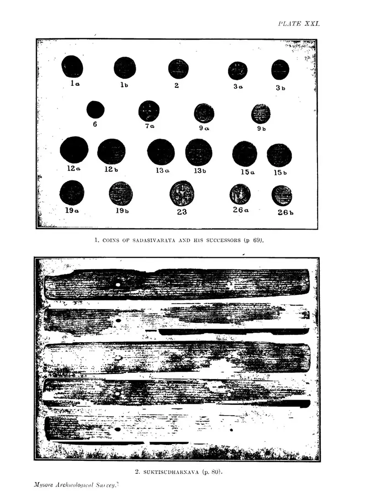
- COINS OF SADASIVARAYA AND HIS SUCCESSORS (p 69)
- SUKTISUDHARNAVA (p. 80)
Cited in the text: p. 80 ↩
be definitely said that Veñkaṭarāya I himself did not issue them in his last days. However, it continued to be issued by the local rulers until they were conquered by the Shahi armies in 1646 and later. They show a varying quality of metal, a varying standard of art and a varying clearness of legend and would appear to have been issued mostly in the days of Rāmachandra and Veñkaṭarāya II. The Moslem conquerors copied it in whole or in part owing to its great popularity and later on the East India Company continued to issue its pagodas with the figure of Veñkaṭēśa on them. The Veñkaṭēśa type is generally known as the Gaṇḍikôṭa Varāha, after a fortress in the Cadapah District which was one of the strongholds of the Karṇāṭaka empire in its last days.
Part IV: Manuscripts
Mallikárjuna's Sūktisudhárṇava
(A Great Anthology of Old Kannađa Poetry)
Bélūr Manuscript; Description of other Manuscripts
(Plate XXI, 2).
It has been well-known that the poet Mallikārjuna produced this work in the reign of Sōmēšvara Hoysaļa. Till now only two fragmentary manuscripts of the work appear to have been known. A fresh and correct manuscript of the same work has been discovered at Belur, Hassan District, in the library of Mr. Rāma Dās, a descendant of the famous scholar, musician and poet Vaikunṭha Dāsa of Belur.
The Belur manuscript is practically complete except for the loss of the last chapter and does not bear any sign of the last portion having been copied out at all. The manuscript contains 62 palm leaves (size : 17" × 2") of which the right hand side of the first leaf has been lost. The title of the last or the 18th chapter which is missing is mentioned in the introductory chapter as Virōdhijaya and the first chapter of the manuscript appears really to be composed of what ought to be two different chapters, viz. , Pīṭhika and Samudra-Varṇanam. The first and second chapters only contain the proper prose colophon mentioning, in addition to the name of the chapter, the fact that it is a portion of the work called 'Kāvya-sāra' composed by Mallikārjuna. At the end of each of the other chapters only the chapter name is given.
There is no definite indication of the date of copying. This has to be inferred from the palæography of the manuscript. The scribe appears to have been a man of learning and culture and he has used the difficult letter '∞' correctly. At the same time the aspirates like 'dha' 'tha', etc., have the vertical separation strokes at the bottom. These and other features suggest that the manuscript might have been copied in the 17th century.
Only two other manuscripts of this 'Kāvya-sāra' have been known and both of them are now in the Government Oriental Library, Mysore. Both of these are paper manuscripts. The smaller of the two which bears the Register No. K. A. 51 contains only the first 8 chapters, of which the 2nd and the 8th are both incomplete. So far as it goes, its readings and versions agree very closely with the Belur manuscript. The chief differences are these:—
(1) Chapter I of K. A. 51 is the introduction and Chapter II is 'Samudra-Varṇana'.
(2) It contains 28 stanzas which are absent from the Belur manuscript, while the latter has 20 stanzas which are not found in K. A. 51.
Evidently the two manuscripts were copied from two different sources and K. A. 51 was probably the manuscript which was used by the editors of the first edition of the 'Kâvyâvalôkana.' K. A. 51 is highly useful in supplying the missing portions of the first leaf of the Belur manuscript.
The other manuscript bears the Register No. K. A. 180. It bears the same title and has 15 chapters corresponding in name to the first fifteen chapters of the Belur manuscript. But the differences between this manuscript and the other two are so great that it would be difficult to identify it as the same work :—
(1) The first half of the first chapter containing Hoysala genealogy is altogether omitted.
(2) Though each chapter begins with similar sets of stanzas descriptive of the contents of the chapter, the succeeding stanzas are in a very different order and the selections also considerably differ. Many verses composed by poets subsequent to Mallikârjuna like Chauṇdarasa (A.D. 1300) 1 Madhura-kavi (A.D. 1385) 2 and a stanza from Sômarâja are also inserted, though a very large proportion of the verses are identical with those found in the other two manuscripts.
(3) There are definite differences also in the invocatory stanzas which will be discussed under the religion of the author.
(4) The colophons also differ.
Of the three manuscripts now under consideration it is comparatively easy to decide that No. K. A. 180 should not be relied upon. Since it contains the writings of later writers it is not correctly the work of Mallikârjuna. It appears to be the attempt of a later writer to produce another anthology using Mallikârjuna's work and making additions from later writers thereto. Its main use would perhaps be in supplying us with alternative readings for verses whose identity can be definitely established in two works. Further it may have its own independent value as a revised anthology of a later date. Another work of a similar nature and bearing also the title Kâvya-sâra was produced at a later age by Abhinava-Vâdi-Vidyânañda.
It was noted above that the other two manuscripts are practically identical so far as they go, though the Belur manuscript is definitely more valuable since it is fuller, more correct and is much older. K. A. 51 would, of course, help to supply the missing portions of the first chapter.
In the present note the Belur manuscript is solely relied upon except for the fact that the missing portion of the first leaf is made up from K. A. 51.
1 R. Narasimhachar : Kavicharitre Vol. I, page 403.
2 ibid. page 427.
11
The name of the poet is distinctly mentioned as Mallikârjuna and a note has been published about him in Mr. R. Narasimhachar's The Poet. Karnâtaka Kavicharitre, Vol. I, pages 369-80. Mr. Narasimhachar in reviewing the work assigned the date circa 1245 A.D. to its author whom he has correctly mentioned as being connected with Sômêśvara Hoysała and his father Narasimha. But a change made by Mr. Narasimhachar in the second edition of his work has given rise to a doubt about the religion of the poet. Mr. Narasimhachar states in this edition that the work begins with the praises of Jina and therefore the poet was a Jain, while in the first edition both these statements are absent, the religion of the poet being thus an open question. On this point and on the question of the date of the author, Dr. A. Venkatasubbiah has published an article in his book 'Kelavu Kannađa Kavigala Jivana Kâlavichâra', (page 182) holding the view that the author was a Smârta Brâhman identical with Chidânanda Mallikârjuna of Basral and the work was definitely produced in the year 1263 A.D. Mallikârjuna's work is an important evidence and, sometimes the only one, for the dates of several authors whom he quotes. Since the Belur manuscript has now been discovered, an attempt is made below to decide these points of controversy, namely :—
(1) the identity of the poet,
(2) his religion,
(3) his date.
From a close study of the manuscripts and the position held by the two differing scholars it looks very probable that Mr. Narasimhachar wrote his note for the first edition of the Kavicharitre with only the original of K. A. 51 and that the changes were made in the second edition on the basis of the information obtained by a glance at the commencement of the original of K. A. 180 without a detailed study. Dr. Venkatasubbiah has no note on the manuscript used by him.
Mr. Narasimhachar has noticed two poets Chidânanda Kavi (1235) and Mallikârjuna (C. 1245) separately and agreed that the former was the author of the Basral temple inscription of 1237 A. D. which mentions him as Chidânanda, son of Parama Prakâša Yôgîśvara. 1 Dr. Venkatasubbiah identifies Mallikârjuna with Chidânanda of the Basral inscription. This identification can be supported by the following points :—
1. The author of the Sûktisudhârnava is mentioned as Parama Chidânanda Mallikârjuna in the colophons and as Chidânanda only in a verse in the introductory chapter.
2. Kêširâja mentions his father's name as Chidânanda Mallikârjuna. 2
2 Šabdamañidarpaña Ch. I, Stanza 2.
3. Several stanzas giving Hoysała genealogy in the present work are identical with those found in the Basral inscription and in Nagamangala 98 which was also, probably, the composition of the same author.
Thus there could be little doubt that the author of the present work and the inscriptions was Chidânanda Mallikârjuna.
There is no reason to doubt Mallikârjuna's statement that he was the son-in-law of Sumanôbâna, the general and poet of the Relationship . ccurt of Narasimha Hoysała. Kêsirâja names his father as Chidânanda Mallikârjuna while his maternal grandfather is stated to be Sumanôbâna. Thus Kêsirâja was no doubt the son of Mallikârjuna.
The view that the poet was a Jain is held by Mr. Narasimhachar in the second edition of Vol. I of the Kavicharitre owing purely to the fact that Jina is praised at the commencement of the manuscript used by him. Since, as stated above, this version is of Manuscript K. A. 180, it may not be relied upon; nor is there any definite reason to hold that Kêsirâja was a Jain 1 . Even if he was, there is no reason to think that father and son must necessarily have belonged to the same faith. Further, in the Belur manuscript not only are Vishnu, Śiva, Gaṇapati and Sarasvati praised but praises of Jina are significantly absent and in no part of the manuscript does there appear any indication that the author had special reverence for the Jain faith. In fact Jainism occupies a secondary position while faith in Śiva predominates including admiration for the sport of hunting in which Śiva indulged 2 . This and the fact that the author, as inferred above, was connected with the consecration of the Basral temple, though just as an author, go to show that the religion of the author was, in all probability, according to the Smârta sect.
For lack of direct evidence in respect of the author's date we have to depend on the dates assigned to Sômêśvara Hoysała of whom Dates of Somesvara . Mallikârjuna was a contemporary. Mr. R. Narasimhachar has stated 3 that this king reigned from 1234 to 1254 A. D.
1 Kavicharitre, Vol. I. p. 386.
2 ಮೊದರೊಳುಮಾಮಹೇತ್ವರನೆ ಬೇಡರರೂಪನೆ ತಾಳ್ವಿ ಬೇಂಟೆಯಾ |
ಡಿಮೊಡಿನ ವಂಶಜರ್ ಪರಬರುಂ ನೃಪರತ್ಕಿ ಢಯೆಳಂತು ಬೇಂಟೆಯಾ |
ಡಿಮೊಡ ಮೃತಾಂಶು ವಂಶತಿಲಿಕರ್ ಮೃಗಯಾತ್ಮಿ ಢಗಳಾಗಿ ದೇಂಟೆಯಾ |
ಡಿದರೆನೆ ದೋಷಮಿಲ್ಲಪವಿಯದರ್ ಪಜ್ಞುವರ್ ಮೃಗಯಾವಿನೋದಮಂ ||
3 Kavicharitre Vol. I, p. 369. But in Vol. III intro P. LIX he has accepted that Sômêśvara may have died in 1264 A. D.
Dr. Venkatasubbiah, on the other hand, would put the date of Sômêśvara's death long afterwards i.e. , in about 1265 A. D., 1 though he seems to have no objection with regard to his initial year i.e. , 1234. In the views held by them, both the scholars appear to have depended largely on others' statements: Mr. Narasimhachar following Rice 2 and Dr. Venkatasubbiah following H. Krishna Sastri. 3 It is true, as Narasimhachar has said, that Narasimha III had begun his rule in the Karnāṭaka country by about 1256 A. D; but it is also true, as Dr. Venkatasubbiah holds, that Sômêśvara had not died by then; for the inscription Bl. 125, though it was issued by Narasimha III himself, was, in fact, issued for the prosperity of his father's kingdom, not for that of his own. Dr. Venkatasubbiah adduces two more inscriptions—Bl. 73 of March 14, 1255 A. D. and Hg. 10 of June 20, 1255 A. D.—to prove conclusively that even after 1254 A. D. Sômêśvara was living and actually ruling his dominions from Kaṇṇanúr. But his statement, based on Mr. H. Krishna Sastri's, that Sômêśvara lived up to 1265 A. D. cannot be maintained; for we are by no means certain whether the inscription dated in the 29th year of Sômêśvara has any bearing whatsoever on the date of his coronation as emperor in the Karnāṭaka country. He does not consider if it would be feasible to class as one chronological set all the inscriptions of Sômêśvara irrespective of the localities they come from. Indeed, there appears to have been one system of reckoning his dates in the Kannaḍa country and quite a different one in the Tamil land. His inscriptions in the Kannaḍa country invariably give the Śaka year and other details but generally do not give the corresponding regnal year. In one or two cases where the regnal year is given— e.g. , Tk. 87, 5th year—the reference was unmistakably to the year of his coronation (1234) in the Kannaḍa country. Salem 69, 204 of 1910 may however be cited to show that in the north-west part of the Tamil land, too, the regnal year had reference to the year of his coronation in the Kannaḍa country. But we must remember that Salem is very near the Kannaḍa country and may have been included within its very precincts during the days of the Hoysaṭas. In the Tamil country proper the inscriptions of the time of Sômêśvara are invariably dated in his regnal years but seldom give the equivalent Śaka years, though other details are sometimes given. Further, these details themselves have been misleading in view of the fact that while a few of the inscriptions may also be shown to point to the initial year of Sômêśvara as having begun in 1233-34 A. D. others, which form the majority, would carry the initial year definitely backwards, though they would yet point to no definite date. A list of such inscriptions could be given but it does not
1 Kelavu Kannaḍa Kavigaṭa Jivana-kāla Vichāra P. 185.
2 Rice E. C. V. Intro. P. 26.
3 A. S. I. 1909-10 P. 150 ff. seem necessary here for our purposes. 1 Suffice it to say, however, that though the initial year problem in the Tamil country is enveloped by some amount of interesting uncertainty, it is certain that Sômêsvara's governorship in the Tamil country began several years before 1233-34 A. D.; 2 that from such initial year his regnal years began to be counted there; and that, therefore, the inscription of his 29th year pointed out by H. Krishna Sastri and Dr. Venkatasubbiah has no bearing on the longevity of the life of Sômêsvara. The Bâchalli plates 3 give us incontrovertible evidence of Sômêsvara's death which must have occurred before 1st April 1256 and Hg. 10 affirms that he was living on June 20, 1255 A. D. We have to conclude, therefore, that Sômêsvara died sometime between 20th June 1255 and 1st April 1256 and we would not be far wrong in putting his death nearer the latter than the former date.
It is not necessary to assume, as Mr. H. Krishna Sastri and Dr. Venkatasubbiah have done, 4 that Sômêsvara was killed by Jaṭâvarman Suñdara Pândya 5 in 1265 A.D., for the period of the latter's rule was from 1254 A.D. to 1271 A.D. and Sômêsvara could very well have been killed by him, if indeed he was killed, in 1256 A. D. This date cannot, however, be affected by the two stanzas quoted by Dr. Venkatasubbiah 6 in his attempt to show that Sômêsvara was a contemporary not only of Krishna Kandhara (1247-61) of the Yâdava dynasty but also of his younger brother Mahâdêva (1261-71 A. D.). The first stanza mentioning Krishna is already found in the inscription Md. 122 7 of 1237 A. D. and his contemporaneity with Sômêsvara is beyond doubt. But the word 'Mahâdêva' occurring in the second stanza may not mean Mahâdêva of the Yâdavas of Dêvagiri; it may only be an exclamatory word used while describing the prowess of Sômêsvara himself 8 . If, indeed, there was a
1 We may, however, mention :—
(a) 73 of 1895, M. E. R:—Sômêsvara's 2nd year, Mina, Pûrvapaksha, 13 Monday, Pûśam, of which the corresponding dates would be either (i) Monday, March 1, 1227 A. D. on which day the nakshatra was Āślêsha (not Pushya); or (ii) Monday, February 25, 1230 A. D. on which day the tithi was dvâdaśi (not trayôdaśi). Whichever be the probable date of these, it is certain that it is anterior to 1234 A. D. i.e. , the accepted year of Sômêsvara's coronation in the Kannaḍa country.
(b) 103 of 1892 M. E. R:—Sômêsvara's 21st year, Kurni, Pûrvapaksha, pañchami, Sunday, Anila nâl, of which the corresponding date is 12th September 1249 A. D., Sunday. The initial year would thus work up to 1227-28 A. D.
4 A. S. I. 1909-10 P. 154-56; Kelavu Kannaḍa Kavigaḥa Jivana-Kâla Vichâra P. 185.
6 Kelavu Kannaḍa Kavigaḥa Jivana-Kâla Vichâra p. 185. war between Sômêšvara and Mahâdêva, the poet, whom we should also expect to have been alive at that time, would naturally have written scores of stanzas describing the exploits of his patron. According to an inscription at Bellur 1 it was Narasimha III, Sômêšvara's son, who fought with Mahâdêva and Dr. Venkatasubbiah's attribution of the son's deed to the father is not supported by history. Nor can we guess that Narasimha III could have been sent against Mahâdêva by Sômêšvara; for, while, in the first place, the significance of the word 'Mahâdêva,' as given by Dr. Venkatasubbiah, is untenable, it would also, in the second place, be difficult so to interpret the stanza as to bring out that it was not Mahâdêva but Narasimha III who led the expedition. Even without all this discussion we may, without much ado, believe that Sômêšvara was dead by 1st April 1256 A. D.
Criticism of the Manuscripts
The Poet; His Identity; Relationship; Religion; Dates of Sōmēśvara
Mallikárjuna's Date
Historical Information; Review of the work as in the Bélūr Manuscript
No heading in the body: this section starts at its printed page (86).
The date assigned by Mr. R. Narasimhachar to Mallikârjuna's work is 1245 A. D. 2 But from inscriptions we learn that Sômêšvara's constant stay in the Kannađa country was only till about 1240 A. D. and that, after this date until his death, his principal 'nelevîdu' or capital was Kaṇṇanûr. Since the present work contains unidentified stanzas in Chapter V referring to the marriage of Narasimha II which must have taken place early in the century and also stanzas found in the inscriptions dated 1223 and 1228 A. D., there is reason to think that Mallikârjuna, their possible author, was more than a middle-aged man when Sômêšvara became emperor. Some of the selections describe the exploits of Sômêšvara's earlier years. Further, about a dozen of the stanzas in the present work which describe Hoysala genealogy are identical with similar stanzas in the inscriptions Ng. 98 and Md. 121-122 which bear the dates 1228 and 1237 A.D. For these reasons, it may be surmised that Mallikârjuna, the probable author of these inscriptions, produced the Sûktisudhârnava in the early years of Sômêšvara's reign, possibly between 1237, the date of the Basral inscription, and 1240 A. D., the probable date of Sômêšvara's departure for the Tamil country. Mr. Narasimhachar has assigned the date 1245 for the reason that in the manuscript used by him—probably the original of the Mysore Oriental Library manuscript K. A. 51—stanzas from Âṇdayya's Kabbigara Kâva have been extracted. Since Âṇdayya's date itself depends upon this quotation 3 and since the present manuscript has no extracts from Âṇdayya, it is not necessary to push Mallikârjuna's date beyond 1240. Since we have accepted the identification of our author with Chidânanda Mallikârjuna of the Basral inscription, the present work might be assigned the date C. 1237 A. D. which is the date of that inscription.
2 Kavi Charitre Vol. I, p. 369.
In a stanza in the 7th chapter of the present work, there occurs a reference 1 to a poet named Kêśavadêva. Since the only known poet of that name during the period is the famous grammarian and author Kêśirâja, several of whose poetical compositions have been lost, the idea suggests itself that he is the person referred to. But since he is Mallikârjuna's own son and the passage refers to Kêśavadêva as an authority on the character of old female go-betweens, a doubt arises whether a father would admire his son's knowledge of this subject and record it in his work. Though such a situation is not impossible, it would be more suitable to assume that Kavi Kêśavadêva, referred to here, may be a different and perhaps an older poet.
For historical purposes about a dozen stanzas selected from various chapters of the work would be of use in addition to the well-known Historical Information . verses describing Hoysala genealogy and found also in the Mandya inscriptions referred to above.
A verse in ch. 5 refers to the fact that Narasimha, probably King Narasimha II, wore a diadem at the time of his marriage. One verse found also in Md. 122 refers to Sômêsvara's campaigns against Krishṇa Kandhara, the Yâdava prince, against the Chôlas, the Pândyas and the Chêras. Several other stanzas describe graphically his campaign in the Tamil country on behalf of the emperor Narasimha, his father. We are told that his armies reached the sea, that he beheaded a Chôla and obtained booty, elephants, horses and jewels. In another stanza, found also in Md. 121, an ambitious claim is made that the Turushka king (whoever he was) held a lantern before Narasimha while the Chôla king is stated to have borne his betel bag and the king of Gaula walked before him as a servant. On the whole except the fact that Sômêsvara beheaded some Chôla, no important information is available for history.
Mallikârjuna's Sûktisudhârnava is a unique work in Indian Kâvya literature.
Review of the work as in the Belur Manuscript. Its plan is highly original. On the one hand, unlike many other kâvyas, it does not develop the story of any particular hero or heroine. In fact, it has no plot at all. On the other hand, unlike the ordinary anthologies, the present work definitely adopts the machinery of a mahâ-kâvya. Sanskrit writers on poetics have described the classical features of a mahâ-kâvya as consisting of 18 main components of a descriptive nature:—
ನಗರಾರ್ಣವ ಶೈಲತು ಚಂದ್ರಾಕೋದಯ ವರ್ಣನ್ವೈಃ
ಉದ್ಯಾನ ಸಲಲ ಕ್ರೀಡಾ ಮಧುಪಾನ ರತೋತ್ಸವ್ವೈಃ
ವಿಪ್ರಲಂಘೈವಿ ವಾಹಶ್ಚ ಕುಮಾರೋದಯವರ್ಣನ್ವೈಃ
ಮಂತ್ರ ದೂತಪ್ರಯಾಣಾಜಿ ನಾಯಕಾಧ್ಯುದಯ್ವೈರಪಿ ||
, ಖಾತಿ-ಚುತ್ರವರ್ಣಂತೇ ತತ್ವಪಾಕಾವ್ಯಮುಚ್ಛತೇ 2
1 'ಧಾವಕ ಚಕ್ರವರ್ತಿ ಕವಿಕೇಶವ ದೇವನೆ ಬಲ್ಲನುರ್ವಿಯೋಕ್'
2 Dandli's Kâvyâdarśa Ch. I, Verses 16 ff.
Mallikârjuna has taken this model of a kâvya but changed the order of the contents for the better and prefaced them with a number of introductory verses which ought, properly speaking, to form a separate chapter. The topics of his chapters in the present manuscript are :—
(1) Introductory : the ocean (2) Mountain. (3) City.
(4) Progress of royal authority. (5) Marriage. (6) Birth of a Prince.
(7) Moon-light. (8) Sun rise. (9) The seasons.
(10) Pleasure garden. (11) Water sports. (12) Wine drinking.
(13) Love. (14) Separation. (15) Counsel.
(16) Royal messenger. (17) Military expedition. (18) War (missing).
The details to be studied under each one of these headings have not been described in any known Kannađa or Sanskrit work on poetics. But Mallikârjuna, after a careful study of the work of previous authors, analyses each one of these subjects into a large number of topics and mentions them in specially composed verses at the commencement of each subject. Then selecting the best verses from the works of the previous writers, he re-arranges them under the particular topics and subjects as analysed by him.
Thus his work is a compendium giving all the descriptions of a mahâ-kâvya in the words of the great Kannađa poets.
The work contains, in all, more than 2,000 verses of which it has been possible to identify only about one-half as being extracted from known works in Kannađa. The other half appear to contain verses of two different classes : first, since it is a well-known fact that many great authors and works have now been forgotten, some of the selections may be considered to belong to such lost works ; since some of the verses deal with varied stories, Jain, Śaiva and Vaishnava, they are evidently extracts from various works selected for their literary merits from Jain, Śaiva and Vaishnava authors. Secondly, a large number of verses approaching to nearly a quarter of the work refer to Hoysala kings and their exploits, particularly to Sômêśvara and his earlier life including his successful wars as a prince. These suggest that they are extracts from some large work of very high quality which we are unable to identify. In the 24th verse of the introductory chapter Mallikârjuna states :—
‘ಕೃತಿಯಂ ನಿರ್ಮಿಸಿ ಮುನ್ನ ಮಾದರಿಕೆಯೇರ್ ಶ್ರೀಹರ್ಷನುಂ ಕೋಜ ಥೂಪತಿಯುಂ
ಸತ್ಯವಿ ವಜ್ರ ಹಸ್ತನೃಪನುಂ ಸರ್ವಜ್ಞ ಸೋಮೇಶನುನ್ನತಿ ನೆತ್ರಂ ಧರೆಗಿಂದು ಮಲ್ಲಿಬುದನಿಂದಂ.’
In this verse, he claims that Sômêśvara became famous in this world by the work of Malla or Mallikârjuna himself. The reference may be to the present work of Mallikârjuna or, more probably, to another work of Mallikârjuna describing the earlier life of Sômêśvara. It must, however, be confessed that no other reference to this work has been obtainable.
Literary value of the work
No heading in the body: this section starts at its printed page (89).
The Súktisudhārṇava is thus not only a treasury of great Kannaḍa poetry, but it is also itself a work with a very high order of literary merit. The author's knowledge of Kannaḍa literature is deep and comprehensive, his analysis almost perfect according to the old standards, his literary taste judiciously elegant. There is little that is commonplace or coarse in the work and the author is a person who cares for ideas and thoughts more than for the effect of mere grand words and sounds. Arthālanikāras are more prominent than Śabdālanikāras showing that the author had more admiration for the Vaidarbhi style than for the Gauḍi . But the artificial figures of speech themselves occupy a place comparatively subordinate to realistic descriptions of nature. The work is thus one of first rate importance to Kannaḍa Literature.
12
Footnotes
p. 72 1 E. C. S. I., p. 99.
p. 73 1 E. C S. I. No. 103. 2 E. C. S. I. No. 104. 3 Elliot : Num. Gleanings. No. 11-17.
p. 74 2 E. C. S. I. No. 103.
p. 82 1 E. C. III, Md. 122, line 73.
p. 85 2 See E. C. III Nj. 36 and IV Ng. 98 which indicate definitely that Sômêsvara was ruling in the Tamil country already in 1228 A. D. Vide Sewel, Hist. Ins. of Southern India, p. 139. 602 of 1905 M. E. R. is a record of Sômêsvara from Tingaṭur dated Subhânu, i.e. , 1224 A.D.
p. 85 3 E. C. IV Kr. 9.
p. 85 5 E. I. III, P. 7-17.
p. 85 7 E. C. III.
p. 85 8 See R. Narasimhachar's remarks in Kavi Charitre Vol. III, intro. lix ff.
p. 86 1 E. C. IV Ng. 39.
p. 86 3 See Kavi Charitre, p. 366.
All plates (20)
Click a plate to go to its place in the text; each plate there has links to the previous and next plate and back to this list.